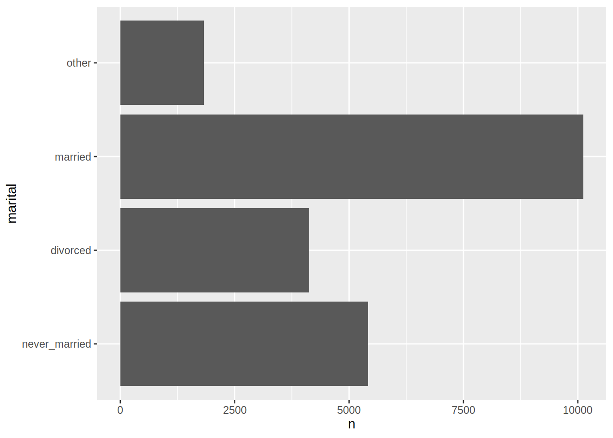
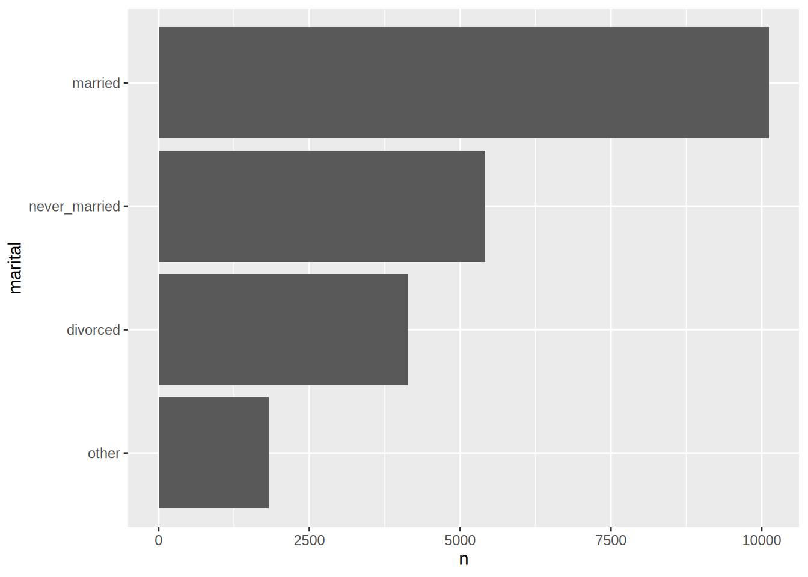
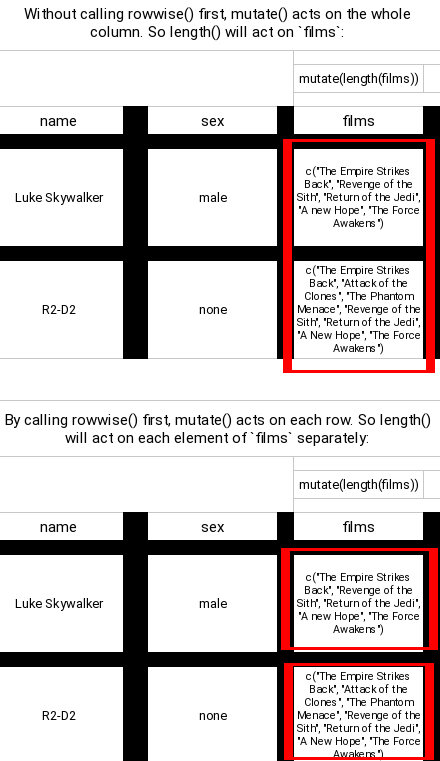

Chapter 4 Descriptive statistics and data manipulation
Now that we are familiar with some R objects and know how to import data, it is time to write some
code. In this chapter, we are going to compute descriptive statistics for a single dataset, but
also for a list of datasets later in the chapter. However, I will not give a list of functions to
compute descriptive statistics; if you need a specific function you can find easily in the Help
pane in Rstudio or using any modern internet search engine. What I will do is show you a workflow
that allows you to compute the descripitive statisics you need fast. R has a lot of built-in
functions for descriptive statistics; however, if you want to compute statistics for different
sub-groups, some more complex manipulations are needed. At least this was true in the past.
Nowadays, thanks to the packages from the {tidyverse}, it is very easy and fast to compute
descriptive statistics by any stratifying variable(s). The package we are going to use for this is
called {dplyr}. {dplyr} contains a lot of functions that make manipulating data and computing
descriptive statistics very easy. To make things easier for now, we are going to use example data
included with {dplyr}. So no need to import an external dataset; this does not change anything to
the example that we are going to study here; the source of the data does not matter for this. Using
dplyr is possible only if the data you are working with is already in a useful shape. When data
is more messy, you will need to first manipulate it to bring it a tidy format. For this, we will
use {tidyr}, which is very useful package to reshape data and to do advanced cleaning of your
data. All these tidyverse functions are also called verbs. However, before getting to know these
verbs, let’s do an analysis using standard, or base R functions. This will be the benchmark
against which we are going to measure a {tidyverse} workflow.
4.1 A data exploration exercice using base R
Let’s first load the starwars data set, included in the {dplyr} package:
library(dplyr)
data(starwars)Let’s first take a look at the data:
head(starwars)## # A tibble: 6 × 14
## name height mass hair_color skin_color eye_color birth_year sex gender
## <chr> <int> <dbl> <chr> <chr> <chr> <dbl> <chr> <chr>
## 1 Luke Sky… 172 77 blond fair blue 19 male mascu…
## 2 C-3PO 167 75 <NA> gold yellow 112 none mascu…
## 3 R2-D2 96 32 <NA> white, bl… red 33 none mascu…
## 4 Darth Va… 202 136 none white yellow 41.9 male mascu…
## 5 Leia Org… 150 49 brown light brown 19 fema… femin…
## 6 Owen Lars 178 120 brown, gr… light blue 52 male mascu…
## # … with 5 more variables: homeworld <chr>, species <chr>, films <list>,
## # vehicles <list>, starships <list>This data contains information on Star Wars characters. The first question you have to answer is to find the average height of the characters:
mean(starwars$height)## [1] NAAs discussed in Chapter 2, $ allows you to access columns of a data.frame objects.
Because there are NA values in the data, the result is also NA. To get the result, you need to
add an option to mean():
mean(starwars$height, na.rm = TRUE)## [1] 174.358Let’s also take a look at the standard deviation:
sd(starwars$height, na.rm = TRUE)## [1] 34.77043It might be more informative to compute these two statistics by sex, so for this, we are going
to use aggregate():
aggregate(starwars$height,
by = list(sex = starwars$sex),
mean)## sex x
## 1 female NA
## 2 hermaphroditic 175
## 3 male NA
## 4 none NAOh, shoot! Most groups have missing values in them, so we get NA back. We need to use na.rm = TRUE
just like before. Thankfully, it is possible to pass this option to mean() inside aggregate() as well:
aggregate(starwars$height,
by = list(sex = starwars$sex),
mean, na.rm = TRUE)## sex x
## 1 female 169.2667
## 2 hermaphroditic 175.0000
## 3 male 179.1053
## 4 none 131.2000Later in the book, we are also going to see how to define our own functions (with the default options that
are useful to us), and this will also help in this sort of situation.
Even though we can use na.rm = TRUE, let’s also use subset() to filter out the NA values beforehand:
starwars_no_nas <- subset(starwars,
!is.na(height))
aggregate(starwars_no_nas$height,
by = list(sex = starwars_no_nas$sex),
mean)## sex x
## 1 female 169.2667
## 2 hermaphroditic 175.0000
## 3 male 179.1053
## 4 none 131.2000(aggregate() also has a subset = option, but I prefer to explicitely subset the data set with subset()).
Even if you are not familiar with aggregate(), I believe the above lines are quite
self-explanatory. You need to provide aggregate() with 3 things; the variable you want to
summarize (or only the data frame, if you want to summarize all variables), a list of grouping
variables and then the function that will be applied to each subgroup. And by the way, to test for
NA, one uses the function is.na() not something like species == "NA" or anything like that.
!is.na() does the opposite (! reverses booleans, so !TRUE becomes FALSE and vice-versa).
You can easily add another grouping variable:
aggregate(starwars_no_nas$height,
by = list(Sex = starwars_no_nas$sex,
`Hair color` = starwars_no_nas$hair_color),
mean)## Sex Hair color x
## 1 female auburn 150.0000
## 2 male auburn, grey 180.0000
## 3 male auburn, white 182.0000
## 4 female black 166.3333
## 5 male black 176.2500
## 6 male blond 176.6667
## 7 female blonde 168.0000
## 8 female brown 160.4000
## 9 male brown 182.6667
## 10 male brown, grey 178.0000
## 11 male grey 170.0000
## 12 female none 188.2500
## 13 male none 182.2414
## 14 none none 148.0000
## 15 female white 167.0000
## 16 male white 152.3333or use another function:
aggregate(starwars_no_nas$height,
by = list(Sex = starwars_no_nas$sex),
sd)## Sex x
## 1 female 15.32256
## 2 hermaphroditic NA
## 3 male 36.01075
## 4 none 49.14977(let’s ignore the NAs). It is important to note that aggregate() returns a data.frame object.
You can only give one function to aggregate(), so if you need the mean and the standard deviation of height,
you must do it in two steps.
Since R 4.1, a new infix operator |> has been introduced, which is really handy for writing the kind of
code we’ve been looking at in this chapter. |> is also called a pipe, or the base pipe to distinguish
it from another pipe that we’ll discuss in the next section. For now, let’s learn about |>.
Consider the following:
10 |> sqrt()## [1] 3.162278This computes sqrt(10); so what |> does, is pass the left hand side (10, in the example above) to the
right hand side (sqrt()). Using |> might seem more complicated and verbose than not using it, but you
will see in a bit why it can be useful. The next function I would like to introduce at this point is with().
with() makes it possible to apply functions on data.frame columns without having to write $ all the time.
For example, consider this:
mean(starwars$height, na.rm = TRUE)## [1] 174.358with(starwars,
mean(height, na.rm = TRUE))## [1] 174.358The advantage of using with() is that we can directly reference height without using $. Here again, this
is more verbose than simply using $… so why bother with it? It turns out that by combining |> and with(),
we can write very clean and concise code. Let’s go back to a previous example to illustrate this idea:
starwars_no_nas <- subset(starwars,
!is.na(height))
aggregate(starwars_no_nas$height,
by = list(sex = starwars_no_nas$sex),
mean)## sex x
## 1 female 169.2667
## 2 hermaphroditic 175.0000
## 3 male 179.1053
## 4 none 131.2000First, we created a new dataset where we filtered out rows where height is NA. This dataset is useless otherwise,
but we need it for the next part, where we actually do what we want (computing the average height by sex).
Using |> and with(), we can write this in one go:
starwars |>
subset(!is.na(sex)) |>
with(aggregate(height,
by = list(Species = species,
Sex = sex),
mean))## Species Sex x
## 1 Clawdite female 168.0000
## 2 Human female NA
## 3 Kaminoan female 213.0000
## 4 Mirialan female 168.0000
## 5 Tholothian female 184.0000
## 6 Togruta female 178.0000
## 7 Twi'lek female 178.0000
## 8 Hutt hermaphroditic 175.0000
## 9 Aleena male 79.0000
## 10 Besalisk male 198.0000
## 11 Cerean male 198.0000
## 12 Chagrian male 196.0000
## 13 Dug male 112.0000
## 14 Ewok male 88.0000
## 15 Geonosian male 183.0000
## 16 Gungan male 208.6667
## 17 Human male NA
## 18 Iktotchi male 188.0000
## 19 Kaleesh male 216.0000
## 20 Kaminoan male 229.0000
## 21 Kel Dor male 188.0000
## 22 Mon Calamari male 180.0000
## 23 Muun male 191.0000
## 24 Nautolan male 196.0000
## 25 Neimodian male 191.0000
## 26 Pau'an male 206.0000
## 27 Quermian male 264.0000
## 28 Rodian male 173.0000
## 29 Skakoan male 193.0000
## 30 Sullustan male 160.0000
## 31 Toong male 163.0000
## 32 Toydarian male 137.0000
## 33 Trandoshan male 190.0000
## 34 Twi'lek male 180.0000
## 35 Vulptereen male 94.0000
## 36 Wookiee male 231.0000
## 37 Xexto male 122.0000
## 38 Yoda's species male 66.0000
## 39 Zabrak male 173.0000
## 40 Droid none NASo let’s unpack this. In the first two rows, using |>, we pass the starwars data.frame to subset():
starwars |>
subset(!is.na(sex))## # A tibble: 83 × 14
## name height mass hair_color skin_color eye_color birth_year sex gender
## <chr> <int> <dbl> <chr> <chr> <chr> <dbl> <chr> <chr>
## 1 Luke Sk… 172 77 blond fair blue 19 male mascu…
## 2 C-3PO 167 75 <NA> gold yellow 112 none mascu…
## 3 R2-D2 96 32 <NA> white, bl… red 33 none mascu…
## 4 Darth V… 202 136 none white yellow 41.9 male mascu…
## 5 Leia Or… 150 49 brown light brown 19 fema… femin…
## 6 Owen La… 178 120 brown, gr… light blue 52 male mascu…
## 7 Beru Wh… 165 75 brown light blue 47 fema… femin…
## 8 R5-D4 97 32 <NA> white, red red NA none mascu…
## 9 Biggs D… 183 84 black light brown 24 male mascu…
## 10 Obi-Wan… 182 77 auburn, w… fair blue-gray 57 male mascu…
## # … with 73 more rows, and 5 more variables: homeworld <chr>, species <chr>,
## # films <list>, vehicles <list>, starships <list>as I explained before, this is exactly the same as subset(starwars, !is.na(sex)). Then, we pass the result of
subset() to the next function, with(). The first argument of with() must be a data.frame, and this is exactly
what subset() returns! So now the output of subset() is passed down to with(), which makes it now possible
to reference the columns of the data.frame in aggregate() directly. If you have a hard time understanding what
is going on, you can use quote() to see what’s going on. quote() returns an expression with evaluating it:
quote(log(10))## log(10)Why am I bring this up? Well, since a |> f() is exactly equal to f(a), quoting the code above will return
an expression with |>. For instance:
quote(10 |> log())## log(10)So let’s quote the big block of code from above:
quote(
starwars |>
subset(!is.na(sex)) |>
with(aggregate(height,
by = list(Species = species,
Sex = sex),
mean))
)## with(subset(starwars, !is.na(sex)), aggregate(height, by = list(Species = species,
## Sex = sex), mean))I think now you see why using |> makes code much clearer; the nested expression you would need to write otherwise
is much less readable, unless you define intermediate objects. And without with(), this is what you
would need to write:
b <- subset(starwars, !is.na(height))
aggregate(b$height, by = list(Species = b$species, Sex = b$sex), mean)To finish this section, let’s say that you wanted to have the average height and mass by sex. In this case
you need to specify the columns in aggregate() with cbind() (let’s use na.rm = TRUE again instead of
subset()ing the data beforehand):
starwars |>
with(aggregate(cbind(height, mass),
by = list(Sex = sex),
FUN = mean, na.rm = TRUE))## Sex height mass
## 1 female 169.2667 54.68889
## 2 hermaphroditic 175.0000 1358.00000
## 3 male 179.1053 81.00455
## 4 none 131.2000 69.75000Let’s now continue with some more advanced operations using this fake dataset:
survey_data_base <- as.data.frame(
tibble::tribble(
~id, ~var1, ~var2, ~var3,
1, 1, 0.2, 0.3,
2, 1.4, 1.9, 4.1,
3, 0.1, 2.8, 8.9,
4, 1.7, 1.9, 7.6
)
)survey_data_base## id var1 var2 var3
## 1 1 1.0 0.2 0.3
## 2 2 1.4 1.9 4.1
## 3 3 0.1 2.8 8.9
## 4 4 1.7 1.9 7.6Depending on what you want to do with this data, it is not in the right shape. For example, it
would not be possible to simply compute the average of var1, var2 and var3 for each id.
This is because this would require running mean() by row, but this is not very easy. This is
because R is not suited to row-based workflows. Well I’m lying a little bit here, it turns here
that R comes with a rowMeans() function. So this would work:
survey_data_base |>
transform(mean_id = rowMeans(cbind(var1, var2, var3))) #transform adds a column to a data.frame## id var1 var2 var3 mean_id
## 1 1 1.0 0.2 0.3 0.500000
## 2 2 1.4 1.9 4.1 2.466667
## 3 3 0.1 2.8 8.9 3.933333
## 4 4 1.7 1.9 7.6 3.733333But there is no rowSD() or rowMax(), etc… so it is much better to reshape the data and put it in a
format that gives us maximum flexibility. To reshape the data, we’ll be using the aptly-called reshape() command:
survey_data_long <- reshape(survey_data_base,
varying = list(2:4), v.names = "variable", direction = "long")We can now easily compute the average of variable for each id:
aggregate(survey_data_long$variable,
by = list(Id = survey_data_long$id),
mean)## Id x
## 1 1 0.500000
## 2 2 2.466667
## 3 3 3.933333
## 4 4 3.733333or any other variable:
aggregate(survey_data_long$variable,
by = list(Id = survey_data_long$id),
max)## Id x
## 1 1 1.0
## 2 2 4.1
## 3 3 8.9
## 4 4 7.6As you can see, R comes with very powerful functions right out of the box, ready to use. When I was
studying, unfortunately, my professors had been brought up on FORTRAN loops, so we had to do to all
this using loops (not reshaping, thankfully), which was not so easy.
Now that we have seen how base R works, let’s redo the analysis using {tidyverse} verbs.
The {tidyverse} provides many more functions, each of them doing only one single thing. You will
shortly see why this is quite important; by focusing on just one task, and by focusing on the data frame
as the central object, it becomes possible to build really complex workflows, piece by piece,
very easily.
But before deep diving into the {tidyverse}, let’s take a moment to discuss about another infix
operator, %>%.
4.2 Smoking is bad for you, but pipes are your friend
The title of this section might sound weird at first, but by the end of it, you’ll get this (terrible) pun.
You probably know the following painting by René Magritte, La trahison des images:

It turns out there’s an R package from the tidyverse that is called magrittr. What does this
package do? This package introduced pipes to R, way before |> in R 4.1. Pipes are a concept
from the Unix operating system; if you’re using a GNU+Linux distribution or macOS, you’re basically
using a modern unix (that’s an oversimplification, but I’m an economist by training, and
outrageously oversimplifying things is what we do, deal with it). The magrittr pipe is written as
%>%. Just like |>, %>% takes the left hand side to feed it as the first argument of the
function in the right hand side. Try the following:
library(magrittr)16 %>% sqrt## [1] 4You can chain multiple functions, as you can with |>:
16 %>%
sqrt %>%
log## [1] 1.386294But unlike with |>, you can omit (). %>% also has other features. For example, you can
pipe things to other infix operators. For example, +. You can use + as usual:
2 + 12## [1] 14Or as a prefix operator:
`+`(2, 12)## [1] 14You can use this notation with %>%:
16 %>% sqrt %>% `+`(18)## [1] 22This also works using |> since R version 4.2, but only if you use the _ pipe placeholder:
16 |> sqrt() |> `+`(x = _, 18)## [1] 22The output of 16 (16) got fed to sqrt(), and the output of sqrt(16) (4) got fed to +(18)
(so we got +(4, 18) = 22). Without %>% you’d write the line just above like this:
sqrt(16) + 18## [1] 22Just like before, with |>, this might seem overly complicated, but using these pipes will
make our code much more readable. I’m sure you’ll be convinced by the end of this chapter.
%>% is not the only pipe operator in magrittr. There’s %T%, %<>% and %$%. All have their
uses, but are basically shortcuts to some common tasks with %>% plus another function. Which
means that you can live without them, and because of this, I will not discuss them.
4.3 The {tidyverse}’s enfant prodige: {dplyr}
The best way to get started with the tidyverse packages is to get to know {dplyr}. {dplyr}
provides a lot of very useful functions that makes it very easy to get discriptive statistics or
add new columns to your data.
4.3.1 A first taste of data manipulation with {dplyr}
This section will walk you through a typical analysis using {dplyr} funcitons. Just go with it; I
will give more details in the next sections.
First, let’s load {dplyr} and the included starwars dataset. Let’s also take a look at the
first 5 lines of the dataset:
library(dplyr)
data(starwars)
head(starwars)## # A tibble: 6 × 14
## name height mass hair_color skin_color eye_color birth_year sex gender
## <chr> <int> <dbl> <chr> <chr> <chr> <dbl> <chr> <chr>
## 1 Luke Sky… 172 77 blond fair blue 19 male mascu…
## 2 C-3PO 167 75 <NA> gold yellow 112 none mascu…
## 3 R2-D2 96 32 <NA> white, bl… red 33 none mascu…
## 4 Darth Va… 202 136 none white yellow 41.9 male mascu…
## 5 Leia Org… 150 49 brown light brown 19 fema… femin…
## 6 Owen Lars 178 120 brown, gr… light blue 52 male mascu…
## # … with 5 more variables: homeworld <chr>, species <chr>, films <list>,
## # vehicles <list>, starships <list>data(starwars) loads the example dataset called starwars that is included in the package
dplyr. As I said earlier, this is just an example; you could have loaded an external dataset,
from a .csv file for instance. This does not matter for what comes next.
Like we saw earlier, R includes a lot of functions for descriptive statistics, such as mean(),
sd(), cov(), and many more. What dplyr brings to the table (among other niceties) is the
Just like before, we are going to compute the average height by sex:
starwars %>%
group_by(sex) %>%
summarise(mean_height = mean(height, na.rm = TRUE))## # A tibble: 5 × 2
## sex mean_height
## <chr> <dbl>
## 1 female 169.
## 2 hermaphroditic 175
## 3 male 179.
## 4 none 131.
## 5 <NA> 181.The very nice thing about using %>% and {dplyr} verbs/functions, is that this is really
readable. The above three lines can be translated like so in English:
Take the starwars dataset, then group by sex, then compute the mean height (for each subgroup) by omitting missing values.
%>% can be translated by “then”. Without %>% you would need to change the code to:
summarise(group_by(starwars, sex), mean(height, na.rm = TRUE))## # A tibble: 5 × 2
## sex `mean(height, na.rm = TRUE)`
## <chr> <dbl>
## 1 female 169.
## 2 hermaphroditic 175
## 3 male 179.
## 4 none 131.
## 5 <NA> 181.Unlike with the base approach, each function does only one thing. With the base function
aggregate() was used to also define the subgroups. This is not the case with {dplyr}; one
function to create the groups (group_by()) and then one function to compute the summaries
(summarise()). Also, group_by() creates a specific subgroup for individuals where sex is
missing. This is the last line in the data frame, where sex is NA. Another nice thing is that
you can specify the column containing the average height. I chose to name it mean_height.
Now, let’s suppose that we want to filter some data first:
starwars %>%
filter(gender == "masculine") %>%
group_by(sex) %>%
summarise(mean_height = mean(height, na.rm = TRUE))## # A tibble: 3 × 2
## sex mean_height
## <chr> <dbl>
## 1 hermaphroditic 175
## 2 male 179.
## 3 none 140Again, the %>% makes the above lines of code very easy to read. Without it, one would need to
write:
summarise(group_by(filter(starwars, gender == "masculine"), sex), mean(height, na.rm = TRUE))## # A tibble: 3 × 2
## sex `mean(height, na.rm = TRUE)`
## <chr> <dbl>
## 1 hermaphroditic 175
## 2 male 179.
## 3 none 140I think you agree with me that this is not very readable. One way to make it more readable would be to save intermediary variables:
filtered_data <- filter(starwars, gender == "masculine")
grouped_data <- group_by(filter(starwars, gender == "masculine"), sex)
summarise(grouped_data, mean(height))## # A tibble: 3 × 2
## sex `mean(height)`
## <chr> <dbl>
## 1 hermaphroditic 175
## 2 male NA
## 3 none NABut this can get very tedious. Once you’re used to %>%, you won’t go back to not use it.
Before continuing and to make things clearer; filter(), group_by() and summarise() are
functions that are included in {dplyr}. %>% is actually a function from {magrittr}, but this
package gets loaded on the fly when you load {dplyr}, so you do not need to worry about it.
The result of all these operations that use {dplyr} functions are actually other datasets, or
tibbles. This means that you can save them in variable, or write them to disk, and then work with
these as any other datasets.
mean_height <- starwars %>%
group_by(sex) %>%
summarise(mean(height))
class(mean_height)## [1] "tbl_df" "tbl" "data.frame"head(mean_height)## # A tibble: 5 × 2
## sex `mean(height)`
## <chr> <dbl>
## 1 female NA
## 2 hermaphroditic 175
## 3 male NA
## 4 none NA
## 5 <NA> NAYou could then write this data to disk using rio::export() for instance. If you need more than
the mean of the height, you can keep adding as many functions as needed (another advantage over
aggregate():
summary_table <- starwars %>%
group_by(sex) %>%
summarise(mean_height = mean(height, na.rm = TRUE),
var_height = var(height, na.rm = TRUE),
n_obs = n())
summary_table## # A tibble: 5 × 4
## sex mean_height var_height n_obs
## <chr> <dbl> <dbl> <int>
## 1 female 169. 235. 16
## 2 hermaphroditic 175 NA 1
## 3 male 179. 1297. 60
## 4 none 131. 2416. 6
## 5 <NA> 181. 8.33 4I’ve added more functions, namely var(), to get the variance of height, and n(), which
is a function from {dplyr}, not base R, to get the number of observations. This is quite useful,
because we see that there is a group with only one individual. Let’s focus on the
sexes for which we have more than 1 individual. Since we save all the previous operations (which
produce a tibble) in a variable, we can keep going from there:
summary_table2 <- summary_table %>%
filter(n_obs > 1)
summary_table2## # A tibble: 4 × 4
## sex mean_height var_height n_obs
## <chr> <dbl> <dbl> <int>
## 1 female 169. 235. 16
## 2 male 179. 1297. 60
## 3 none 131. 2416. 6
## 4 <NA> 181. 8.33 4As mentioned before, there’s a lot of NAs; this is because by default, mean() and var()
return NA if even one single observation is NA. This is good, because it forces you to look at
the data to see what is going on. If you would get a number, even if there were NAs you could
very easily miss these missing values. It is better for functions to fail early and often than the
opposite. This is way we keep using na.rm = TRUE for mean() and var().
Now let’s actually take a look at the rows where sex is NA:
starwars %>%
filter(is.na(sex))## # A tibble: 4 × 14
## name height mass hair_color skin_color eye_color birth_year sex gender
## <chr> <int> <dbl> <chr> <chr> <chr> <dbl> <chr> <chr>
## 1 Ric Olié 183 NA brown fair blue NA <NA> <NA>
## 2 Quarsh P… 183 NA black dark brown 62 <NA> <NA>
## 3 Sly Moore 178 48 none pale white NA <NA> <NA>
## 4 Captain … NA NA unknown unknown unknown NA <NA> <NA>
## # … with 5 more variables: homeworld <chr>, species <chr>, films <list>,
## # vehicles <list>, starships <list>There’s only 4 rows where sex is NA. Let’s ignore them:
starwars %>%
filter(!is.na(sex)) %>%
group_by(sex) %>%
summarise(ave_height = mean(height, na.rm = TRUE),
var_height = var(height, na.rm = TRUE),
n_obs = n()) %>%
filter(n_obs > 1)## # A tibble: 3 × 4
## sex ave_height var_height n_obs
## <chr> <dbl> <dbl> <int>
## 1 female 169. 235. 16
## 2 male 179. 1297. 60
## 3 none 131. 2416. 6And why not compute the same table, but first add another stratifying variable?
starwars %>%
filter(!is.na(sex)) %>%
group_by(sex, eye_color) %>%
summarise(ave_height = mean(height, na.rm = TRUE),
var_height = var(height, na.rm = TRUE),
n_obs = n()) %>%
filter(n_obs > 1)## `summarise()` has grouped output by 'sex'. You can override using the `.groups`
## argument.## # A tibble: 12 × 5
## # Groups: sex [3]
## sex eye_color ave_height var_height n_obs
## <chr> <chr> <dbl> <dbl> <int>
## 1 female black 196. 612. 2
## 2 female blue 167 118. 6
## 3 female brown 160 42 5
## 4 female hazel 178 NA 2
## 5 male black 182 1197 7
## 6 male blue 190. 434. 12
## 7 male brown 167. 1663. 15
## 8 male orange 181. 1306. 7
## 9 male red 190. 0.5 2
## 10 male unknown 136 6498 2
## 11 male yellow 180. 2196. 9
## 12 none red 131 3571 3Ok, that’s it for a first taste. We have already discovered some very useful {dplyr} functions,
filter(), group_by() and summarise summarise().
Now, we are going to learn more about these functions in more detail.
4.3.2 Filter the rows of a dataset with filter()
We’re going to use the Gasoline dataset from the plm package, so install that first:
install.packages("plm")Then load the required data:
data(Gasoline, package = "plm")and load dplyr:
library(dplyr)This dataset gives the consumption of gasoline for 18 countries from 1960 to 1978. When you load
the data like this, it is a standard data.frame. {dplyr} functions can be used on standard
data.frame objects, but also on tibbles. tibbles are just like data frame, but with a better
print method (and other niceties). I’ll discuss the {tibble} package later, but for now, let’s
convert the data to a tibble and change its name, and also transform the country column to
lower case:
gasoline <- as_tibble(Gasoline)
gasoline <- gasoline %>%
mutate(country = tolower(country))filter() is pretty straightforward. What if you would like to subset the data to focus on the
year 1969? Simple:
filter(gasoline, year == 1969)## # A tibble: 18 × 6
## country year lgaspcar lincomep lrpmg lcarpcap
## <chr> <int> <dbl> <dbl> <dbl> <dbl>
## 1 austria 1969 4.05 -6.15 -0.559 -8.79
## 2 belgium 1969 3.85 -5.86 -0.355 -8.52
## 3 canada 1969 4.86 -5.56 -1.04 -8.10
## 4 denmark 1969 4.17 -5.72 -0.407 -8.47
## 5 france 1969 3.77 -5.84 -0.315 -8.37
## 6 germany 1969 3.90 -5.83 -0.589 -8.44
## 7 greece 1969 4.89 -6.59 -0.180 -10.7
## 8 ireland 1969 4.21 -6.38 -0.272 -8.95
## 9 italy 1969 3.74 -6.28 -0.248 -8.67
## 10 japan 1969 4.52 -6.16 -0.417 -9.61
## 11 netherla 1969 3.99 -5.88 -0.417 -8.63
## 12 norway 1969 4.09 -5.74 -0.338 -8.69
## 13 spain 1969 3.99 -5.60 0.669 -9.72
## 14 sweden 1969 3.99 -7.77 -2.73 -8.20
## 15 switzerl 1969 4.21 -5.91 -0.918 -8.47
## 16 turkey 1969 5.72 -7.39 -0.298 -12.5
## 17 u.k. 1969 3.95 -6.03 -0.383 -8.47
## 18 u.s.a. 1969 4.84 -5.41 -1.22 -7.79Let’s use %>%, since we’re familiar with it now:
gasoline %>%
filter(year == 1969)## # A tibble: 18 × 6
## country year lgaspcar lincomep lrpmg lcarpcap
## <chr> <int> <dbl> <dbl> <dbl> <dbl>
## 1 austria 1969 4.05 -6.15 -0.559 -8.79
## 2 belgium 1969 3.85 -5.86 -0.355 -8.52
## 3 canada 1969 4.86 -5.56 -1.04 -8.10
## 4 denmark 1969 4.17 -5.72 -0.407 -8.47
## 5 france 1969 3.77 -5.84 -0.315 -8.37
## 6 germany 1969 3.90 -5.83 -0.589 -8.44
## 7 greece 1969 4.89 -6.59 -0.180 -10.7
## 8 ireland 1969 4.21 -6.38 -0.272 -8.95
## 9 italy 1969 3.74 -6.28 -0.248 -8.67
## 10 japan 1969 4.52 -6.16 -0.417 -9.61
## 11 netherla 1969 3.99 -5.88 -0.417 -8.63
## 12 norway 1969 4.09 -5.74 -0.338 -8.69
## 13 spain 1969 3.99 -5.60 0.669 -9.72
## 14 sweden 1969 3.99 -7.77 -2.73 -8.20
## 15 switzerl 1969 4.21 -5.91 -0.918 -8.47
## 16 turkey 1969 5.72 -7.39 -0.298 -12.5
## 17 u.k. 1969 3.95 -6.03 -0.383 -8.47
## 18 u.s.a. 1969 4.84 -5.41 -1.22 -7.79You can also filter more than just one year, by using the %in% operator:
gasoline %>%
filter(year %in% seq(1969, 1973))## # A tibble: 90 × 6
## country year lgaspcar lincomep lrpmg lcarpcap
## <chr> <int> <dbl> <dbl> <dbl> <dbl>
## 1 austria 1969 4.05 -6.15 -0.559 -8.79
## 2 austria 1970 4.08 -6.08 -0.597 -8.73
## 3 austria 1971 4.11 -6.04 -0.654 -8.64
## 4 austria 1972 4.13 -5.98 -0.596 -8.54
## 5 austria 1973 4.20 -5.90 -0.594 -8.49
## 6 belgium 1969 3.85 -5.86 -0.355 -8.52
## 7 belgium 1970 3.87 -5.80 -0.378 -8.45
## 8 belgium 1971 3.87 -5.76 -0.399 -8.41
## 9 belgium 1972 3.91 -5.71 -0.311 -8.36
## 10 belgium 1973 3.90 -5.64 -0.373 -8.31
## # … with 80 more rowsIt is also possible use between(), a helper function:
gasoline %>%
filter(between(year, 1969, 1973))## # A tibble: 90 × 6
## country year lgaspcar lincomep lrpmg lcarpcap
## <chr> <int> <dbl> <dbl> <dbl> <dbl>
## 1 austria 1969 4.05 -6.15 -0.559 -8.79
## 2 austria 1970 4.08 -6.08 -0.597 -8.73
## 3 austria 1971 4.11 -6.04 -0.654 -8.64
## 4 austria 1972 4.13 -5.98 -0.596 -8.54
## 5 austria 1973 4.20 -5.90 -0.594 -8.49
## 6 belgium 1969 3.85 -5.86 -0.355 -8.52
## 7 belgium 1970 3.87 -5.80 -0.378 -8.45
## 8 belgium 1971 3.87 -5.76 -0.399 -8.41
## 9 belgium 1972 3.91 -5.71 -0.311 -8.36
## 10 belgium 1973 3.90 -5.64 -0.373 -8.31
## # … with 80 more rowsTo select non-consecutive years:
gasoline %>%
filter(year %in% c(1969, 1973, 1977))## # A tibble: 54 × 6
## country year lgaspcar lincomep lrpmg lcarpcap
## <chr> <int> <dbl> <dbl> <dbl> <dbl>
## 1 austria 1969 4.05 -6.15 -0.559 -8.79
## 2 austria 1973 4.20 -5.90 -0.594 -8.49
## 3 austria 1977 3.93 -5.83 -0.422 -8.25
## 4 belgium 1969 3.85 -5.86 -0.355 -8.52
## 5 belgium 1973 3.90 -5.64 -0.373 -8.31
## 6 belgium 1977 3.85 -5.56 -0.432 -8.14
## 7 canada 1969 4.86 -5.56 -1.04 -8.10
## 8 canada 1973 4.90 -5.41 -1.13 -7.94
## 9 canada 1977 4.81 -5.34 -1.07 -7.77
## 10 denmark 1969 4.17 -5.72 -0.407 -8.47
## # … with 44 more rows%in% tests if an object is part of a set.
4.3.3 Select columns with select()
While filter() allows you to keep or discard rows of data, select() allows you to keep or
discard entire columns. To keep columns:
gasoline %>%
select(country, year, lrpmg)## # A tibble: 342 × 3
## country year lrpmg
## <chr> <int> <dbl>
## 1 austria 1960 -0.335
## 2 austria 1961 -0.351
## 3 austria 1962 -0.380
## 4 austria 1963 -0.414
## 5 austria 1964 -0.445
## 6 austria 1965 -0.497
## 7 austria 1966 -0.467
## 8 austria 1967 -0.506
## 9 austria 1968 -0.522
## 10 austria 1969 -0.559
## # … with 332 more rowsTo discard them:
gasoline %>%
select(-country, -year, -lrpmg)## # A tibble: 342 × 3
## lgaspcar lincomep lcarpcap
## <dbl> <dbl> <dbl>
## 1 4.17 -6.47 -9.77
## 2 4.10 -6.43 -9.61
## 3 4.07 -6.41 -9.46
## 4 4.06 -6.37 -9.34
## 5 4.04 -6.32 -9.24
## 6 4.03 -6.29 -9.12
## 7 4.05 -6.25 -9.02
## 8 4.05 -6.23 -8.93
## 9 4.05 -6.21 -8.85
## 10 4.05 -6.15 -8.79
## # … with 332 more rowsTo rename them:
gasoline %>%
select(country, date = year, lrpmg)## # A tibble: 342 × 3
## country date lrpmg
## <chr> <int> <dbl>
## 1 austria 1960 -0.335
## 2 austria 1961 -0.351
## 3 austria 1962 -0.380
## 4 austria 1963 -0.414
## 5 austria 1964 -0.445
## 6 austria 1965 -0.497
## 7 austria 1966 -0.467
## 8 austria 1967 -0.506
## 9 austria 1968 -0.522
## 10 austria 1969 -0.559
## # … with 332 more rowsThere’s also rename():
gasoline %>%
rename(date = year)## # A tibble: 342 × 6
## country date lgaspcar lincomep lrpmg lcarpcap
## <chr> <int> <dbl> <dbl> <dbl> <dbl>
## 1 austria 1960 4.17 -6.47 -0.335 -9.77
## 2 austria 1961 4.10 -6.43 -0.351 -9.61
## 3 austria 1962 4.07 -6.41 -0.380 -9.46
## 4 austria 1963 4.06 -6.37 -0.414 -9.34
## 5 austria 1964 4.04 -6.32 -0.445 -9.24
## 6 austria 1965 4.03 -6.29 -0.497 -9.12
## 7 austria 1966 4.05 -6.25 -0.467 -9.02
## 8 austria 1967 4.05 -6.23 -0.506 -8.93
## 9 austria 1968 4.05 -6.21 -0.522 -8.85
## 10 austria 1969 4.05 -6.15 -0.559 -8.79
## # … with 332 more rowsrename() does not do any kind of selection, but just renames.
You can also use select() to re-order columns:
gasoline %>%
select(year, country, lrpmg, everything())## # A tibble: 342 × 6
## year country lrpmg lgaspcar lincomep lcarpcap
## <int> <chr> <dbl> <dbl> <dbl> <dbl>
## 1 1960 austria -0.335 4.17 -6.47 -9.77
## 2 1961 austria -0.351 4.10 -6.43 -9.61
## 3 1962 austria -0.380 4.07 -6.41 -9.46
## 4 1963 austria -0.414 4.06 -6.37 -9.34
## 5 1964 austria -0.445 4.04 -6.32 -9.24
## 6 1965 austria -0.497 4.03 -6.29 -9.12
## 7 1966 austria -0.467 4.05 -6.25 -9.02
## 8 1967 austria -0.506 4.05 -6.23 -8.93
## 9 1968 austria -0.522 4.05 -6.21 -8.85
## 10 1969 austria -0.559 4.05 -6.15 -8.79
## # … with 332 more rowseverything() is a helper function, and there’s also starts_with(), and ends_with(). For
example, what if we are only interested in columns whose name start with “l”?
gasoline %>%
select(starts_with("l"))## # A tibble: 342 × 4
## lgaspcar lincomep lrpmg lcarpcap
## <dbl> <dbl> <dbl> <dbl>
## 1 4.17 -6.47 -0.335 -9.77
## 2 4.10 -6.43 -0.351 -9.61
## 3 4.07 -6.41 -0.380 -9.46
## 4 4.06 -6.37 -0.414 -9.34
## 5 4.04 -6.32 -0.445 -9.24
## 6 4.03 -6.29 -0.497 -9.12
## 7 4.05 -6.25 -0.467 -9.02
## 8 4.05 -6.23 -0.506 -8.93
## 9 4.05 -6.21 -0.522 -8.85
## 10 4.05 -6.15 -0.559 -8.79
## # … with 332 more rowsends_with() works in a similar fashion. There is also contains():
gasoline %>%
select(country, year, contains("car"))## # A tibble: 342 × 4
## country year lgaspcar lcarpcap
## <chr> <int> <dbl> <dbl>
## 1 austria 1960 4.17 -9.77
## 2 austria 1961 4.10 -9.61
## 3 austria 1962 4.07 -9.46
## 4 austria 1963 4.06 -9.34
## 5 austria 1964 4.04 -9.24
## 6 austria 1965 4.03 -9.12
## 7 austria 1966 4.05 -9.02
## 8 austria 1967 4.05 -8.93
## 9 austria 1968 4.05 -8.85
## 10 austria 1969 4.05 -8.79
## # … with 332 more rowsAnother verb, similar to select(), is pull(). Let’s compare the two:
gasoline %>%
select(lrpmg)## # A tibble: 342 × 1
## lrpmg
## <dbl>
## 1 -0.335
## 2 -0.351
## 3 -0.380
## 4 -0.414
## 5 -0.445
## 6 -0.497
## 7 -0.467
## 8 -0.506
## 9 -0.522
## 10 -0.559
## # … with 332 more rowsgasoline %>%
pull(lrpmg) %>%
head() # using head() because there's 337 elements in total## [1] -0.3345476 -0.3513276 -0.3795177 -0.4142514 -0.4453354 -0.4970607pull(), unlike select(), does not return a tibble, but only the column you want, as a
vector.
4.3.4 Group the observations of your dataset with group_by()
group_by() is a very useful verb; as the name implies, it allows you to create groups and then,
for example, compute descriptive statistics by groups. For example, let’s group our data by
country:
gasoline %>%
group_by(country)## # A tibble: 342 × 6
## # Groups: country [18]
## country year lgaspcar lincomep lrpmg lcarpcap
## <chr> <int> <dbl> <dbl> <dbl> <dbl>
## 1 austria 1960 4.17 -6.47 -0.335 -9.77
## 2 austria 1961 4.10 -6.43 -0.351 -9.61
## 3 austria 1962 4.07 -6.41 -0.380 -9.46
## 4 austria 1963 4.06 -6.37 -0.414 -9.34
## 5 austria 1964 4.04 -6.32 -0.445 -9.24
## 6 austria 1965 4.03 -6.29 -0.497 -9.12
## 7 austria 1966 4.05 -6.25 -0.467 -9.02
## 8 austria 1967 4.05 -6.23 -0.506 -8.93
## 9 austria 1968 4.05 -6.21 -0.522 -8.85
## 10 austria 1969 4.05 -6.15 -0.559 -8.79
## # … with 332 more rowsIt looks like nothing much happened, but if you look at the second line of the output you can read the following:
## # Groups: country [18]this means that the data is grouped, and every computation you will do now will take these groups into account. It is also possible to group by more than one variable:
gasoline %>%
group_by(country, year)## # A tibble: 342 × 6
## # Groups: country, year [342]
## country year lgaspcar lincomep lrpmg lcarpcap
## <chr> <int> <dbl> <dbl> <dbl> <dbl>
## 1 austria 1960 4.17 -6.47 -0.335 -9.77
## 2 austria 1961 4.10 -6.43 -0.351 -9.61
## 3 austria 1962 4.07 -6.41 -0.380 -9.46
## 4 austria 1963 4.06 -6.37 -0.414 -9.34
## 5 austria 1964 4.04 -6.32 -0.445 -9.24
## 6 austria 1965 4.03 -6.29 -0.497 -9.12
## 7 austria 1966 4.05 -6.25 -0.467 -9.02
## 8 austria 1967 4.05 -6.23 -0.506 -8.93
## 9 austria 1968 4.05 -6.21 -0.522 -8.85
## 10 austria 1969 4.05 -6.15 -0.559 -8.79
## # … with 332 more rowsand so on. You can then also ungroup:
gasoline %>%
group_by(country, year) %>%
ungroup()## # A tibble: 342 × 6
## country year lgaspcar lincomep lrpmg lcarpcap
## <chr> <int> <dbl> <dbl> <dbl> <dbl>
## 1 austria 1960 4.17 -6.47 -0.335 -9.77
## 2 austria 1961 4.10 -6.43 -0.351 -9.61
## 3 austria 1962 4.07 -6.41 -0.380 -9.46
## 4 austria 1963 4.06 -6.37 -0.414 -9.34
## 5 austria 1964 4.04 -6.32 -0.445 -9.24
## 6 austria 1965 4.03 -6.29 -0.497 -9.12
## 7 austria 1966 4.05 -6.25 -0.467 -9.02
## 8 austria 1967 4.05 -6.23 -0.506 -8.93
## 9 austria 1968 4.05 -6.21 -0.522 -8.85
## 10 austria 1969 4.05 -6.15 -0.559 -8.79
## # … with 332 more rowsOnce your data is grouped, the operations that will follow will be executed inside each group.
4.3.5 Get summary statistics with summarise()
Ok, now that we have learned the basic verbs, we can start to do more interesting stuff. For example, one might want to compute the average gasoline consumption in each country, for the whole period:
gasoline %>%
group_by(country) %>%
summarise(mean(lgaspcar))## # A tibble: 18 × 2
## country `mean(lgaspcar)`
## <chr> <dbl>
## 1 austria 4.06
## 2 belgium 3.92
## 3 canada 4.86
## 4 denmark 4.19
## 5 france 3.82
## 6 germany 3.89
## 7 greece 4.88
## 8 ireland 4.23
## 9 italy 3.73
## 10 japan 4.70
## 11 netherla 4.08
## 12 norway 4.11
## 13 spain 4.06
## 14 sweden 4.01
## 15 switzerl 4.24
## 16 turkey 5.77
## 17 u.k. 3.98
## 18 u.s.a. 4.82mean() was given as an argument to summarise(), which is a {dplyr} verb. What we get is
another tibble, that contains the variable we used to group, as well as the average per country.
We can also rename this column:
gasoline %>%
group_by(country) %>%
summarise(mean_gaspcar = mean(lgaspcar))## # A tibble: 18 × 2
## country mean_gaspcar
## <chr> <dbl>
## 1 austria 4.06
## 2 belgium 3.92
## 3 canada 4.86
## 4 denmark 4.19
## 5 france 3.82
## 6 germany 3.89
## 7 greece 4.88
## 8 ireland 4.23
## 9 italy 3.73
## 10 japan 4.70
## 11 netherla 4.08
## 12 norway 4.11
## 13 spain 4.06
## 14 sweden 4.01
## 15 switzerl 4.24
## 16 turkey 5.77
## 17 u.k. 3.98
## 18 u.s.a. 4.82and because the output is a tibble, we can continue to use {dplyr} verbs on it:
gasoline %>%
group_by(country) %>%
summarise(mean_gaspcar = mean(lgaspcar)) %>%
filter(country == "france")## # A tibble: 1 × 2
## country mean_gaspcar
## <chr> <dbl>
## 1 france 3.82summarise() is a very useful verb. For example, we can compute several descriptive statistics at once:
gasoline %>%
group_by(country) %>%
summarise(mean_gaspcar = mean(lgaspcar),
sd_gaspcar = sd(lgaspcar),
max_gaspcar = max(lgaspcar),
min_gaspcar = min(lgaspcar))## # A tibble: 18 × 5
## country mean_gaspcar sd_gaspcar max_gaspcar min_gaspcar
## <chr> <dbl> <dbl> <dbl> <dbl>
## 1 austria 4.06 0.0693 4.20 3.92
## 2 belgium 3.92 0.103 4.16 3.82
## 3 canada 4.86 0.0262 4.90 4.81
## 4 denmark 4.19 0.158 4.50 4.00
## 5 france 3.82 0.0499 3.91 3.75
## 6 germany 3.89 0.0239 3.93 3.85
## 7 greece 4.88 0.255 5.38 4.48
## 8 ireland 4.23 0.0437 4.33 4.16
## 9 italy 3.73 0.220 4.05 3.38
## 10 japan 4.70 0.684 6.00 3.95
## 11 netherla 4.08 0.286 4.65 3.71
## 12 norway 4.11 0.123 4.44 3.96
## 13 spain 4.06 0.317 4.75 3.62
## 14 sweden 4.01 0.0364 4.07 3.91
## 15 switzerl 4.24 0.102 4.44 4.05
## 16 turkey 5.77 0.329 6.16 5.14
## 17 u.k. 3.98 0.0479 4.10 3.91
## 18 u.s.a. 4.82 0.0219 4.86 4.79Because the output is a tibble, you can save it in a variable of course:
desc_gasoline <- gasoline %>%
group_by(country) %>%
summarise(mean_gaspcar = mean(lgaspcar),
sd_gaspcar = sd(lgaspcar),
max_gaspcar = max(lgaspcar),
min_gaspcar = min(lgaspcar))And then you can answer questions such as, which country has the maximum average gasoline consumption?:
desc_gasoline %>%
filter(max(mean_gaspcar) == mean_gaspcar)## # A tibble: 1 × 5
## country mean_gaspcar sd_gaspcar max_gaspcar min_gaspcar
## <chr> <dbl> <dbl> <dbl> <dbl>
## 1 turkey 5.77 0.329 6.16 5.14Turns out it’s Turkey. What about the minimum consumption?
desc_gasoline %>%
filter(min(mean_gaspcar) == mean_gaspcar)## # A tibble: 1 × 5
## country mean_gaspcar sd_gaspcar max_gaspcar min_gaspcar
## <chr> <dbl> <dbl> <dbl> <dbl>
## 1 italy 3.73 0.220 4.05 3.38Because the output of {dplyr} verbs is a tibble, it is possible to continue working with it. This
is one shortcoming of using the base summary() function. The object returned by that function is
not very easy to manipulate.
4.3.6 Adding columns with mutate() and transmute()
mutate() adds a column to the tibble, which can contain any transformation of any other
variable:
gasoline %>%
group_by(country) %>%
mutate(n())## # A tibble: 342 × 7
## # Groups: country [18]
## country year lgaspcar lincomep lrpmg lcarpcap `n()`
## <chr> <int> <dbl> <dbl> <dbl> <dbl> <int>
## 1 austria 1960 4.17 -6.47 -0.335 -9.77 19
## 2 austria 1961 4.10 -6.43 -0.351 -9.61 19
## 3 austria 1962 4.07 -6.41 -0.380 -9.46 19
## 4 austria 1963 4.06 -6.37 -0.414 -9.34 19
## 5 austria 1964 4.04 -6.32 -0.445 -9.24 19
## 6 austria 1965 4.03 -6.29 -0.497 -9.12 19
## 7 austria 1966 4.05 -6.25 -0.467 -9.02 19
## 8 austria 1967 4.05 -6.23 -0.506 -8.93 19
## 9 austria 1968 4.05 -6.21 -0.522 -8.85 19
## 10 austria 1969 4.05 -6.15 -0.559 -8.79 19
## # … with 332 more rowsUsing mutate() I’ve added a column that counts how many times the country appears in the tibble,
using n(), another dplyr function. There’s also count() and tally(), which we are going to
see further down. It is also possible to rename the column on the fly:
gasoline %>%
group_by(country) %>%
mutate(count = n())## # A tibble: 342 × 7
## # Groups: country [18]
## country year lgaspcar lincomep lrpmg lcarpcap count
## <chr> <int> <dbl> <dbl> <dbl> <dbl> <int>
## 1 austria 1960 4.17 -6.47 -0.335 -9.77 19
## 2 austria 1961 4.10 -6.43 -0.351 -9.61 19
## 3 austria 1962 4.07 -6.41 -0.380 -9.46 19
## 4 austria 1963 4.06 -6.37 -0.414 -9.34 19
## 5 austria 1964 4.04 -6.32 -0.445 -9.24 19
## 6 austria 1965 4.03 -6.29 -0.497 -9.12 19
## 7 austria 1966 4.05 -6.25 -0.467 -9.02 19
## 8 austria 1967 4.05 -6.23 -0.506 -8.93 19
## 9 austria 1968 4.05 -6.21 -0.522 -8.85 19
## 10 austria 1969 4.05 -6.15 -0.559 -8.79 19
## # … with 332 more rowsIt is possible to do any arbitrary operation:
gasoline %>%
group_by(country) %>%
mutate(spam = exp(lgaspcar + lincomep))## # A tibble: 342 × 7
## # Groups: country [18]
## country year lgaspcar lincomep lrpmg lcarpcap spam
## <chr> <int> <dbl> <dbl> <dbl> <dbl> <dbl>
## 1 austria 1960 4.17 -6.47 -0.335 -9.77 0.100
## 2 austria 1961 4.10 -6.43 -0.351 -9.61 0.0978
## 3 austria 1962 4.07 -6.41 -0.380 -9.46 0.0969
## 4 austria 1963 4.06 -6.37 -0.414 -9.34 0.0991
## 5 austria 1964 4.04 -6.32 -0.445 -9.24 0.102
## 6 austria 1965 4.03 -6.29 -0.497 -9.12 0.104
## 7 austria 1966 4.05 -6.25 -0.467 -9.02 0.110
## 8 austria 1967 4.05 -6.23 -0.506 -8.93 0.113
## 9 austria 1968 4.05 -6.21 -0.522 -8.85 0.115
## 10 austria 1969 4.05 -6.15 -0.559 -8.79 0.122
## # … with 332 more rowstransmute() is the same as mutate(), but only returns the created variable:
gasoline %>%
group_by(country) %>%
transmute(spam = exp(lgaspcar + lincomep))## # A tibble: 342 × 2
## # Groups: country [18]
## country spam
## <chr> <dbl>
## 1 austria 0.100
## 2 austria 0.0978
## 3 austria 0.0969
## 4 austria 0.0991
## 5 austria 0.102
## 6 austria 0.104
## 7 austria 0.110
## 8 austria 0.113
## 9 austria 0.115
## 10 austria 0.122
## # … with 332 more rows4.3.7 Joining tibbles with full_join(), left_join(), right_join() and all the others
I will end this section on dplyr with the very useful verbs: the *_join() verbs. Let’s first
start by loading another dataset from the plm package. SumHes and let’s convert it to tibble
and rename it:
data(SumHes, package = "plm")
pwt <- SumHes %>%
as_tibble() %>%
mutate(country = tolower(country))Let’s take a quick look at the data:
glimpse(pwt)## Rows: 3,250
## Columns: 7
## $ year <int> 1960, 1961, 1962, 1963, 1964, 1965, 1966, 1967, 1968, 1969, 19…
## $ country <chr> "algeria", "algeria", "algeria", "algeria", "algeria", "algeri…
## $ opec <fct> no, no, no, no, no, no, no, no, no, no, no, no, no, no, no, no…
## $ com <fct> no, no, no, no, no, no, no, no, no, no, no, no, no, no, no, no…
## $ pop <int> 10800, 11016, 11236, 11460, 11690, 11923, 12267, 12622, 12986,…
## $ gdp <int> 1723, 1599, 1275, 1517, 1589, 1584, 1548, 1600, 1758, 1835, 18…
## $ sr <dbl> 19.9, 21.1, 15.0, 13.9, 10.6, 11.0, 8.3, 11.3, 15.1, 18.2, 19.…We can merge both gasoline and pwt by country and year, as these two variables are common to
both datasets. There are more countries and years in the pwt dataset, so when merging both, and
depending on which function you use, you will either have NA’s for the variables where there is
no match, or rows that will be dropped. Let’s start with full_join:
gas_pwt_full <- gasoline %>%
full_join(pwt, by = c("country", "year"))Let’s see which countries and years are included:
gas_pwt_full %>%
count(country, year)## # A tibble: 3,307 × 3
## country year n
## <chr> <int> <int>
## 1 algeria 1960 1
## 2 algeria 1961 1
## 3 algeria 1962 1
## 4 algeria 1963 1
## 5 algeria 1964 1
## 6 algeria 1965 1
## 7 algeria 1966 1
## 8 algeria 1967 1
## 9 algeria 1968 1
## 10 algeria 1969 1
## # … with 3,297 more rowsAs you see, every country and year was included, but what happened for, say, the U.S.S.R? This country
is in pwt but not in gasoline at all:
gas_pwt_full %>%
filter(country == "u.s.s.r.")## # A tibble: 26 × 11
## country year lgaspcar lincomep lrpmg lcarpcap opec com pop gdp sr
## <chr> <int> <dbl> <dbl> <dbl> <dbl> <fct> <fct> <int> <int> <dbl>
## 1 u.s.s.… 1960 NA NA NA NA no yes 214400 2397 37.9
## 2 u.s.s.… 1961 NA NA NA NA no yes 217896 2542 39.4
## 3 u.s.s.… 1962 NA NA NA NA no yes 221449 2656 38.4
## 4 u.s.s.… 1963 NA NA NA NA no yes 225060 2681 38.4
## 5 u.s.s.… 1964 NA NA NA NA no yes 227571 2854 39.5
## 6 u.s.s.… 1965 NA NA NA NA no yes 230109 3049 39.9
## 7 u.s.s.… 1966 NA NA NA NA no yes 232676 3247 39.9
## 8 u.s.s.… 1967 NA NA NA NA no yes 235272 3454 40.2
## 9 u.s.s.… 1968 NA NA NA NA no yes 237896 3730 40.6
## 10 u.s.s.… 1969 NA NA NA NA no yes 240550 3808 37.9
## # … with 16 more rowsAs you probably guessed, the variables from gasoline that are not included in pwt are filled with
NAs. One could remove all these lines and only keep countries for which these variables are not
NA everywhere with filter(), but there is a simpler solution:
gas_pwt_inner <- gasoline %>%
inner_join(pwt, by = c("country", "year"))Let’s use the tabyl() from the janitor packages which is a very nice alternative to the table()
function from base R:
library(janitor)
gas_pwt_inner %>%
tabyl(country)## country n percent
## austria 19 0.06666667
## belgium 19 0.06666667
## canada 19 0.06666667
## denmark 19 0.06666667
## france 19 0.06666667
## greece 19 0.06666667
## ireland 19 0.06666667
## italy 19 0.06666667
## japan 19 0.06666667
## norway 19 0.06666667
## spain 19 0.06666667
## sweden 19 0.06666667
## turkey 19 0.06666667
## u.k. 19 0.06666667
## u.s.a. 19 0.06666667Only countries with values in both datasets were returned. It’s almost every country from gasoline,
apart from Germany (called “germany west” in pwt and “germany” in gasoline. I left it as is to
provide an example of a country not in pwt). Let’s also look at the variables:
glimpse(gas_pwt_inner)## Rows: 285
## Columns: 11
## $ country <chr> "austria", "austria", "austria", "austria", "austria", "austr…
## $ year <int> 1960, 1961, 1962, 1963, 1964, 1965, 1966, 1967, 1968, 1969, 1…
## $ lgaspcar <dbl> 4.173244, 4.100989, 4.073177, 4.059509, 4.037689, 4.033983, 4…
## $ lincomep <dbl> -6.474277, -6.426006, -6.407308, -6.370679, -6.322247, -6.294…
## $ lrpmg <dbl> -0.3345476, -0.3513276, -0.3795177, -0.4142514, -0.4453354, -…
## $ lcarpcap <dbl> -9.766840, -9.608622, -9.457257, -9.343155, -9.237739, -9.123…
## $ opec <fct> no, no, no, no, no, no, no, no, no, no, no, no, no, no, no, n…
## $ com <fct> no, no, no, no, no, no, no, no, no, no, no, no, no, no, no, n…
## $ pop <int> 7048, 7087, 7130, 7172, 7215, 7255, 7308, 7338, 7362, 7384, 7…
## $ gdp <int> 5143, 5388, 5481, 5688, 5978, 6144, 6437, 6596, 6847, 7162, 7…
## $ sr <dbl> 24.3, 24.5, 23.3, 22.9, 25.2, 25.2, 26.7, 25.6, 25.7, 26.1, 2…The variables from both datasets are in the joined data.
Contrast this to semi_join():
gas_pwt_semi <- gasoline %>%
semi_join(pwt, by = c("country", "year"))
glimpse(gas_pwt_semi)## Rows: 285
## Columns: 6
## $ country <chr> "austria", "austria", "austria", "austria", "austria", "austr…
## $ year <int> 1960, 1961, 1962, 1963, 1964, 1965, 1966, 1967, 1968, 1969, 1…
## $ lgaspcar <dbl> 4.173244, 4.100989, 4.073177, 4.059509, 4.037689, 4.033983, 4…
## $ lincomep <dbl> -6.474277, -6.426006, -6.407308, -6.370679, -6.322247, -6.294…
## $ lrpmg <dbl> -0.3345476, -0.3513276, -0.3795177, -0.4142514, -0.4453354, -…
## $ lcarpcap <dbl> -9.766840, -9.608622, -9.457257, -9.343155, -9.237739, -9.123…gas_pwt_semi %>%
tabyl(country)## country n percent
## austria 19 0.06666667
## belgium 19 0.06666667
## canada 19 0.06666667
## denmark 19 0.06666667
## france 19 0.06666667
## greece 19 0.06666667
## ireland 19 0.06666667
## italy 19 0.06666667
## japan 19 0.06666667
## norway 19 0.06666667
## spain 19 0.06666667
## sweden 19 0.06666667
## turkey 19 0.06666667
## u.k. 19 0.06666667
## u.s.a. 19 0.06666667Only columns of gasoline are returned, and only rows of gasoline that were matched with rows
from pwt. semi_join() is not a commutative operation:
pwt_gas_semi <- pwt %>%
semi_join(gasoline, by = c("country", "year"))
glimpse(pwt_gas_semi)## Rows: 285
## Columns: 7
## $ year <int> 1960, 1961, 1962, 1963, 1964, 1965, 1966, 1967, 1968, 1969, 19…
## $ country <chr> "canada", "canada", "canada", "canada", "canada", "canada", "c…
## $ opec <fct> no, no, no, no, no, no, no, no, no, no, no, no, no, no, no, no…
## $ com <fct> no, no, no, no, no, no, no, no, no, no, no, no, no, no, no, no…
## $ pop <int> 17910, 18270, 18614, 18963, 19326, 19678, 20049, 20411, 20744,…
## $ gdp <int> 7258, 7261, 7605, 7876, 8244, 8664, 9093, 9231, 9582, 9975, 10…
## $ sr <dbl> 22.7, 21.5, 22.1, 21.9, 22.9, 24.8, 25.4, 23.1, 22.6, 23.4, 21…gas_pwt_semi %>%
tabyl(country)## country n percent
## austria 19 0.06666667
## belgium 19 0.06666667
## canada 19 0.06666667
## denmark 19 0.06666667
## france 19 0.06666667
## greece 19 0.06666667
## ireland 19 0.06666667
## italy 19 0.06666667
## japan 19 0.06666667
## norway 19 0.06666667
## spain 19 0.06666667
## sweden 19 0.06666667
## turkey 19 0.06666667
## u.k. 19 0.06666667
## u.s.a. 19 0.06666667The rows are the same, but not the columns.
left_join() and right_join() return all the rows from either the dataset that is on the
“left” (the first argument of the fonction) or on the “right” (the second argument of the
function) but all columns from both datasets. So depending on which countries you’re interested in,
you’re going to use either one of these functions:
gas_pwt_left <- gasoline %>%
left_join(pwt, by = c("country", "year"))
gas_pwt_left %>%
tabyl(country)## country n percent
## austria 19 0.05555556
## belgium 19 0.05555556
## canada 19 0.05555556
## denmark 19 0.05555556
## france 19 0.05555556
## germany 19 0.05555556
## greece 19 0.05555556
## ireland 19 0.05555556
## italy 19 0.05555556
## japan 19 0.05555556
## netherla 19 0.05555556
## norway 19 0.05555556
## spain 19 0.05555556
## sweden 19 0.05555556
## switzerl 19 0.05555556
## turkey 19 0.05555556
## u.k. 19 0.05555556
## u.s.a. 19 0.05555556gas_pwt_right <- gasoline %>%
right_join(pwt, by = c("country", "year"))
gas_pwt_right %>%
tabyl(country) %>%
head()## country n percent
## algeria 26 0.008
## angola 26 0.008
## argentina 26 0.008
## australia 26 0.008
## austria 26 0.008
## bangladesh 26 0.008The last merge function is anti_join():
gas_pwt_anti <- gasoline %>%
anti_join(pwt, by = c("country", "year"))
glimpse(gas_pwt_anti)## Rows: 57
## Columns: 6
## $ country <chr> "germany", "germany", "germany", "germany", "germany", "germa…
## $ year <int> 1960, 1961, 1962, 1963, 1964, 1965, 1966, 1967, 1968, 1969, 1…
## $ lgaspcar <dbl> 3.916953, 3.885345, 3.871484, 3.848782, 3.868993, 3.861049, 3…
## $ lincomep <dbl> -6.159837, -6.120923, -6.094258, -6.068361, -6.013442, -5.966…
## $ lrpmg <dbl> -0.1859108, -0.2309538, -0.3438417, -0.3746467, -0.3996526, -…
## $ lcarpcap <dbl> -9.342481, -9.183841, -9.037280, -8.913630, -8.811013, -8.711…gas_pwt_anti %>%
tabyl(country)## country n percent
## germany 19 0.3333333
## netherla 19 0.3333333
## switzerl 19 0.3333333gas_pwt_anti has the columns the gasoline dataset as well as the only country from gasoline
that is not in pwt: “germany”.
That was it for the basic {dplyr} verbs. Next, we’re going to learn about {tidyr}.
4.4 Reshaping and sprucing up data with {tidyr}
Note: this section is going to be a lot harder than anything you’ve seen until now. Reshaping data is tricky, and to really grok it, you need time, and you need to run each line, and see what happens. Take your time, and don’t be discouraged.
Another important package from the {tidyverse} that goes hand in hand with {dplyr} is {tidyr}.
{tidyr} is the package you need when it’s time to reshape data.
I will start by presenting pivot_wider() and pivot_longer().
4.4.1 pivot_wider() and pivot_longer()
Let’s first create a fake dataset:
library(tidyr)survey_data <- tribble(
~id, ~variable, ~value,
1, "var1", 1,
1, "var2", 0.2,
NA, "var3", 0.3,
2, "var1", 1.4,
2, "var2", 1.9,
2, "var3", 4.1,
3, "var1", 0.1,
3, "var2", 2.8,
3, "var3", 8.9,
4, "var1", 1.7,
NA, "var2", 1.9,
4, "var3", 7.6
)
head(survey_data)## # A tibble: 6 × 3
## id variable value
## <dbl> <chr> <dbl>
## 1 1 var1 1
## 2 1 var2 0.2
## 3 NA var3 0.3
## 4 2 var1 1.4
## 5 2 var2 1.9
## 6 2 var3 4.1I used the tribble() function from the {tibble} package to create this fake dataset.
I’ll discuss this package later, for now, let’s focus on {tidyr}.
Let’s suppose that we need the data to be in the wide format which means var1, var2 and var3
need to be their own columns. To do this, we need to use the pivot_wider() function. Why wide?
Because the data set will be wide, meaning, having more columns than rows.
survey_data %>%
pivot_wider(id_cols = id,
names_from = variable,
values_from = value)## # A tibble: 5 × 4
## id var1 var2 var3
## <dbl> <dbl> <dbl> <dbl>
## 1 1 1 0.2 NA
## 2 NA NA 1.9 0.3
## 3 2 1.4 1.9 4.1
## 4 3 0.1 2.8 8.9
## 5 4 1.7 NA 7.6Let’s go through pivot_wider()’s arguments: the first is id_cols = which requires the variable
that uniquely identifies the rows to be supplied. names_from = is where you input the variable that will
generate the names of the new columns. In our case, the variable colmuns has three values; var1,
var2 and var3, and these are now the names of the new columns. Finally, values_from = is where
you can specify the column containing the values that will fill the data frame.
I find the argument names names_from = and values_from = quite explicit.
As you can see, there are some missing values. Let’s suppose that we know that these missing values
are true 0’s. pivot_wider() has an argument called values_fill = that makes it easy to replace
the missing values:
survey_data %>%
pivot_wider(id_cols = id,
names_from = variable,
values_from = value,
values_fill = list(value = 0))## # A tibble: 5 × 4
## id var1 var2 var3
## <dbl> <dbl> <dbl> <dbl>
## 1 1 1 0.2 0
## 2 NA 0 1.9 0.3
## 3 2 1.4 1.9 4.1
## 4 3 0.1 2.8 8.9
## 5 4 1.7 0 7.6A list of variables and their respective values to replace NA’s with must be supplied to values_fill.
Let’s now use another dataset, which you can get from
here
(downloaded from: http://www.statistiques.public.lu/stat/TableViewer/tableView.aspx?ReportId=12950&IF_Language=eng&MainTheme=2&FldrName=3&RFPath=91). This data set gives the unemployment rate for each Luxembourguish
canton from 2001 to 2015. We will come back to this data later on to learn how to plot it. For now,
let’s use it to learn more about {tidyr}.
unemp_lux_data <- rio::import(
"https://raw.githubusercontent.com/b-rodrigues/modern_R/master/datasets/unemployment/all/unemployment_lux_all.csv"
)
head(unemp_lux_data)## division year active_population of_which_non_wage_earners
## 1 Beaufort 2001 688 85
## 2 Beaufort 2002 742 85
## 3 Beaufort 2003 773 85
## 4 Beaufort 2004 828 80
## 5 Beaufort 2005 866 96
## 6 Beaufort 2006 893 87
## of_which_wage_earners total_employed_population unemployed
## 1 568 653 35
## 2 631 716 26
## 3 648 733 40
## 4 706 786 42
## 5 719 815 51
## 6 746 833 60
## unemployment_rate_in_percent
## 1 5.09
## 2 3.50
## 3 5.17
## 4 5.07
## 5 5.89
## 6 6.72Now, let’s suppose that for our purposes, it would make more sense to have the data in a wide format,
where columns are “divison times year” and the value is the unemployment rate. This can be easily done
with providing more columns to names_from =.
unemp_lux_data2 <- unemp_lux_data %>%
filter(year %in% seq(2013, 2017),
str_detect(division, ".*ange$"),
!str_detect(division, ".*Canton.*")) %>%
select(division, year, unemployment_rate_in_percent) %>%
rowid_to_column()
unemp_lux_data2 %>%
pivot_wider(names_from = c(division, year),
values_from = unemployment_rate_in_percent)## # A tibble: 48 × 49
## rowid Bertrange_2013 Bertrange_2014 Bertrange_2015 Differdange_2013
## <int> <dbl> <dbl> <dbl> <dbl>
## 1 1 5.69 NA NA NA
## 2 2 NA 5.65 NA NA
## 3 3 NA NA 5.35 NA
## 4 4 NA NA NA 13.2
## 5 5 NA NA NA NA
## 6 6 NA NA NA NA
## 7 7 NA NA NA NA
## 8 8 NA NA NA NA
## 9 9 NA NA NA NA
## 10 10 NA NA NA NA
## # … with 38 more rows, and 44 more variables: Differdange_2014 <dbl>,
## # Differdange_2015 <dbl>, Dudelange_2013 <dbl>, Dudelange_2014 <dbl>,
## # Dudelange_2015 <dbl>, Frisange_2013 <dbl>, Frisange_2014 <dbl>,
## # Frisange_2015 <dbl>, Hesperange_2013 <dbl>, Hesperange_2014 <dbl>,
## # Hesperange_2015 <dbl>, Leudelange_2013 <dbl>, Leudelange_2014 <dbl>,
## # Leudelange_2015 <dbl>, Mondercange_2013 <dbl>, Mondercange_2014 <dbl>,
## # Mondercange_2015 <dbl>, Pétange_2013 <dbl>, Pétange_2014 <dbl>, …In the filter() statement, I only kept data from 2013 to 2017, “division”s ending with the string
“ange” (“division” can be a canton or a commune, for example “Canton Redange”, a canton, or
“Hesperange” a commune), and removed the cantons as I’m only interested in communes. If you don’t
understand this filter() statement, don’t fret; this is not important for what follows. I then
only kept the columns I’m interested in and pivoted the data to a wide format. Also, I needed to
add a unique identifier to the data frame. For this, I used rowid_to_column() function, from the
{tibble} package, which adds a new column to the data frame with an id, going from 1 to the
number of rows in the data frame. If I did not add this identifier, the statement would work still:
unemp_lux_data3 <- unemp_lux_data %>%
filter(year %in% seq(2013, 2017), str_detect(division, ".*ange$"), !str_detect(division, ".*Canton.*")) %>%
select(division, year, unemployment_rate_in_percent)
unemp_lux_data3 %>%
pivot_wider(names_from = c(division, year), values_from = unemployment_rate_in_percent)## # A tibble: 1 × 48
## Bertrange_2013 Bertrange_2014 Bertrange_2015 Differdange_2013 Differdange_2014
## <dbl> <dbl> <dbl> <dbl> <dbl>
## 1 5.69 5.65 5.35 13.2 12.6
## # … with 43 more variables: Differdange_2015 <dbl>, Dudelange_2013 <dbl>,
## # Dudelange_2014 <dbl>, Dudelange_2015 <dbl>, Frisange_2013 <dbl>,
## # Frisange_2014 <dbl>, Frisange_2015 <dbl>, Hesperange_2013 <dbl>,
## # Hesperange_2014 <dbl>, Hesperange_2015 <dbl>, Leudelange_2013 <dbl>,
## # Leudelange_2014 <dbl>, Leudelange_2015 <dbl>, Mondercange_2013 <dbl>,
## # Mondercange_2014 <dbl>, Mondercange_2015 <dbl>, Pétange_2013 <dbl>,
## # Pétange_2014 <dbl>, Pétange_2015 <dbl>, Rumelange_2013 <dbl>, …and actually look even better, but only because there are no repeated values; there is only one unemployment rate for each “commune times year”. I will come back to this later on, with another example that might be clearer. These last two code blocks are intense; make sure you go through each lien step by step and understand what is going on.
You might have noticed that because there is no data for the years 2016 and 2017, these columns do
not appear in the data. But suppose that we need to have these columns, so that a colleague from
another department can fill in the values. This is possible by providing a data frame with the
detailed specifications of the result data frame. This optional data frame must have at least two
columns, .name, which are the column names you want, and .value which contains the values.
Also, the function that uses this spec is a pivot_wider_spec(), and not pivot_wider().
unemp_spec <- unemp_lux_data %>%
tidyr::expand(division,
year = c(year, 2016, 2017),
.value = "unemployment_rate_in_percent") %>%
unite(".name", division, year, remove = FALSE)
unemp_specHere, I use another function, tidyr::expand(), which returns every combinations (cartesian product)
of every variable from a dataset.
To make it work, we still need to create a column that uniquely identifies each row in the data:
unemp_lux_data4 <- unemp_lux_data %>%
select(division, year, unemployment_rate_in_percent) %>%
rowid_to_column() %>%
pivot_wider_spec(spec = unemp_spec)
unemp_lux_data4## # A tibble: 1,770 × 2,007
## rowid Beaufort_2001 Beaufort_2002 Beaufort_2003 Beaufort_2004 Beaufort_2005
## <int> <dbl> <dbl> <dbl> <dbl> <dbl>
## 1 1 5.09 NA NA NA NA
## 2 2 NA 3.5 NA NA NA
## 3 3 NA NA 5.17 NA NA
## 4 4 NA NA NA 5.07 NA
## 5 5 NA NA NA NA 5.89
## 6 6 NA NA NA NA NA
## 7 7 NA NA NA NA NA
## 8 8 NA NA NA NA NA
## 9 9 NA NA NA NA NA
## 10 10 NA NA NA NA NA
## # … with 1,760 more rows, and 2,001 more variables: Beaufort_2006 <dbl>,
## # Beaufort_2007 <dbl>, Beaufort_2008 <dbl>, Beaufort_2009 <dbl>,
## # Beaufort_2010 <dbl>, Beaufort_2011 <dbl>, Beaufort_2012 <dbl>,
## # Beaufort_2013 <dbl>, Beaufort_2014 <dbl>, Beaufort_2015 <dbl>,
## # Beaufort_2016 <dbl>, Beaufort_2017 <dbl>, Bech_2001 <dbl>, Bech_2002 <dbl>,
## # Bech_2003 <dbl>, Bech_2004 <dbl>, Bech_2005 <dbl>, Bech_2006 <dbl>,
## # Bech_2007 <dbl>, Bech_2008 <dbl>, Bech_2009 <dbl>, Bech_2010 <dbl>, …You can notice that now we have columns for 2016 and 2017 too. Let’s clean the data a little bit more:
unemp_lux_data4 %>%
select(-rowid) %>%
fill(matches(".*"), .direction = "down") %>%
slice(n())## # A tibble: 1 × 2,006
## Beaufort_2001 Beaufort_2002 Beaufort_2003 Beaufort_2004 Beaufort_2005
## <dbl> <dbl> <dbl> <dbl> <dbl>
## 1 5.09 3.5 5.17 5.07 5.89
## # … with 2,001 more variables: Beaufort_2006 <dbl>, Beaufort_2007 <dbl>,
## # Beaufort_2008 <dbl>, Beaufort_2009 <dbl>, Beaufort_2010 <dbl>,
## # Beaufort_2011 <dbl>, Beaufort_2012 <dbl>, Beaufort_2013 <dbl>,
## # Beaufort_2014 <dbl>, Beaufort_2015 <dbl>, Beaufort_2016 <dbl>,
## # Beaufort_2017 <dbl>, Bech_2001 <dbl>, Bech_2002 <dbl>, Bech_2003 <dbl>,
## # Bech_2004 <dbl>, Bech_2005 <dbl>, Bech_2006 <dbl>, Bech_2007 <dbl>,
## # Bech_2008 <dbl>, Bech_2009 <dbl>, Bech_2010 <dbl>, Bech_2011 <dbl>, …We will learn about fill(), anoher {tidyr} function a bit later in this chapter, but its basic
purpose is to fill rows with whatever value comes before or after the missing values. slice(n())
then only keeps the last row of the data frame, which is the row that contains all the values (expect
for 2016 and 2017, which has missing values, as we wanted).
Here is another example of the importance of having an identifier column when using a spec:
data(mtcars)
mtcars_spec <- mtcars %>%
tidyr::expand(am, cyl, .value = "mpg") %>%
unite(".name", am, cyl, remove = FALSE)
mtcars_specWe can now transform the data:
mtcars %>%
pivot_wider_spec(spec = mtcars_spec)## # A tibble: 32 × 14
## disp hp drat wt qsec vs gear carb `0_4` `0_6` `0_8` `1_4` `1_6`
## <dbl> <dbl> <dbl> <dbl> <dbl> <dbl> <dbl> <dbl> <dbl> <dbl> <dbl> <dbl> <dbl>
## 1 160 110 3.9 2.62 16.5 0 4 4 NA NA NA NA 21
## 2 160 110 3.9 2.88 17.0 0 4 4 NA NA NA NA 21
## 3 108 93 3.85 2.32 18.6 1 4 1 NA NA NA 22.8 NA
## 4 258 110 3.08 3.22 19.4 1 3 1 NA 21.4 NA NA NA
## 5 360 175 3.15 3.44 17.0 0 3 2 NA NA 18.7 NA NA
## 6 225 105 2.76 3.46 20.2 1 3 1 NA 18.1 NA NA NA
## 7 360 245 3.21 3.57 15.8 0 3 4 NA NA 14.3 NA NA
## 8 147. 62 3.69 3.19 20 1 4 2 24.4 NA NA NA NA
## 9 141. 95 3.92 3.15 22.9 1 4 2 22.8 NA NA NA NA
## 10 168. 123 3.92 3.44 18.3 1 4 4 NA 19.2 NA NA NA
## # … with 22 more rows, and 1 more variable: `1_8` <dbl>As you can see, there are several values of “mpg” for some combinations of “am” times “cyl”. If we remove the other columns, each row will not be uniquely identified anymore. This results in a warning message, and a tibble that contains list-columns:
mtcars %>%
select(am, cyl, mpg) %>%
pivot_wider_spec(spec = mtcars_spec)## Warning: Values from `mpg` are not uniquely identified; output will contain list-cols.
## * Use `values_fn = list` to suppress this warning.
## * Use `values_fn = {summary_fun}` to summarise duplicates.
## * Use the following dplyr code to identify duplicates.
## {data} %>%
## dplyr::group_by(am, cyl) %>%
## dplyr::summarise(n = dplyr::n(), .groups = "drop") %>%
## dplyr::filter(n > 1L)## # A tibble: 1 × 6
## `0_4` `0_6` `0_8` `1_4` `1_6` `1_8`
## <list> <list> <list> <list> <list> <list>
## 1 <dbl [3]> <dbl [4]> <dbl [12]> <dbl [8]> <dbl [3]> <dbl [2]>We are going to learn about list-columns in the next section. List-columns are very powerful, and mastering them will be important. But generally speaking, when reshaping data, if you get list-columns back it often means that something went wrong.
So you have to be careful with this.
pivot_longer() is used when you need to go from a wide to a long dataset, meaning, a dataset
where there are some columns that should not be columns, but rather, the levels of a factor
variable. Let’s suppose that the “am” column is split into two columns, 1 for automatic and 0
for manual transmissions, and that the values filling these colums are miles per gallon, “mpg”:
mtcars_wide_am <- mtcars %>%
pivot_wider(names_from = am, values_from = mpg)
mtcars_wide_am %>%
select(`0`, `1`, everything())## # A tibble: 32 × 11
## `0` `1` cyl disp hp drat wt qsec vs gear carb
## <dbl> <dbl> <dbl> <dbl> <dbl> <dbl> <dbl> <dbl> <dbl> <dbl> <dbl>
## 1 NA 21 6 160 110 3.9 2.62 16.5 0 4 4
## 2 NA 21 6 160 110 3.9 2.88 17.0 0 4 4
## 3 NA 22.8 4 108 93 3.85 2.32 18.6 1 4 1
## 4 21.4 NA 6 258 110 3.08 3.22 19.4 1 3 1
## 5 18.7 NA 8 360 175 3.15 3.44 17.0 0 3 2
## 6 18.1 NA 6 225 105 2.76 3.46 20.2 1 3 1
## 7 14.3 NA 8 360 245 3.21 3.57 15.8 0 3 4
## 8 24.4 NA 4 147. 62 3.69 3.19 20 1 4 2
## 9 22.8 NA 4 141. 95 3.92 3.15 22.9 1 4 2
## 10 19.2 NA 6 168. 123 3.92 3.44 18.3 1 4 4
## # … with 22 more rowsAs you can see, the “0” and “1” columns should not be their own columns, unless there is a very specific and good reason they should… but rather, they should be the levels of another column (in our case, “am”).
We can go back to a long dataset like so:
mtcars_wide_am %>%
pivot_longer(cols = c(`1`, `0`), names_to = "am", values_to = "mpg") %>%
select(am, mpg, everything())## # A tibble: 64 × 11
## am mpg cyl disp hp drat wt qsec vs gear carb
## <chr> <dbl> <dbl> <dbl> <dbl> <dbl> <dbl> <dbl> <dbl> <dbl> <dbl>
## 1 1 21 6 160 110 3.9 2.62 16.5 0 4 4
## 2 0 NA 6 160 110 3.9 2.62 16.5 0 4 4
## 3 1 21 6 160 110 3.9 2.88 17.0 0 4 4
## 4 0 NA 6 160 110 3.9 2.88 17.0 0 4 4
## 5 1 22.8 4 108 93 3.85 2.32 18.6 1 4 1
## 6 0 NA 4 108 93 3.85 2.32 18.6 1 4 1
## 7 1 NA 6 258 110 3.08 3.22 19.4 1 3 1
## 8 0 21.4 6 258 110 3.08 3.22 19.4 1 3 1
## 9 1 NA 8 360 175 3.15 3.44 17.0 0 3 2
## 10 0 18.7 8 360 175 3.15 3.44 17.0 0 3 2
## # … with 54 more rowsIn the cols argument, you need to list all the variables that need to be transformed. Only 1 and
0 must be pivoted, so I list them. Just for illustration purposes, imagine that we would need
to pivot 50 columns. It would be faster to list the columns that do not need to be pivoted. This
can be achieved by listing the columns that must be excluded with - in front, and maybe using
match() with a regular expression:
mtcars_wide_am %>%
pivot_longer(cols = -matches("^[[:alpha:]]"),
names_to = "am",
values_to = "mpg") %>%
select(am, mpg, everything())## # A tibble: 64 × 11
## am mpg cyl disp hp drat wt qsec vs gear carb
## <chr> <dbl> <dbl> <dbl> <dbl> <dbl> <dbl> <dbl> <dbl> <dbl> <dbl>
## 1 1 21 6 160 110 3.9 2.62 16.5 0 4 4
## 2 0 NA 6 160 110 3.9 2.62 16.5 0 4 4
## 3 1 21 6 160 110 3.9 2.88 17.0 0 4 4
## 4 0 NA 6 160 110 3.9 2.88 17.0 0 4 4
## 5 1 22.8 4 108 93 3.85 2.32 18.6 1 4 1
## 6 0 NA 4 108 93 3.85 2.32 18.6 1 4 1
## 7 1 NA 6 258 110 3.08 3.22 19.4 1 3 1
## 8 0 21.4 6 258 110 3.08 3.22 19.4 1 3 1
## 9 1 NA 8 360 175 3.15 3.44 17.0 0 3 2
## 10 0 18.7 8 360 175 3.15 3.44 17.0 0 3 2
## # … with 54 more rowsEvery column that starts with a letter is ok, so there is no need to pivot them. I use the match()
function with a regular expression so that I don’t have to type the names of all the columns. select()
is used to re-order the columns, only for viewing purposes
names_to = takes a string as argument, which will be the name of the name column containing the
levels 0 and 1, and values_to = also takes a string as argument, which will be the name of
the column containing the values. Finally, you can see that there are a lot of NAs in the
output. These can be removed easily:
mtcars_wide_am %>%
pivot_longer(cols = c(`1`, `0`), names_to = "am", values_to = "mpg", values_drop_na = TRUE) %>%
select(am, mpg, everything())## # A tibble: 32 × 11
## am mpg cyl disp hp drat wt qsec vs gear carb
## <chr> <dbl> <dbl> <dbl> <dbl> <dbl> <dbl> <dbl> <dbl> <dbl> <dbl>
## 1 1 21 6 160 110 3.9 2.62 16.5 0 4 4
## 2 1 21 6 160 110 3.9 2.88 17.0 0 4 4
## 3 1 22.8 4 108 93 3.85 2.32 18.6 1 4 1
## 4 0 21.4 6 258 110 3.08 3.22 19.4 1 3 1
## 5 0 18.7 8 360 175 3.15 3.44 17.0 0 3 2
## 6 0 18.1 6 225 105 2.76 3.46 20.2 1 3 1
## 7 0 14.3 8 360 245 3.21 3.57 15.8 0 3 4
## 8 0 24.4 4 147. 62 3.69 3.19 20 1 4 2
## 9 0 22.8 4 141. 95 3.92 3.15 22.9 1 4 2
## 10 0 19.2 6 168. 123 3.92 3.44 18.3 1 4 4
## # … with 22 more rowsNow for a more advanced example, let’s suppose that we are dealing with the following wide dataset:
mtcars_wide <- mtcars %>%
pivot_wider_spec(spec = mtcars_spec)
mtcars_wide## # A tibble: 32 × 14
## disp hp drat wt qsec vs gear carb `0_4` `0_6` `0_8` `1_4` `1_6`
## <dbl> <dbl> <dbl> <dbl> <dbl> <dbl> <dbl> <dbl> <dbl> <dbl> <dbl> <dbl> <dbl>
## 1 160 110 3.9 2.62 16.5 0 4 4 NA NA NA NA 21
## 2 160 110 3.9 2.88 17.0 0 4 4 NA NA NA NA 21
## 3 108 93 3.85 2.32 18.6 1 4 1 NA NA NA 22.8 NA
## 4 258 110 3.08 3.22 19.4 1 3 1 NA 21.4 NA NA NA
## 5 360 175 3.15 3.44 17.0 0 3 2 NA NA 18.7 NA NA
## 6 225 105 2.76 3.46 20.2 1 3 1 NA 18.1 NA NA NA
## 7 360 245 3.21 3.57 15.8 0 3 4 NA NA 14.3 NA NA
## 8 147. 62 3.69 3.19 20 1 4 2 24.4 NA NA NA NA
## 9 141. 95 3.92 3.15 22.9 1 4 2 22.8 NA NA NA NA
## 10 168. 123 3.92 3.44 18.3 1 4 4 NA 19.2 NA NA NA
## # … with 22 more rows, and 1 more variable: `1_8` <dbl>The difficulty here is that we have columns with two levels of information. For instance, the
column “0_4” contains the miles per gallon values for manual cars (0) with 4 cylinders.
The first step is to first pivot the columns:
mtcars_wide %>%
pivot_longer(cols = matches("0|1"),
names_to = "am_cyl",
values_to = "mpg",
values_drop_na = TRUE) %>%
select(am_cyl, mpg, everything())## # A tibble: 32 × 10
## am_cyl mpg disp hp drat wt qsec vs gear carb
## <chr> <dbl> <dbl> <dbl> <dbl> <dbl> <dbl> <dbl> <dbl> <dbl>
## 1 1_6 21 160 110 3.9 2.62 16.5 0 4 4
## 2 1_6 21 160 110 3.9 2.88 17.0 0 4 4
## 3 1_4 22.8 108 93 3.85 2.32 18.6 1 4 1
## 4 0_6 21.4 258 110 3.08 3.22 19.4 1 3 1
## 5 0_8 18.7 360 175 3.15 3.44 17.0 0 3 2
## 6 0_6 18.1 225 105 2.76 3.46 20.2 1 3 1
## 7 0_8 14.3 360 245 3.21 3.57 15.8 0 3 4
## 8 0_4 24.4 147. 62 3.69 3.19 20 1 4 2
## 9 0_4 22.8 141. 95 3.92 3.15 22.9 1 4 2
## 10 0_6 19.2 168. 123 3.92 3.44 18.3 1 4 4
## # … with 22 more rowsNow we only need to separate the “am_cyl” column into two new columns, “am” and “cyl”:
mtcars_wide %>%
pivot_longer(cols = matches("0|1"),
names_to = "am_cyl",
values_to = "mpg",
values_drop_na = TRUE) %>%
separate(am_cyl, into = c("am", "cyl"), sep = "_") %>%
select(am, cyl, mpg, everything())## # A tibble: 32 × 11
## am cyl mpg disp hp drat wt qsec vs gear carb
## <chr> <chr> <dbl> <dbl> <dbl> <dbl> <dbl> <dbl> <dbl> <dbl> <dbl>
## 1 1 6 21 160 110 3.9 2.62 16.5 0 4 4
## 2 1 6 21 160 110 3.9 2.88 17.0 0 4 4
## 3 1 4 22.8 108 93 3.85 2.32 18.6 1 4 1
## 4 0 6 21.4 258 110 3.08 3.22 19.4 1 3 1
## 5 0 8 18.7 360 175 3.15 3.44 17.0 0 3 2
## 6 0 6 18.1 225 105 2.76 3.46 20.2 1 3 1
## 7 0 8 14.3 360 245 3.21 3.57 15.8 0 3 4
## 8 0 4 24.4 147. 62 3.69 3.19 20 1 4 2
## 9 0 4 22.8 141. 95 3.92 3.15 22.9 1 4 2
## 10 0 6 19.2 168. 123 3.92 3.44 18.3 1 4 4
## # … with 22 more rowsIt is also possible to construct a specification data frame, just like for pivot_wider_spec().
This time, I’m using the build_longer_spec() function that makes it easy to build specifications:
mtcars_spec_long <- mtcars_wide %>%
build_longer_spec(matches("0|1"),
values_to = "mpg") %>%
separate(name, c("am", "cyl"), sep = "_")
mtcars_spec_long## # A tibble: 6 × 4
## .name .value am cyl
## <chr> <chr> <chr> <chr>
## 1 0_4 mpg 0 4
## 2 0_6 mpg 0 6
## 3 0_8 mpg 0 8
## 4 1_4 mpg 1 4
## 5 1_6 mpg 1 6
## 6 1_8 mpg 1 8This spec can now be specified to pivot_longer():
mtcars_wide %>%
pivot_longer_spec(spec = mtcars_spec_long,
values_drop_na = TRUE) %>%
select(am, cyl, mpg, everything())## # A tibble: 32 × 11
## am cyl mpg disp hp drat wt qsec vs gear carb
## <chr> <chr> <dbl> <dbl> <dbl> <dbl> <dbl> <dbl> <dbl> <dbl> <dbl>
## 1 1 6 21 160 110 3.9 2.62 16.5 0 4 4
## 2 1 6 21 160 110 3.9 2.88 17.0 0 4 4
## 3 1 4 22.8 108 93 3.85 2.32 18.6 1 4 1
## 4 0 6 21.4 258 110 3.08 3.22 19.4 1 3 1
## 5 0 8 18.7 360 175 3.15 3.44 17.0 0 3 2
## 6 0 6 18.1 225 105 2.76 3.46 20.2 1 3 1
## 7 0 8 14.3 360 245 3.21 3.57 15.8 0 3 4
## 8 0 4 24.4 147. 62 3.69 3.19 20 1 4 2
## 9 0 4 22.8 141. 95 3.92 3.15 22.9 1 4 2
## 10 0 6 19.2 168. 123 3.92 3.44 18.3 1 4 4
## # … with 22 more rowsDefining specifications give a lot of flexibility and in some complicated cases are the way to go.
4.4.2 fill() and full_seq()
fill() is pretty useful to… fill in missing values. For instance, in survey_data, some “id”s
are missing:
survey_data## # A tibble: 12 × 3
## id variable value
## <dbl> <chr> <dbl>
## 1 1 var1 1
## 2 1 var2 0.2
## 3 NA var3 0.3
## 4 2 var1 1.4
## 5 2 var2 1.9
## 6 2 var3 4.1
## 7 3 var1 0.1
## 8 3 var2 2.8
## 9 3 var3 8.9
## 10 4 var1 1.7
## 11 NA var2 1.9
## 12 4 var3 7.6It seems pretty obvious that the first NA is supposed to be 1 and the second missing is supposed
to be 4. With fill(), this is pretty easy to achieve:
survey_data %>%
fill(.direction = "down", id)full_seq() is similar:
full_seq(c(as.Date("2018-08-01"), as.Date("2018-08-03")), 1)## [1] "2018-08-01" "2018-08-02" "2018-08-03"We can add this as the date column to our survey data:
survey_data %>%
mutate(date = rep(full_seq(c(as.Date("2018-08-01"), as.Date("2018-08-03")), 1), 4))## # A tibble: 12 × 4
## id variable value date
## <dbl> <chr> <dbl> <date>
## 1 1 var1 1 2018-08-01
## 2 1 var2 0.2 2018-08-02
## 3 NA var3 0.3 2018-08-03
## 4 2 var1 1.4 2018-08-01
## 5 2 var2 1.9 2018-08-02
## 6 2 var3 4.1 2018-08-03
## 7 3 var1 0.1 2018-08-01
## 8 3 var2 2.8 2018-08-02
## 9 3 var3 8.9 2018-08-03
## 10 4 var1 1.7 2018-08-01
## 11 NA var2 1.9 2018-08-02
## 12 4 var3 7.6 2018-08-03I use the base rep() function to repeat the date 4 times and then using mutate() I have added
it the data frame.
Putting all these operations together:
survey_data %>%
fill(.direction = "down", id) %>%
mutate(date = rep(full_seq(c(as.Date("2018-08-01"), as.Date("2018-08-03")), 1), 4))## # A tibble: 12 × 4
## id variable value date
## <dbl> <chr> <dbl> <date>
## 1 1 var1 1 2018-08-01
## 2 1 var2 0.2 2018-08-02
## 3 1 var3 0.3 2018-08-03
## 4 2 var1 1.4 2018-08-01
## 5 2 var2 1.9 2018-08-02
## 6 2 var3 4.1 2018-08-03
## 7 3 var1 0.1 2018-08-01
## 8 3 var2 2.8 2018-08-02
## 9 3 var3 8.9 2018-08-03
## 10 4 var1 1.7 2018-08-01
## 11 4 var2 1.9 2018-08-02
## 12 4 var3 7.6 2018-08-03You should be careful when imputing missing values though. The method described above is called
Last Observation Carried Forward, and sometimes it makes sense, like here, but sometimes it doesn’t and
doing this will introduce bias in your analysis. Discussing how to handle missing values in your analysis
is outside of the scope of this book, but there are many resources available. You may want to check
out the vignettes of the {mice} package, which
lists many resources to get you started.
4.4.3 Put order in your columns with separate(), unite(), and in your rows with separate_rows()
Sometimes, data can be in a format that makes working with it needlessly painful. For example, you get this:
survey_data_not_tidy## # A tibble: 12 × 3
## id variable_date value
## <dbl> <chr> <dbl>
## 1 1 var1/2018-08-01 1
## 2 1 var2/2018-08-02 0.2
## 3 1 var3/2018-08-03 0.3
## 4 2 var1/2018-08-01 1.4
## 5 2 var2/2018-08-02 1.9
## 6 2 var3/2018-08-03 4.1
## 7 3 var1/2018-08-01 0.1
## 8 3 var2/2018-08-02 2.8
## 9 3 var3/2018-08-03 8.9
## 10 4 var1/2018-08-01 1.7
## 11 4 var2/2018-08-02 1.9
## 12 4 var3/2018-08-03 7.6Dealing with this is simple, thanks to separate():
survey_data_not_tidy %>%
separate(variable_date, into = c("variable", "date"), sep = "/")## # A tibble: 12 × 4
## id variable date value
## <dbl> <chr> <chr> <dbl>
## 1 1 var1 2018-08-01 1
## 2 1 var2 2018-08-02 0.2
## 3 1 var3 2018-08-03 0.3
## 4 2 var1 2018-08-01 1.4
## 5 2 var2 2018-08-02 1.9
## 6 2 var3 2018-08-03 4.1
## 7 3 var1 2018-08-01 0.1
## 8 3 var2 2018-08-02 2.8
## 9 3 var3 2018-08-03 8.9
## 10 4 var1 2018-08-01 1.7
## 11 4 var2 2018-08-02 1.9
## 12 4 var3 2018-08-03 7.6The variable_date column gets separated into two columns, variable and date. One also needs
to specify the separator, in this case “/”.
unite() is the reverse operation, which can be useful when you are confronted to this situation:
survey_data2## # A tibble: 12 × 6
## id variable year month day value
## <dbl> <chr> <chr> <chr> <chr> <dbl>
## 1 1 var1 2018 08 01 1
## 2 1 var2 2018 08 02 0.2
## 3 1 var3 2018 08 03 0.3
## 4 2 var1 2018 08 01 1.4
## 5 2 var2 2018 08 02 1.9
## 6 2 var3 2018 08 03 4.1
## 7 3 var1 2018 08 01 0.1
## 8 3 var2 2018 08 02 2.8
## 9 3 var3 2018 08 03 8.9
## 10 4 var1 2018 08 01 1.7
## 11 4 var2 2018 08 02 1.9
## 12 4 var3 2018 08 03 7.6In some situation, it is better to have the date as a single column:
survey_data2 %>%
unite(date, year, month, day, sep = "-")## # A tibble: 12 × 4
## id variable date value
## <dbl> <chr> <chr> <dbl>
## 1 1 var1 2018-08-01 1
## 2 1 var2 2018-08-02 0.2
## 3 1 var3 2018-08-03 0.3
## 4 2 var1 2018-08-01 1.4
## 5 2 var2 2018-08-02 1.9
## 6 2 var3 2018-08-03 4.1
## 7 3 var1 2018-08-01 0.1
## 8 3 var2 2018-08-02 2.8
## 9 3 var3 2018-08-03 8.9
## 10 4 var1 2018-08-01 1.7
## 11 4 var2 2018-08-02 1.9
## 12 4 var3 2018-08-03 7.6Another awful situation is the following:
survey_data_from_hell## id variable value
## 1 1 var1 1
## 2 1 var2 0.2
## 3 NA var3 0.3
## 4 2 var1, var2, var3 1.4, 1.9, 4.1
## 5 3 var1, var2 0.1, 2.8
## 6 3 var3 8.9
## 7 4 var1 1.7
## 8 NA var2 1.9
## 9 4 var3 7.6separate_rows() saves the day:
survey_data_from_hell %>%
separate_rows(variable, value)## # A tibble: 12 × 3
## id variable value
## <dbl> <chr> <chr>
## 1 1 var1 1
## 2 1 var2 0.2
## 3 NA var3 0.3
## 4 2 var1 1.4
## 5 2 var2 1.9
## 6 2 var3 4.1
## 7 3 var1 0.1
## 8 3 var2 2.8
## 9 3 var3 8.9
## 10 4 var1 1.7
## 11 NA var2 1.9
## 12 4 var3 7.6So to summarise… you can go from this:
survey_data_from_hell## id variable value
## 1 1 var1 1
## 2 1 var2 0.2
## 3 NA var3 0.3
## 4 2 var1, var2, var3 1.4, 1.9, 4.1
## 5 3 var1, var2 0.1, 2.8
## 6 3 var3 8.9
## 7 4 var1 1.7
## 8 NA var2 1.9
## 9 4 var3 7.6to this:
survey_data_clean## # A tibble: 12 × 4
## id variable date value
## <dbl> <chr> <chr> <dbl>
## 1 1 var1 2018-08-01 1
## 2 1 var2 2018-08-02 0.2
## 3 1 var3 2018-08-03 0.3
## 4 2 var1 2018-08-01 1.4
## 5 2 var2 2018-08-02 1.9
## 6 2 var3 2018-08-03 4.1
## 7 3 var1 2018-08-01 0.1
## 8 3 var2 2018-08-02 2.8
## 9 3 var3 2018-08-03 8.9
## 10 4 var1 2018-08-01 1.7
## 11 4 var2 2018-08-02 1.9
## 12 4 var3 2018-08-03 7.6quite easily:
survey_data_from_hell %>%
separate_rows(variable, value, convert = TRUE) %>%
fill(.direction = "down", id) %>%
mutate(date = rep(full_seq(c(as.Date("2018-08-01"), as.Date("2018-08-03")), 1), 4))4.5 Working on many columns with across()
Let’s start with the most complicated cases, using across() with filter().
4.5.1 filter() and across()
Let’s go back to the gasoline data from the {Ecdat} package.
filter() is not the only filtering verb there is. Suppose that we have a condition that we want
to use to filter out a lot of columns at once. For example, for every column that is of type
numeric, keep only the lines where the condition value > -8 is satisfied. The next line does
that:
gasoline %>%
filter(across(is.numeric, ~`>`(., -8)))## Warning: Predicate functions must be wrapped in `where()`.
##
## # Bad
## data %>% select(is.numeric)
##
## # Good
## data %>% select(where(is.numeric))
##
## ℹ Please update your code.
## This message is displayed once per session.## Warning: Using `across()` in `filter()` is deprecated, use `if_any()` or
## `if_all()`.## # A tibble: 30 × 6
## country year lgaspcar lincomep lrpmg lcarpcap
## <chr> <int> <dbl> <dbl> <dbl> <dbl>
## 1 canada 1972 4.89 -5.44 -1.10 -7.99
## 2 canada 1973 4.90 -5.41 -1.13 -7.94
## 3 canada 1974 4.89 -5.42 -1.12 -7.90
## 4 canada 1975 4.89 -5.38 -1.19 -7.87
## 5 canada 1976 4.84 -5.36 -1.06 -7.81
## 6 canada 1977 4.81 -5.34 -1.07 -7.77
## 7 canada 1978 4.86 -5.31 -1.07 -7.79
## 8 germany 1978 3.88 -5.56 -0.628 -7.95
## 9 sweden 1975 3.97 -7.68 -2.77 -7.99
## 10 sweden 1976 3.98 -7.67 -2.82 -7.96
## # … with 20 more rowsThe above code is using the across() function, which is included since {dplyr} version 1.0. You
can think of across() as a function that helps you select the columns to which to apply the
verb. You can read the code above like this:
Start with the gasoline data, then filter rows that are greater than -8 across the columns which are numeric
or similar. across() makes operations like these very easy to achieve.
Sometimes, you’d want to filter rows from columns that end their labels with a letter, for instance
"p". This can again be achieved using across():
gasoline %>%
filter(across(ends_with("p"), ~`>`(., -8)))## Warning: Using `across()` in `filter()` is deprecated, use `if_any()` or
## `if_all()`.## # A tibble: 30 × 6
## country year lgaspcar lincomep lrpmg lcarpcap
## <chr> <int> <dbl> <dbl> <dbl> <dbl>
## 1 canada 1972 4.89 -5.44 -1.10 -7.99
## 2 canada 1973 4.90 -5.41 -1.13 -7.94
## 3 canada 1974 4.89 -5.42 -1.12 -7.90
## 4 canada 1975 4.89 -5.38 -1.19 -7.87
## 5 canada 1976 4.84 -5.36 -1.06 -7.81
## 6 canada 1977 4.81 -5.34 -1.07 -7.77
## 7 canada 1978 4.86 -5.31 -1.07 -7.79
## 8 germany 1978 3.88 -5.56 -0.628 -7.95
## 9 sweden 1975 3.97 -7.68 -2.77 -7.99
## 10 sweden 1976 3.98 -7.67 -2.82 -7.96
## # … with 20 more rowsWe already know about ends_with() and starts_with(). So the above line means “for the columns
whose name end with a ‘p’ only keep the lines where, for all the selected columns, the values are
strictly superior to -8”. You can use any of these helper functions inside across():
gasoline %>%
select(is.numeric) %>%
filter(across(everything(), ~`!=`(., 0)))## Warning: Using `across()` in `filter()` is deprecated, use `if_any()` or
## `if_all()`.## # A tibble: 342 × 5
## year lgaspcar lincomep lrpmg lcarpcap
## <int> <dbl> <dbl> <dbl> <dbl>
## 1 1960 4.17 -6.47 -0.335 -9.77
## 2 1961 4.10 -6.43 -0.351 -9.61
## 3 1962 4.07 -6.41 -0.380 -9.46
## 4 1963 4.06 -6.37 -0.414 -9.34
## 5 1964 4.04 -6.32 -0.445 -9.24
## 6 1965 4.03 -6.29 -0.497 -9.12
## 7 1966 4.05 -6.25 -0.467 -9.02
## 8 1967 4.05 -6.23 -0.506 -8.93
## 9 1968 4.05 -6.21 -0.522 -8.85
## 10 1969 4.05 -6.15 -0.559 -8.79
## # … with 332 more rowsThis would get you every row where the values are different from 0 for all columns at the
same time (but first I need to select only columns of type numeric; this will be discussed
in the next section).
That’s basically all there is to it. I think that across() is quite intuitive, and by trying out
a few examples, I feel confident that you will think the same.
4.5.2 Selecting and renaming with across()
In the previous section, the very last example used the following bit of code select(is.numeric).
Unlike filter(), select() does not need the help of across():
gasoline %>%
select(is.numeric)## # A tibble: 342 × 5
## year lgaspcar lincomep lrpmg lcarpcap
## <int> <dbl> <dbl> <dbl> <dbl>
## 1 1960 4.17 -6.47 -0.335 -9.77
## 2 1961 4.10 -6.43 -0.351 -9.61
## 3 1962 4.07 -6.41 -0.380 -9.46
## 4 1963 4.06 -6.37 -0.414 -9.34
## 5 1964 4.04 -6.32 -0.445 -9.24
## 6 1965 4.03 -6.29 -0.497 -9.12
## 7 1966 4.05 -6.25 -0.467 -9.02
## 8 1967 4.05 -6.23 -0.506 -8.93
## 9 1968 4.05 -6.21 -0.522 -8.85
## 10 1969 4.05 -6.15 -0.559 -8.79
## # … with 332 more rowsSelecting by column position is also possible:
gasoline %>%
select(c(1, 2, 5))## # A tibble: 342 × 3
## country year lrpmg
## <chr> <int> <dbl>
## 1 austria 1960 -0.335
## 2 austria 1961 -0.351
## 3 austria 1962 -0.380
## 4 austria 1963 -0.414
## 5 austria 1964 -0.445
## 6 austria 1965 -0.497
## 7 austria 1966 -0.467
## 8 austria 1967 -0.506
## 9 austria 1968 -0.522
## 10 austria 1969 -0.559
## # … with 332 more rowsAs is selecting columns starting or ending with a certain string of characters:
gasoline %>%
select(starts_with("l"))## # A tibble: 342 × 4
## lgaspcar lincomep lrpmg lcarpcap
## <dbl> <dbl> <dbl> <dbl>
## 1 4.17 -6.47 -0.335 -9.77
## 2 4.10 -6.43 -0.351 -9.61
## 3 4.07 -6.41 -0.380 -9.46
## 4 4.06 -6.37 -0.414 -9.34
## 5 4.04 -6.32 -0.445 -9.24
## 6 4.03 -6.29 -0.497 -9.12
## 7 4.05 -6.25 -0.467 -9.02
## 8 4.05 -6.23 -0.506 -8.93
## 9 4.05 -6.21 -0.522 -8.85
## 10 4.05 -6.15 -0.559 -8.79
## # … with 332 more rowsAnother very neat trick is selecting columns that may or may not exist in your data frame. For this quick examples
let’s use the mtcars dataset:
sort(colnames(mtcars))## [1] "am" "carb" "cyl" "disp" "drat" "gear" "hp" "mpg" "qsec" "vs"
## [11] "wt"Let’s create a vector with some column names:
cols_to_select <- c("mpg", "cyl", "am", "nonsense")The following selects the columns that exist in the data frame but shows a warning for the column that does not exist:
mtcars %>%
select(any_of(cols_to_select))## mpg cyl am
## Mazda RX4 21.0 6 1
## Mazda RX4 Wag 21.0 6 1
## Datsun 710 22.8 4 1
## Hornet 4 Drive 21.4 6 0
## Hornet Sportabout 18.7 8 0
## Valiant 18.1 6 0
## Duster 360 14.3 8 0
## Merc 240D 24.4 4 0
## Merc 230 22.8 4 0
## Merc 280 19.2 6 0
## Merc 280C 17.8 6 0
## Merc 450SE 16.4 8 0
## Merc 450SL 17.3 8 0
## Merc 450SLC 15.2 8 0
## Cadillac Fleetwood 10.4 8 0
## Lincoln Continental 10.4 8 0
## Chrysler Imperial 14.7 8 0
## Fiat 128 32.4 4 1
## Honda Civic 30.4 4 1
## Toyota Corolla 33.9 4 1
## Toyota Corona 21.5 4 0
## Dodge Challenger 15.5 8 0
## AMC Javelin 15.2 8 0
## Camaro Z28 13.3 8 0
## Pontiac Firebird 19.2 8 0
## Fiat X1-9 27.3 4 1
## Porsche 914-2 26.0 4 1
## Lotus Europa 30.4 4 1
## Ford Pantera L 15.8 8 1
## Ferrari Dino 19.7 6 1
## Maserati Bora 15.0 8 1
## Volvo 142E 21.4 4 1and finally, if you want it to fail, don’t use any helper:
mtcars %>%
select(cols_to_select)Error: Can't subset columns that don't exist.
The column `nonsense` doesn't exist.or use all_of():
mtcars %>%
select(all_of(cols_to_select))✖ Column `nonsense` doesn't exist.Bulk-renaming can be achieved using rename_with()
gasoline %>%
rename_with(toupper, is.numeric)## # A tibble: 342 × 6
## country YEAR LGASPCAR LINCOMEP LRPMG LCARPCAP
## <chr> <int> <dbl> <dbl> <dbl> <dbl>
## 1 austria 1960 4.17 -6.47 -0.335 -9.77
## 2 austria 1961 4.10 -6.43 -0.351 -9.61
## 3 austria 1962 4.07 -6.41 -0.380 -9.46
## 4 austria 1963 4.06 -6.37 -0.414 -9.34
## 5 austria 1964 4.04 -6.32 -0.445 -9.24
## 6 austria 1965 4.03 -6.29 -0.497 -9.12
## 7 austria 1966 4.05 -6.25 -0.467 -9.02
## 8 austria 1967 4.05 -6.23 -0.506 -8.93
## 9 austria 1968 4.05 -6.21 -0.522 -8.85
## 10 austria 1969 4.05 -6.15 -0.559 -8.79
## # … with 332 more rowsyou can also pass formulas to rename_with():
gasoline %>%
rename_with(~paste0("new_", .))## # A tibble: 342 × 6
## new_country new_year new_lgaspcar new_lincomep new_lrpmg new_lcarpcap
## <chr> <int> <dbl> <dbl> <dbl> <dbl>
## 1 austria 1960 4.17 -6.47 -0.335 -9.77
## 2 austria 1961 4.10 -6.43 -0.351 -9.61
## 3 austria 1962 4.07 -6.41 -0.380 -9.46
## 4 austria 1963 4.06 -6.37 -0.414 -9.34
## 5 austria 1964 4.04 -6.32 -0.445 -9.24
## 6 austria 1965 4.03 -6.29 -0.497 -9.12
## 7 austria 1966 4.05 -6.25 -0.467 -9.02
## 8 austria 1967 4.05 -6.23 -0.506 -8.93
## 9 austria 1968 4.05 -6.21 -0.522 -8.85
## 10 austria 1969 4.05 -6.15 -0.559 -8.79
## # … with 332 more rowsIn the above formula I did not select any columns, so every columns gets renamed.
4.5.3 group_by() and across()
To illustrate how group_by() works with across() I have to first modify the
gasoline data a little bit. As you can see below, the year column is of type integer:
gasoline## # A tibble: 342 × 6
## country year lgaspcar lincomep lrpmg lcarpcap
## <chr> <int> <dbl> <dbl> <dbl> <dbl>
## 1 austria 1960 4.17 -6.47 -0.335 -9.77
## 2 austria 1961 4.10 -6.43 -0.351 -9.61
## 3 austria 1962 4.07 -6.41 -0.380 -9.46
## 4 austria 1963 4.06 -6.37 -0.414 -9.34
## 5 austria 1964 4.04 -6.32 -0.445 -9.24
## 6 austria 1965 4.03 -6.29 -0.497 -9.12
## 7 austria 1966 4.05 -6.25 -0.467 -9.02
## 8 austria 1967 4.05 -6.23 -0.506 -8.93
## 9 austria 1968 4.05 -6.21 -0.522 -8.85
## 10 austria 1969 4.05 -6.15 -0.559 -8.79
## # … with 332 more rowsLet’s change that to character:
gasoline <- gasoline %>%
mutate(year = as.character(year),
country = as.character(country))This now allows me to group by type of columns for instance:
gasoline %>%
group_by(across(is.character)) %>%
summarise(mean(lincomep))## Warning: Predicate functions must be wrapped in `where()`.
##
## # Bad
## data %>% select(is.character)
##
## # Good
## data %>% select(where(is.character))
##
## ℹ Please update your code.
## This message is displayed once per session.## `summarise()` has grouped output by 'country'. You can override using the
## `.groups` argument.## # A tibble: 342 × 3
## # Groups: country [18]
## country year `mean(lincomep)`
## <chr> <chr> <dbl>
## 1 austria 1960 -6.47
## 2 austria 1961 -6.43
## 3 austria 1962 -6.41
## 4 austria 1963 -6.37
## 5 austria 1964 -6.32
## 6 austria 1965 -6.29
## 7 austria 1966 -6.25
## 8 austria 1967 -6.23
## 9 austria 1968 -6.21
## 10 austria 1969 -6.15
## # … with 332 more rowsThis is faster than having to write:
gasoline %>%
group_by(country, year) %>%
summarise(mean(lincomep))## `summarise()` has grouped output by 'country'. You can override using the
## `.groups` argument.## # A tibble: 342 × 3
## # Groups: country [18]
## country year `mean(lincomep)`
## <chr> <chr> <dbl>
## 1 austria 1960 -6.47
## 2 austria 1961 -6.43
## 3 austria 1962 -6.41
## 4 austria 1963 -6.37
## 5 austria 1964 -6.32
## 6 austria 1965 -6.29
## 7 austria 1966 -6.25
## 8 austria 1967 -6.23
## 9 austria 1968 -6.21
## 10 austria 1969 -6.15
## # … with 332 more rowsYou may think that having two write the name of two variables is not a huge hassle, which is true.
But imagine that you have dozens of character columns that you want to group by. Using across()
makes this very quick. It is also possible to group_by() position:
gasoline %>%
group_by(across(c(1, 2))) %>%
summarise(mean(lincomep))## `summarise()` has grouped output by 'country'. You can override using the
## `.groups` argument.## # A tibble: 342 × 3
## # Groups: country [18]
## country year `mean(lincomep)`
## <chr> <chr> <dbl>
## 1 austria 1960 -6.47
## 2 austria 1961 -6.43
## 3 austria 1962 -6.41
## 4 austria 1963 -6.37
## 5 austria 1964 -6.32
## 6 austria 1965 -6.29
## 7 austria 1966 -6.25
## 8 austria 1967 -6.23
## 9 austria 1968 -6.21
## 10 austria 1969 -6.15
## # … with 332 more rowsUsing a sequence is also possible:
gasoline %>%
group_by(across(seq(1:2))) %>%
summarise(mean(lincomep))## `summarise()` has grouped output by 'country'. You can override using the
## `.groups` argument.## # A tibble: 342 × 3
## # Groups: country [18]
## country year `mean(lincomep)`
## <chr> <chr> <dbl>
## 1 austria 1960 -6.47
## 2 austria 1961 -6.43
## 3 austria 1962 -6.41
## 4 austria 1963 -6.37
## 5 austria 1964 -6.32
## 6 austria 1965 -6.29
## 7 austria 1966 -6.25
## 8 austria 1967 -6.23
## 9 austria 1968 -6.21
## 10 austria 1969 -6.15
## # … with 332 more rowsit is especially useful if you need to group by the first N columns for instance.
4.5.4 summarise() across many columns
Just like for filter(), and group_by(), summarise() supports across():
gasoline %>%
group_by(country) %>%
summarise(across(starts_with("l"), mean))## # A tibble: 18 × 5
## country lgaspcar lincomep lrpmg lcarpcap
## <chr> <dbl> <dbl> <dbl> <dbl>
## 1 austria 4.06 -6.12 -0.486 -8.85
## 2 belgium 3.92 -5.85 -0.326 -8.63
## 3 canada 4.86 -5.58 -1.05 -8.08
## 4 denmark 4.19 -5.76 -0.358 -8.58
## 5 france 3.82 -5.87 -0.253 -8.45
## 6 germany 3.89 -5.85 -0.517 -8.51
## 7 greece 4.88 -6.61 -0.0339 -10.8
## 8 ireland 4.23 -6.44 -0.348 -9.04
## 9 italy 3.73 -6.35 -0.152 -8.83
## 10 japan 4.70 -6.25 -0.287 -9.95
## 11 netherla 4.08 -5.92 -0.370 -8.82
## 12 norway 4.11 -5.75 -0.278 -8.77
## 13 spain 4.06 -5.63 0.739 -9.90
## 14 sweden 4.01 -7.82 -2.71 -8.25
## 15 switzerl 4.24 -5.93 -0.902 -8.54
## 16 turkey 5.77 -7.34 -0.422 -12.5
## 17 u.k. 3.98 -6.02 -0.459 -8.55
## 18 u.s.a. 4.82 -5.45 -1.21 -7.78But where summarise() and across() really shine is when you want to apply several functions
to many columns at once:
gasoline %>%
group_by(country) %>%
summarise(across(starts_with("l"), tibble::lst(mean, sd, max, min), .names = "{fn}_{col}"))## # A tibble: 18 × 17
## country mean_lgaspcar sd_lgaspcar max_lgaspcar min_lgaspcar mean_lincomep
## <chr> <dbl> <dbl> <dbl> <dbl> <dbl>
## 1 austria 4.06 0.0693 4.20 3.92 -6.12
## 2 belgium 3.92 0.103 4.16 3.82 -5.85
## 3 canada 4.86 0.0262 4.90 4.81 -5.58
## 4 denmark 4.19 0.158 4.50 4.00 -5.76
## 5 france 3.82 0.0499 3.91 3.75 -5.87
## 6 germany 3.89 0.0239 3.93 3.85 -5.85
## 7 greece 4.88 0.255 5.38 4.48 -6.61
## 8 ireland 4.23 0.0437 4.33 4.16 -6.44
## 9 italy 3.73 0.220 4.05 3.38 -6.35
## 10 japan 4.70 0.684 6.00 3.95 -6.25
## 11 netherla 4.08 0.286 4.65 3.71 -5.92
## 12 norway 4.11 0.123 4.44 3.96 -5.75
## 13 spain 4.06 0.317 4.75 3.62 -5.63
## 14 sweden 4.01 0.0364 4.07 3.91 -7.82
## 15 switzerl 4.24 0.102 4.44 4.05 -5.93
## 16 turkey 5.77 0.329 6.16 5.14 -7.34
## 17 u.k. 3.98 0.0479 4.10 3.91 -6.02
## 18 u.s.a. 4.82 0.0219 4.86 4.79 -5.45
## # … with 11 more variables: sd_lincomep <dbl>, max_lincomep <dbl>,
## # min_lincomep <dbl>, mean_lrpmg <dbl>, sd_lrpmg <dbl>, max_lrpmg <dbl>,
## # min_lrpmg <dbl>, mean_lcarpcap <dbl>, sd_lcarpcap <dbl>,
## # max_lcarpcap <dbl>, min_lcarpcap <dbl>Here, I first started by grouping by country, then I applied the mean(), sd(), max() and
min() functions to every column starting with the character "l". tibble::lst() allows you to
create a list just like with list() but names its arguments automatically. So the mean() function
gets name "mean", and so on. Finally, I use the .names = argument to create the template for
the new column names. {fn}_{col} creates new column names of the form function name _ column name.
As mentioned before, across() works with other helper functions:
gasoline %>%
group_by(country) %>%
summarise(across(dplyr::contains("car"), tibble::lst(mean, sd, max, min), .names = "{fn}_{col}"))## # A tibble: 18 × 9
## country mean_lgaspcar sd_lgaspcar max_lgaspcar min_lgaspcar mean_lcarpcap
## <chr> <dbl> <dbl> <dbl> <dbl> <dbl>
## 1 austria 4.06 0.0693 4.20 3.92 -8.85
## 2 belgium 3.92 0.103 4.16 3.82 -8.63
## 3 canada 4.86 0.0262 4.90 4.81 -8.08
## 4 denmark 4.19 0.158 4.50 4.00 -8.58
## 5 france 3.82 0.0499 3.91 3.75 -8.45
## 6 germany 3.89 0.0239 3.93 3.85 -8.51
## 7 greece 4.88 0.255 5.38 4.48 -10.8
## 8 ireland 4.23 0.0437 4.33 4.16 -9.04
## 9 italy 3.73 0.220 4.05 3.38 -8.83
## 10 japan 4.70 0.684 6.00 3.95 -9.95
## 11 netherla 4.08 0.286 4.65 3.71 -8.82
## 12 norway 4.11 0.123 4.44 3.96 -8.77
## 13 spain 4.06 0.317 4.75 3.62 -9.90
## 14 sweden 4.01 0.0364 4.07 3.91 -8.25
## 15 switzerl 4.24 0.102 4.44 4.05 -8.54
## 16 turkey 5.77 0.329 6.16 5.14 -12.5
## 17 u.k. 3.98 0.0479 4.10 3.91 -8.55
## 18 u.s.a. 4.82 0.0219 4.86 4.79 -7.78
## # … with 3 more variables: sd_lcarpcap <dbl>, max_lcarpcap <dbl>,
## # min_lcarpcap <dbl>I write dplyr::contains() instead of simply contains() because there’s also a
purrr::contains(). If you load purrr after dplyr, contains() will actually be
purrr::contains() and not dplyr::contains() which causes the above code to fail.
There’s also a way to summarise if:
gasoline %>%
group_by(country) %>%
summarise(across(is.numeric, tibble::lst(mean, sd, min, max), .names = "{fn}_{col}"))## # A tibble: 18 × 17
## country mean_lgaspcar sd_lgaspcar min_lgaspcar max_lgaspcar mean_lincomep
## <chr> <dbl> <dbl> <dbl> <dbl> <dbl>
## 1 austria 4.06 0.0693 3.92 4.20 -6.12
## 2 belgium 3.92 0.103 3.82 4.16 -5.85
## 3 canada 4.86 0.0262 4.81 4.90 -5.58
## 4 denmark 4.19 0.158 4.00 4.50 -5.76
## 5 france 3.82 0.0499 3.75 3.91 -5.87
## 6 germany 3.89 0.0239 3.85 3.93 -5.85
## 7 greece 4.88 0.255 4.48 5.38 -6.61
## 8 ireland 4.23 0.0437 4.16 4.33 -6.44
## 9 italy 3.73 0.220 3.38 4.05 -6.35
## 10 japan 4.70 0.684 3.95 6.00 -6.25
## 11 netherla 4.08 0.286 3.71 4.65 -5.92
## 12 norway 4.11 0.123 3.96 4.44 -5.75
## 13 spain 4.06 0.317 3.62 4.75 -5.63
## 14 sweden 4.01 0.0364 3.91 4.07 -7.82
## 15 switzerl 4.24 0.102 4.05 4.44 -5.93
## 16 turkey 5.77 0.329 5.14 6.16 -7.34
## 17 u.k. 3.98 0.0479 3.91 4.10 -6.02
## 18 u.s.a. 4.82 0.0219 4.79 4.86 -5.45
## # … with 11 more variables: sd_lincomep <dbl>, min_lincomep <dbl>,
## # max_lincomep <dbl>, mean_lrpmg <dbl>, sd_lrpmg <dbl>, min_lrpmg <dbl>,
## # max_lrpmg <dbl>, mean_lcarpcap <dbl>, sd_lcarpcap <dbl>,
## # min_lcarpcap <dbl>, max_lcarpcap <dbl>This allows you to summarise every column that contain real numbers. The difference between
is.double() and is.numeric() is that is.numeric() returns TRUE for integers too, whereas
is.double() returns TRUE for real numbers only (integers are real numbers too, but you know
what I mean). It is also possible to summarise every column at once:
gasoline %>%
select(-year) %>%
group_by(country) %>%
summarise(across(everything(), tibble::lst(mean, sd, min, max), .names = "{fn}_{col}"))## # A tibble: 18 × 17
## country mean_lgaspcar sd_lgaspcar min_lgaspcar max_lgaspcar mean_lincomep
## <chr> <dbl> <dbl> <dbl> <dbl> <dbl>
## 1 austria 4.06 0.0693 3.92 4.20 -6.12
## 2 belgium 3.92 0.103 3.82 4.16 -5.85
## 3 canada 4.86 0.0262 4.81 4.90 -5.58
## 4 denmark 4.19 0.158 4.00 4.50 -5.76
## 5 france 3.82 0.0499 3.75 3.91 -5.87
## 6 germany 3.89 0.0239 3.85 3.93 -5.85
## 7 greece 4.88 0.255 4.48 5.38 -6.61
## 8 ireland 4.23 0.0437 4.16 4.33 -6.44
## 9 italy 3.73 0.220 3.38 4.05 -6.35
## 10 japan 4.70 0.684 3.95 6.00 -6.25
## 11 netherla 4.08 0.286 3.71 4.65 -5.92
## 12 norway 4.11 0.123 3.96 4.44 -5.75
## 13 spain 4.06 0.317 3.62 4.75 -5.63
## 14 sweden 4.01 0.0364 3.91 4.07 -7.82
## 15 switzerl 4.24 0.102 4.05 4.44 -5.93
## 16 turkey 5.77 0.329 5.14 6.16 -7.34
## 17 u.k. 3.98 0.0479 3.91 4.10 -6.02
## 18 u.s.a. 4.82 0.0219 4.79 4.86 -5.45
## # … with 11 more variables: sd_lincomep <dbl>, min_lincomep <dbl>,
## # max_lincomep <dbl>, mean_lrpmg <dbl>, sd_lrpmg <dbl>, min_lrpmg <dbl>,
## # max_lrpmg <dbl>, mean_lcarpcap <dbl>, sd_lcarpcap <dbl>,
## # min_lcarpcap <dbl>, max_lcarpcap <dbl>I removed the year variable because it’s not a variable for which we want to have descriptive
statistics.
4.6 Other useful {tidyverse} functions
4.6.1 if_else(), case_when() and recode()
Some other very useful {tidyverse} functions are if_else() and case_when. These two
functions, combined with mutate() make it easy to create a new variable whose values must
respect certain conditions. For instance, we might want to have a dummy that equals 1 if a country
in the European Union (to simplify, say as of 2017) and 0 if not. First let’s create a list of
countries that are in the EU:
eu_countries <- c("austria", "belgium", "bulgaria", "croatia", "republic of cyprus",
"czech republic", "denmark", "estonia", "finland", "france", "germany",
"greece", "hungary", "ireland", "italy", "latvia", "lithuania", "luxembourg",
"malta", "netherla", "poland", "portugal", "romania", "slovakia", "slovenia",
"spain", "sweden", "u.k.")I’ve had to change “netherlands” to “netherla” because that’s how the country is called in the
gasoline data. Now let’s create a dummy variable that equals 1 for EU countries, and 0 for the others:
gasoline %>%
mutate(country = tolower(country)) %>%
mutate(in_eu = if_else(country %in% eu_countries, 1, 0))## # A tibble: 342 × 7
## country year lgaspcar lincomep lrpmg lcarpcap in_eu
## <chr> <dbl> <dbl> <dbl> <dbl> <dbl> <dbl>
## 1 austria 1960 4.17 -6.47 -0.335 -9.77 1
## 2 austria 1961 4.10 -6.43 -0.351 -9.61 1
## 3 austria 1962 4.07 -6.41 -0.380 -9.46 1
## 4 austria 1963 4.06 -6.37 -0.414 -9.34 1
## 5 austria 1964 4.04 -6.32 -0.445 -9.24 1
## 6 austria 1965 4.03 -6.29 -0.497 -9.12 1
## 7 austria 1966 4.05 -6.25 -0.467 -9.02 1
## 8 austria 1967 4.05 -6.23 -0.506 -8.93 1
## 9 austria 1968 4.05 -6.21 -0.522 -8.85 1
## 10 austria 1969 4.05 -6.15 -0.559 -8.79 1
## # … with 332 more rowsInstead of 1 and 0, we can of course use strings (I add filter(year == 1960) at the end to
have a better view of what happened):
gasoline %>%
mutate(country = tolower(country)) %>%
mutate(in_eu = if_else(country %in% eu_countries, "yes", "no")) %>%
filter(year == 1960)## # A tibble: 18 × 7
## country year lgaspcar lincomep lrpmg lcarpcap in_eu
## <chr> <dbl> <dbl> <dbl> <dbl> <dbl> <chr>
## 1 austria 1960 4.17 -6.47 -0.335 -9.77 yes
## 2 belgium 1960 4.16 -6.22 -0.166 -9.41 yes
## 3 canada 1960 4.86 -5.89 -0.972 -8.38 no
## 4 denmark 1960 4.50 -6.06 -0.196 -9.33 yes
## 5 france 1960 3.91 -6.26 -0.0196 -9.15 yes
## 6 germany 1960 3.92 -6.16 -0.186 -9.34 yes
## 7 greece 1960 5.04 -7.16 -0.0835 -12.2 yes
## 8 ireland 1960 4.27 -6.72 -0.0765 -9.70 yes
## 9 italy 1960 4.05 -6.73 0.165 -10.1 yes
## 10 japan 1960 6.00 -6.99 -0.145 -12.2 no
## 11 netherla 1960 4.65 -6.22 -0.201 -10.0 yes
## 12 norway 1960 4.44 -6.09 -0.140 -9.68 no
## 13 spain 1960 4.75 -6.17 1.13 -11.6 yes
## 14 sweden 1960 4.06 -8.07 -2.52 -8.74 yes
## 15 switzerl 1960 4.40 -6.16 -0.823 -9.26 no
## 16 turkey 1960 6.13 -7.80 -0.253 -13.5 no
## 17 u.k. 1960 4.10 -6.19 -0.391 -9.12 yes
## 18 u.s.a. 1960 4.82 -5.70 -1.12 -8.02 noI think that if_else() is fairly straightforward, especially if you know ifelse() already. You
might be wondering what is the difference between these two. if_else() is stricter than
ifelse() and does not do type conversion. Compare the two next lines:
ifelse(1 == 1, "0", 1)## [1] "0"if_else(1 == 1, "0", 1)Error: `false` must be type string, not doubleType conversion, especially without a warning is very dangerous. if_else()’s behaviour which
consists in failing as soon as possble avoids a lot of pain and suffering, especially when
programming non-interactively.
if_else() also accepts an optional argument, that allows you to specify what should be returned
in case of NA:
if_else(1 <= NA, 0, 1, 999)## [1] 999# Or
if_else(1 <= NA, 0, 1, NA_real_)## [1] NAcase_when() can be seen as a generalization of if_else(). Whenever you want to use multiple
if_else()s, that’s when you know you should use case_when() (I’m adding the filter at the end
for the same reason as before, to see the output better):
gasoline %>%
mutate(country = tolower(country)) %>%
mutate(region = case_when(
country %in% c("france", "italy", "turkey", "greece", "spain") ~ "mediterranean",
country %in% c("germany", "austria", "switzerl", "belgium", "netherla") ~ "central europe",
country %in% c("canada", "u.s.a.", "u.k.", "ireland") ~ "anglosphere",
country %in% c("denmark", "norway", "sweden") ~ "nordic",
country %in% c("japan") ~ "asia")) %>%
filter(year == 1960)## # A tibble: 18 × 7
## country year lgaspcar lincomep lrpmg lcarpcap region
## <chr> <dbl> <dbl> <dbl> <dbl> <dbl> <chr>
## 1 austria 1960 4.17 -6.47 -0.335 -9.77 central europe
## 2 belgium 1960 4.16 -6.22 -0.166 -9.41 central europe
## 3 canada 1960 4.86 -5.89 -0.972 -8.38 anglosphere
## 4 denmark 1960 4.50 -6.06 -0.196 -9.33 nordic
## 5 france 1960 3.91 -6.26 -0.0196 -9.15 mediterranean
## 6 germany 1960 3.92 -6.16 -0.186 -9.34 central europe
## 7 greece 1960 5.04 -7.16 -0.0835 -12.2 mediterranean
## 8 ireland 1960 4.27 -6.72 -0.0765 -9.70 anglosphere
## 9 italy 1960 4.05 -6.73 0.165 -10.1 mediterranean
## 10 japan 1960 6.00 -6.99 -0.145 -12.2 asia
## 11 netherla 1960 4.65 -6.22 -0.201 -10.0 central europe
## 12 norway 1960 4.44 -6.09 -0.140 -9.68 nordic
## 13 spain 1960 4.75 -6.17 1.13 -11.6 mediterranean
## 14 sweden 1960 4.06 -8.07 -2.52 -8.74 nordic
## 15 switzerl 1960 4.40 -6.16 -0.823 -9.26 central europe
## 16 turkey 1960 6.13 -7.80 -0.253 -13.5 mediterranean
## 17 u.k. 1960 4.10 -6.19 -0.391 -9.12 anglosphere
## 18 u.s.a. 1960 4.82 -5.70 -1.12 -8.02 anglosphereIf all you want is to recode values, you can use recode(). For example, the Netherlands is
written as “NETHERLA” in the gasoline data, which is quite ugly. Same for Switzerland:
gasoline <- gasoline %>%
mutate(country = tolower(country)) %>%
mutate(country = recode(country, "netherla" = "netherlands", "switzerl" = "switzerland"))I saved the data with these changes as they will become useful in the future. Let’s take a look at the data:
gasoline %>%
filter(country %in% c("netherlands", "switzerland"), year == 1960)## # A tibble: 2 × 6
## country year lgaspcar lincomep lrpmg lcarpcap
## <chr> <dbl> <dbl> <dbl> <dbl> <dbl>
## 1 netherlands 1960 4.65 -6.22 -0.201 -10.0
## 2 switzerland 1960 4.40 -6.16 -0.823 -9.264.6.2 lead() and lag()
lead() and lag() are especially useful in econometrics. When I was doing my masters, in 4 B.d.
(Before dplyr) lagging variables in panel data was quite tricky. Now, with dplyr it’s really
very easy:
gasoline %>%
group_by(country) %>%
mutate(lag_lgaspcar = lag(lgaspcar)) %>%
mutate(lead_lgaspcar = lead(lgaspcar)) %>%
filter(year %in% seq(1960, 1963))## # A tibble: 72 × 8
## # Groups: country [18]
## country year lgaspcar lincomep lrpmg lcarpcap lag_lgaspcar lead_lgaspcar
## <chr> <dbl> <dbl> <dbl> <dbl> <dbl> <dbl> <dbl>
## 1 austria 1960 4.17 -6.47 -0.335 -9.77 NA 4.10
## 2 austria 1961 4.10 -6.43 -0.351 -9.61 4.17 4.07
## 3 austria 1962 4.07 -6.41 -0.380 -9.46 4.10 4.06
## 4 austria 1963 4.06 -6.37 -0.414 -9.34 4.07 4.04
## 5 belgium 1960 4.16 -6.22 -0.166 -9.41 NA 4.12
## 6 belgium 1961 4.12 -6.18 -0.172 -9.30 4.16 4.08
## 7 belgium 1962 4.08 -6.13 -0.222 -9.22 4.12 4.00
## 8 belgium 1963 4.00 -6.09 -0.250 -9.11 4.08 3.99
## 9 canada 1960 4.86 -5.89 -0.972 -8.38 NA 4.83
## 10 canada 1961 4.83 -5.88 -0.972 -8.35 4.86 4.85
## # … with 62 more rowsTo lag every variable, remember that you can use mutate_if():
gasoline %>%
group_by(country) %>%
mutate_if(is.double, lag) %>%
filter(year %in% seq(1960, 1963))## `mutate_if()` ignored the following grouping variables:
## • Column `country`## # A tibble: 72 × 6
## # Groups: country [18]
## country year lgaspcar lincomep lrpmg lcarpcap
## <chr> <dbl> <dbl> <dbl> <dbl> <dbl>
## 1 austria 1960 4.17 -6.47 -0.335 -9.77
## 2 austria 1961 4.10 -6.43 -0.351 -9.61
## 3 austria 1962 4.07 -6.41 -0.380 -9.46
## 4 austria 1963 4.06 -6.37 -0.414 -9.34
## 5 belgium 1960 4.16 -6.22 -0.166 -9.41
## 6 belgium 1961 4.12 -6.18 -0.172 -9.30
## 7 belgium 1962 4.08 -6.13 -0.222 -9.22
## 8 belgium 1963 4.00 -6.09 -0.250 -9.11
## 9 canada 1960 4.86 -5.89 -0.972 -8.38
## 10 canada 1961 4.83 -5.88 -0.972 -8.35
## # … with 62 more rowsyou can replace lag() with lead(), but just keep in mind that the columns get transformed in
place.
4.6.3 ntile()
The last helper function I will discuss is ntile(). There are some other, so do read mutate()’s
documentation with help(mutate)!
If you need quantiles, you need ntile(). Let’s see how it works:
gasoline %>%
mutate(quintile = ntile(lgaspcar, 5)) %>%
mutate(decile = ntile(lgaspcar, 10)) %>%
select(country, year, lgaspcar, quintile, decile)## # A tibble: 342 × 5
## country year lgaspcar quintile decile
## <chr> <dbl> <dbl> <int> <int>
## 1 austria 1960 4.17 3 6
## 2 austria 1961 4.10 3 6
## 3 austria 1962 4.07 3 5
## 4 austria 1963 4.06 3 5
## 5 austria 1964 4.04 3 5
## 6 austria 1965 4.03 3 5
## 7 austria 1966 4.05 3 5
## 8 austria 1967 4.05 3 5
## 9 austria 1968 4.05 3 5
## 10 austria 1969 4.05 3 5
## # … with 332 more rowsquintile and decile do not hold the values but the quantile the value lies in. If you want to
have a column that contains the median for instance, you can use good ol’ quantile():
gasoline %>%
group_by(country) %>%
mutate(median = quantile(lgaspcar, 0.5)) %>% # quantile(x, 0.5) is equivalent to median(x)
filter(year == 1960) %>%
select(country, year, median)## # A tibble: 18 × 3
## # Groups: country [18]
## country year median
## <chr> <dbl> <dbl>
## 1 austria 1960 4.05
## 2 belgium 1960 3.88
## 3 canada 1960 4.86
## 4 denmark 1960 4.16
## 5 france 1960 3.81
## 6 germany 1960 3.89
## 7 greece 1960 4.89
## 8 ireland 1960 4.22
## 9 italy 1960 3.74
## 10 japan 1960 4.52
## 11 netherlands 1960 3.99
## 12 norway 1960 4.08
## 13 spain 1960 3.99
## 14 sweden 1960 4.00
## 15 switzerland 1960 4.26
## 16 turkey 1960 5.72
## 17 u.k. 1960 3.98
## 18 u.s.a. 1960 4.814.6.4 arrange()
arrange() re-orders the whole tibble according to values of the supplied variable:
gasoline %>%
arrange(lgaspcar)## # A tibble: 342 × 6
## country year lgaspcar lincomep lrpmg lcarpcap
## <chr> <dbl> <dbl> <dbl> <dbl> <dbl>
## 1 italy 1977 3.38 -6.10 0.164 -8.15
## 2 italy 1978 3.39 -6.08 0.0348 -8.11
## 3 italy 1976 3.43 -6.12 0.103 -8.17
## 4 italy 1974 3.50 -6.13 -0.223 -8.26
## 5 italy 1975 3.52 -6.17 -0.0327 -8.22
## 6 spain 1978 3.62 -5.29 0.621 -8.63
## 7 italy 1972 3.63 -6.21 -0.215 -8.38
## 8 italy 1971 3.65 -6.22 -0.148 -8.47
## 9 spain 1977 3.65 -5.30 0.526 -8.73
## 10 italy 1973 3.65 -6.16 -0.325 -8.32
## # … with 332 more rowsIf you want to re-order the tibble in descending order of the variable:
gasoline %>%
arrange(desc(lgaspcar))## # A tibble: 342 × 6
## country year lgaspcar lincomep lrpmg lcarpcap
## <chr> <dbl> <dbl> <dbl> <dbl> <dbl>
## 1 turkey 1966 6.16 -7.51 -0.356 -13.0
## 2 turkey 1960 6.13 -7.80 -0.253 -13.5
## 3 turkey 1961 6.11 -7.79 -0.343 -13.4
## 4 turkey 1962 6.08 -7.84 -0.408 -13.2
## 5 turkey 1968 6.08 -7.42 -0.365 -12.8
## 6 turkey 1963 6.08 -7.63 -0.225 -13.3
## 7 turkey 1964 6.06 -7.63 -0.252 -13.2
## 8 turkey 1967 6.04 -7.46 -0.335 -12.8
## 9 japan 1960 6.00 -6.99 -0.145 -12.2
## 10 turkey 1965 5.82 -7.62 -0.293 -12.9
## # … with 332 more rowsarrange’s documentation alerts the user that re-ording by group is only possible by explicitely
specifying an option:
gasoline %>%
filter(year %in% seq(1960, 1963)) %>%
group_by(country) %>%
arrange(desc(lgaspcar), .by_group = TRUE)## # A tibble: 72 × 6
## # Groups: country [18]
## country year lgaspcar lincomep lrpmg lcarpcap
## <chr> <dbl> <dbl> <dbl> <dbl> <dbl>
## 1 austria 1960 4.17 -6.47 -0.335 -9.77
## 2 austria 1961 4.10 -6.43 -0.351 -9.61
## 3 austria 1962 4.07 -6.41 -0.380 -9.46
## 4 austria 1963 4.06 -6.37 -0.414 -9.34
## 5 belgium 1960 4.16 -6.22 -0.166 -9.41
## 6 belgium 1961 4.12 -6.18 -0.172 -9.30
## 7 belgium 1962 4.08 -6.13 -0.222 -9.22
## 8 belgium 1963 4.00 -6.09 -0.250 -9.11
## 9 canada 1960 4.86 -5.89 -0.972 -8.38
## 10 canada 1962 4.85 -5.84 -0.979 -8.32
## # … with 62 more rowsThis is especially useful for plotting. We’ll see this in Chapter 6.
4.6.5 tally() and count()
tally() and count() count the number of observations in your data. I believe count() is the
more useful of the two, as it counts the number of observations within a group that you can provide:
gasoline %>%
count(country)## # A tibble: 18 × 2
## country n
## <chr> <int>
## 1 austria 19
## 2 belgium 19
## 3 canada 19
## 4 denmark 19
## 5 france 19
## 6 germany 19
## 7 greece 19
## 8 ireland 19
## 9 italy 19
## 10 japan 19
## 11 netherlands 19
## 12 norway 19
## 13 spain 19
## 14 sweden 19
## 15 switzerland 19
## 16 turkey 19
## 17 u.k. 19
## 18 u.s.a. 19There’s also add_count() which adds the column to the data:
gasoline %>%
add_count(country)## # A tibble: 342 × 7
## country year lgaspcar lincomep lrpmg lcarpcap n
## <chr> <dbl> <dbl> <dbl> <dbl> <dbl> <int>
## 1 austria 1960 4.17 -6.47 -0.335 -9.77 19
## 2 austria 1961 4.10 -6.43 -0.351 -9.61 19
## 3 austria 1962 4.07 -6.41 -0.380 -9.46 19
## 4 austria 1963 4.06 -6.37 -0.414 -9.34 19
## 5 austria 1964 4.04 -6.32 -0.445 -9.24 19
## 6 austria 1965 4.03 -6.29 -0.497 -9.12 19
## 7 austria 1966 4.05 -6.25 -0.467 -9.02 19
## 8 austria 1967 4.05 -6.23 -0.506 -8.93 19
## 9 austria 1968 4.05 -6.21 -0.522 -8.85 19
## 10 austria 1969 4.05 -6.15 -0.559 -8.79 19
## # … with 332 more rowsadd_count() is a shortcut for the following code:
gasoline %>%
group_by(country) %>%
mutate(n = n())## # A tibble: 342 × 7
## # Groups: country [18]
## country year lgaspcar lincomep lrpmg lcarpcap n
## <chr> <dbl> <dbl> <dbl> <dbl> <dbl> <int>
## 1 austria 1960 4.17 -6.47 -0.335 -9.77 19
## 2 austria 1961 4.10 -6.43 -0.351 -9.61 19
## 3 austria 1962 4.07 -6.41 -0.380 -9.46 19
## 4 austria 1963 4.06 -6.37 -0.414 -9.34 19
## 5 austria 1964 4.04 -6.32 -0.445 -9.24 19
## 6 austria 1965 4.03 -6.29 -0.497 -9.12 19
## 7 austria 1966 4.05 -6.25 -0.467 -9.02 19
## 8 austria 1967 4.05 -6.23 -0.506 -8.93 19
## 9 austria 1968 4.05 -6.21 -0.522 -8.85 19
## 10 austria 1969 4.05 -6.15 -0.559 -8.79 19
## # … with 332 more rowswhere n() is a dplyr function that can only be used within summarise(), mutate() and
filter().
4.7 Special packages for special kinds of data: {forcats}, {lubridate}, and {stringr}
4.7.1 🐱🐱🐱🐱
Factor variables are very useful but not very easy to manipulate. forcats contains very useful
functions that make working on factor variables painless. In my opinion, the four following functions, fct_recode(), fct_relevel(), fct_reorder() and fct_relabel(), are the ones you must
know, so that’s what I’ll be showing.
Remember in chapter 3 when I very quickly explained what were factor variables? In this section,
we are going to work a little bit with these type of variable. factors are very useful, and the
forcats package includes some handy functions to work with them. First, let’s load the forcats package:
library(forcats)as an example, we are going to work with the gss_cat dataset that is included in forcats. Let’s
load the data:
data(gss_cat)
head(gss_cat)## # A tibble: 6 × 9
## year marital age race rincome partyid relig denom tvhours
## <int> <fct> <int> <fct> <fct> <fct> <fct> <fct> <int>
## 1 2000 Never married 26 White $8000 to 9999 Ind,near r… Prot… Sout… 12
## 2 2000 Divorced 48 White $8000 to 9999 Not str re… Prot… Bapt… NA
## 3 2000 Widowed 67 White Not applicable Independent Prot… No d… 2
## 4 2000 Never married 39 White Not applicable Ind,near r… Orth… Not … 4
## 5 2000 Divorced 25 White Not applicable Not str de… None Not … 1
## 6 2000 Married 25 White $20000 - 24999 Strong dem… Prot… Sout… NAas you can see, marital, race, rincome and partyid are all factor variables. Let’s take a closer
look at marital:
str(gss_cat$marital)## Factor w/ 6 levels "No answer","Never married",..: 2 4 5 2 4 6 2 4 6 6 ...and let’s see rincome:
str(gss_cat$rincome)## Factor w/ 16 levels "No answer","Don't know",..: 8 8 16 16 16 5 4 9 4 4 ...factor variables have different levels and the forcats package includes functions that allow
you to recode, collapse and do all sorts of things on these levels. For example , using
forcats::fct_recode() you can recode levels:
gss_cat <- gss_cat %>%
mutate(marital = fct_recode(marital,
refuse = "No answer",
never_married = "Never married",
divorced = "Separated",
divorced = "Divorced",
widowed = "Widowed",
married = "Married"))
gss_cat %>%
tabyl(marital)## marital n percent
## refuse 17 0.0007913234
## never_married 5416 0.2521063166
## divorced 4126 0.1920588372
## widowed 1807 0.0841130196
## married 10117 0.4709305032Using fct_recode(), I was able to recode the levels and collapse Separated and Divorced to
a single category called divorced. As you can see, refuse and widowed are less than 10%, so
maybe you’d want to lump these categories together:
gss_cat <- gss_cat %>%
mutate(marital = fct_lump(marital, prop = 0.10, other_level = "other"))
gss_cat %>%
tabyl(marital)## marital n percent
## never_married 5416 0.25210632
## divorced 4126 0.19205884
## married 10117 0.47093050
## other 1824 0.08490434fct_reorder() is especially useful for plotting. We will explore plotting in the next chapter,
but to show you why fct_reorder() is so useful, I will create a barplot, first without
using fct_reorder() to re-order the factors, then with reordering. Do not worry if you don’t
understand all the code for now:
gss_cat %>%
tabyl(marital) %>%
ggplot() +
geom_col(aes(y = n, x = marital)) +
coord_flip()
It would be much better if the categories were ordered by frequency. This is easy to do with
fct_reorder():
gss_cat %>%
tabyl(marital) %>%
mutate(marital = fct_reorder(marital, n, .desc = FALSE)) %>%
ggplot() +
geom_col(aes(y = n, x = marital)) +
coord_flip()
Much better! In Chapter 6, we are going to learn about {ggplot2}.
The last family of function I’d like to mention are the fct_lump*() functions. These make it possible
to lump several levels of a factor into a new other level:
gss_cat %>%
mutate(
# Description of the different functions taken from help(fct_lump)
denom_lowfreq = fct_lump_lowfreq(denom), # lumps together the least frequent levels, ensuring that "other" is still the smallest level.
denom_min = fct_lump_min(denom, min = 10), # lumps levels that appear fewer than min times.
denom_n = fct_lump_n(denom, n = 3), # lumps all levels except for the n most frequent (or least frequent if n < 0)
denom_prop = fct_lump_prop(denom, prop = 0.10) # lumps levels that appear in fewer prop * n times.
)## # A tibble: 21,483 × 13
## year marital age race rincome partyid relig denom tvhours denom_lowfreq
## <int> <fct> <int> <fct> <fct> <fct> <fct> <fct> <int> <fct>
## 1 2000 never_ma… 26 White $8000 … Ind,ne… Prot… Sout… 12 Southern bap…
## 2 2000 divorced 48 White $8000 … Not st… Prot… Bapt… NA Baptist-dk w…
## 3 2000 other 67 White Not ap… Indepe… Prot… No d… 2 No denominat…
## 4 2000 never_ma… 39 White Not ap… Ind,ne… Orth… Not … 4 Not applicab…
## 5 2000 divorced 25 White Not ap… Not st… None Not … 1 Not applicab…
## 6 2000 married 25 White $20000… Strong… Prot… Sout… NA Southern bap…
## 7 2000 never_ma… 36 White $25000… Not st… Chri… Not … 3 Not applicab…
## 8 2000 divorced 44 White $7000 … Ind,ne… Prot… Luth… NA Lutheran-mo …
## 9 2000 married 44 White $25000… Not st… Prot… Other 0 Other
## 10 2000 married 47 White $25000… Strong… Prot… Sout… 3 Southern bap…
## # … with 21,473 more rows, and 3 more variables: denom_min <fct>,
## # denom_n <fct>, denom_prop <fct>There’s many other, so I’d advise you go through the package’s function reference.
4.7.2 Get your dates right with {lubridate}
{lubridate} is yet another tidyverse package, that makes dealing with dates or durations (and intervals) as
painless as possible. I do not use every function contained in the package daily, and as such will
only focus on some of the functions. However, if you have to deal with dates often,
you might want to explore the package thouroughly.
4.7.2.1 Defining dates, the tidy way
Let’s load new dataset, called independence from the datasets folder:
independence <- readRDS("datasets/independence.rds")This dataset was scraped from the following Wikipedia page. It shows when African countries gained independence and from which colonial powers. In Chapter 10, I will show you how to scrape Wikipedia pages using R. For now, let’s take a look at the contents of the dataset:
independence## # A tibble: 54 × 6
## country colonial_name colonial_power independence_da… first_head_of_s…
## <chr> <chr> <chr> <chr> <chr>
## 1 Liberia Liberia United States 26 July 1847 Joseph Jenkins …
## 2 South Africa Cape Colony C… United Kingdom 31 May 1910 Louis Botha
## 3 Egypt Sultanate of E… United Kingdom 28 February 1922 Fuad I
## 4 Eritrea Italian Eritrea Italy 10 February 1947 Haile Selassie
## 5 Libya British Milita… United Kingdo… 24 December 1951 Idris
## 6 Sudan Anglo-Egyptian… United Kingdo… 1 January 1956 Ismail al-Azhari
## 7 Tunisia French Protect… France 20 March 1956 Muhammad VIII a…
## 8 Morocco French Protect… France Spain 2 March 19567 A… Mohammed V
## 9 Ghana Gold Coast United Kingdom 6 March 1957 Kwame Nkrumah
## 10 Guinea French West Af… France 2 October 1958 Ahmed Sékou Tou…
## # … with 44 more rows, and 1 more variable: independence_won_through <chr>as you can see, the date of independence is in a format that might make it difficult to answer questions
such as Which African countries gained independence before 1960 ? for two reasons. First of all,
the date uses the name of the month instead of the number of the month, and second of all the type of
the independence day column is character and not “date”. So our first task is to correctly define the column
as being of type date, while making sure that R understands that January is supposed to be “01”, and so
on. There are several helpful functions included in {lubridate} to convert columns to dates. For instance
if the column you want to convert is of the form “2012-11-21”, then you would use the function ymd(),
for “year-month-day”. If, however the column is “2012-21-11”, then you would use ydm(). There’s
a few of these helper functions, and they can handle a lot of different formats for dates. In our case,
having the name of the month instead of the number might seem quite problematic, but it turns out
that this is a case that {lubridate} handles painfully:
library(lubridate)##
## Attaching package: 'lubridate'## The following objects are masked from 'package:base':
##
## date, intersect, setdiff, unionindependence <- independence %>%
mutate(independence_date = dmy(independence_date))## Warning: 5 failed to parse.Some dates failed to parse, for instance for Morocco. This is because these countries have several independence dates; this means that the string to convert looks like:
"2 March 1956
7 April 1956
10 April 1958
4 January 1969"which obviously cannot be converted by {lubridate} without further manipulation. I ignore these cases for
simplicity’s sake.
4.7.2.2 Data manipulation with dates
Let’s take a look at the data now:
independence## # A tibble: 54 × 6
## country colonial_name colonial_power independence_da… first_head_of_s…
## <chr> <chr> <chr> <date> <chr>
## 1 Liberia Liberia United States 1847-07-26 Joseph Jenkins …
## 2 South Africa Cape Colony C… United Kingdom 1910-05-31 Louis Botha
## 3 Egypt Sultanate of E… United Kingdom 1922-02-28 Fuad I
## 4 Eritrea Italian Eritrea Italy 1947-02-10 Haile Selassie
## 5 Libya British Milita… United Kingdo… 1951-12-24 Idris
## 6 Sudan Anglo-Egyptian… United Kingdo… 1956-01-01 Ismail al-Azhari
## 7 Tunisia French Protect… France 1956-03-20 Muhammad VIII a…
## 8 Morocco French Protect… France Spain NA Mohammed V
## 9 Ghana Gold Coast United Kingdom 1957-03-06 Kwame Nkrumah
## 10 Guinea French West Af… France 1958-10-02 Ahmed Sékou Tou…
## # … with 44 more rows, and 1 more variable: independence_won_through <chr>As you can see, we now have a date column in the right format. We can now answer questions such as
Which countries gained independence before 1960? quite easily, by using the functions year(),
month() and day(). Let’s see which countries gained independence before 1960:
independence %>%
filter(year(independence_date) <= 1960) %>%
pull(country)## [1] "Liberia" "South Africa"
## [3] "Egypt" "Eritrea"
## [5] "Libya" "Sudan"
## [7] "Tunisia" "Ghana"
## [9] "Guinea" "Cameroon"
## [11] "Togo" "Mali"
## [13] "Madagascar" "Democratic Republic of the Congo"
## [15] "Benin" "Niger"
## [17] "Burkina Faso" "Ivory Coast"
## [19] "Chad" "Central African Republic"
## [21] "Republic of the Congo" "Gabon"
## [23] "Mauritania"You guessed it, year() extracts the year of the date column and converts it as a numeric so that we can work
on it. This is the same for month() or day(). Let’s try to see if countries gained their independence on
Christmas Eve:
independence %>%
filter(month(independence_date) == 12,
day(independence_date) == 24) %>%
pull(country)## [1] "Libya"Seems like Libya was the only one! You can also operate on dates. For instance, let’s compute the difference between
two dates, using the interval() column:
independence %>%
mutate(today = lubridate::today()) %>%
mutate(independent_since = interval(independence_date, today)) %>%
select(country, independent_since)## # A tibble: 54 × 2
## country independent_since
## <chr> <Interval>
## 1 Liberia 1847-07-26 UTC--2022-06-11 UTC
## 2 South Africa 1910-05-31 UTC--2022-06-11 UTC
## 3 Egypt 1922-02-28 UTC--2022-06-11 UTC
## 4 Eritrea 1947-02-10 UTC--2022-06-11 UTC
## 5 Libya 1951-12-24 UTC--2022-06-11 UTC
## 6 Sudan 1956-01-01 UTC--2022-06-11 UTC
## 7 Tunisia 1956-03-20 UTC--2022-06-11 UTC
## 8 Morocco NA--NA
## 9 Ghana 1957-03-06 UTC--2022-06-11 UTC
## 10 Guinea 1958-10-02 UTC--2022-06-11 UTC
## # … with 44 more rowsThe independent_since column now contains an interval object that we can convert to years:
independence %>%
mutate(today = lubridate::today()) %>%
mutate(independent_since = interval(independence_date, today)) %>%
select(country, independent_since) %>%
mutate(years_independent = as.numeric(independent_since, "years"))## # A tibble: 54 × 3
## country independent_since years_independent
## <chr> <Interval> <dbl>
## 1 Liberia 1847-07-26 UTC--2022-06-11 UTC 175.
## 2 South Africa 1910-05-31 UTC--2022-06-11 UTC 112.
## 3 Egypt 1922-02-28 UTC--2022-06-11 UTC 100.
## 4 Eritrea 1947-02-10 UTC--2022-06-11 UTC 75.3
## 5 Libya 1951-12-24 UTC--2022-06-11 UTC 70.5
## 6 Sudan 1956-01-01 UTC--2022-06-11 UTC 66.4
## 7 Tunisia 1956-03-20 UTC--2022-06-11 UTC 66.2
## 8 Morocco NA--NA NA
## 9 Ghana 1957-03-06 UTC--2022-06-11 UTC 65.3
## 10 Guinea 1958-10-02 UTC--2022-06-11 UTC 63.7
## # … with 44 more rowsWe can now see for how long the last country to gain independence has been independent. Because the data is not tidy (in some cases, an African country was colonized by two powers, see Libya), I will only focus on 4 European colonial powers: Belgium, France, Portugal and the United Kingdom:
independence %>%
filter(colonial_power %in% c("Belgium", "France", "Portugal", "United Kingdom")) %>%
mutate(today = lubridate::today()) %>%
mutate(independent_since = interval(independence_date, today)) %>%
mutate(years_independent = as.numeric(independent_since, "years")) %>%
group_by(colonial_power) %>%
summarise(last_colony_independent_for = min(years_independent, na.rm = TRUE))## # A tibble: 4 × 2
## colonial_power last_colony_independent_for
## <chr> <dbl>
## 1 Belgium 59.9
## 2 France 45.0
## 3 Portugal 46.6
## 4 United Kingdom 45.94.7.2.3 Arithmetic with dates
Adding or substracting days to dates is quite easy:
ymd("2018-12-31") + 16## [1] "2019-01-16"It is also possible to be more explicit and use days():
ymd("2018-12-31") + days(16)## [1] "2019-01-16"To add years, you can use years():
ymd("2018-12-31") + years(1)## [1] "2019-12-31"But you have to be careful with leap years:
ymd("2016-02-29") + years(1)## [1] NABecause 2017 is not a leap year, the above computation returns NA. The same goes for months with
a different number of days:
ymd("2018-12-31") + months(2)## [1] NAThe way to solve these issues is to use the special %m+% infix operator:
ymd("2016-02-29") %m+% years(1)## [1] "2017-02-28"and for months:
ymd("2018-12-31") %m+% months(2)## [1] "2019-02-28"{lubridate} contains many more functions. If you often work with dates, duration or interval
data, {lubridate} is a package that you have to add to your toolbox.
4.7.3 Manipulate strings with {stringr}
{stringr} contains functions to manipulate strings. In Chapter 10, I will teach you about regular
expressions, but the functions contained in {stringr} allow you to already do a lot of work on
strings, without needing to be a regular expression expert.
I will discuss the most common string operations: detecting, locating, matching, searching and replacing, and exctracting/removing strings.
To introduce these operations, let us use an ALTO file of an issue of The Winchester News from October 31, 1910, which you can find on this link (to see how the newspaper looked like, click here). I re-hosted the file on a public gist for archiving purposes. While working on the book, the original site went down several times…
ALTO is an XML schema for the description of text OCR and layout information of pages for digitzed material, such as newspapers (source: ALTO Wikipedia page). For more details, you can read my blogpost on the matter, but for our current purposes, it is enough to know that the file contains the text of newspaper articles. The file looks like this:
<TextLine HEIGHT="138.0" WIDTH="2434.0" HPOS="4056.0" VPOS="5814.0">
<String STYLEREFS="ID7" HEIGHT="108.0" WIDTH="393.0" HPOS="4056.0" VPOS="5838.0" CONTENT="timore" WC="0.82539684">
<ALTERNATIVE>timole</ALTERNATIVE>
<ALTERNATIVE>tlnldre</ALTERNATIVE>
<ALTERNATIVE>timor</ALTERNATIVE>
<ALTERNATIVE>insole</ALTERNATIVE>
<ALTERNATIVE>landed</ALTERNATIVE>
</String>
<SP WIDTH="74.0" HPOS="4449.0" VPOS="5838.0"/>
<String STYLEREFS="ID7" HEIGHT="105.0" WIDTH="432.0" HPOS="4524.0" VPOS="5847.0" CONTENT="market" WC="0.95238096"/>
<SP WIDTH="116.0" HPOS="4956.0" VPOS="5847.0"/>
<String STYLEREFS="ID7" HEIGHT="69.0" WIDTH="138.0" HPOS="5073.0" VPOS="5883.0" CONTENT="as" WC="0.96825397"/>
<SP WIDTH="74.0" HPOS="5211.0" VPOS="5883.0"/>
<String STYLEREFS="ID7" HEIGHT="69.0" WIDTH="285.0" HPOS="5286.0" VPOS="5877.0" CONTENT="were" WC="1.0">
<ALTERNATIVE>verc</ALTERNATIVE>
<ALTERNATIVE>veer</ALTERNATIVE>
</String>
<SP WIDTH="68.0" HPOS="5571.0" VPOS="5877.0"/>
<String STYLEREFS="ID7" HEIGHT="111.0" WIDTH="147.0" HPOS="5640.0" VPOS="5838.0" CONTENT="all" WC="1.0"/>
<SP WIDTH="83.0" HPOS="5787.0" VPOS="5838.0"/>
<String STYLEREFS="ID7" HEIGHT="111.0" WIDTH="183.0" HPOS="5871.0" VPOS="5835.0" CONTENT="the" WC="0.95238096">
<ALTERNATIVE>tll</ALTERNATIVE>
<ALTERNATIVE>Cu</ALTERNATIVE>
<ALTERNATIVE>tall</ALTERNATIVE>
</String>
<SP WIDTH="75.0" HPOS="6054.0" VPOS="5835.0"/>
<String STYLEREFS="ID3" HEIGHT="132.0" WIDTH="351.0" HPOS="6129.0" VPOS="5814.0" CONTENT="cattle" WC="0.95238096"/>
</TextLine>We are interested in the strings after CONTENT=. We are going to use functions from the {stringr}
package to get the strings after CONTENT=. In Chapter 10, we are going to explore this file
again, but using complex regular expressions to get all the content in one go.
4.7.3.1 Getting text data into Rstudio
First of all, let us read in the file:
winchester <- read_lines("https://gist.githubusercontent.com/b-rodrigues/5139560e7d0f2ecebe5da1df3629e015/raw/e3031d894ffb97217ddbad1ade1b307c9937d2c8/gistfile1.txt")Even though the file is an XML file, I still read it in using read_lines() and not read_xml()
from the {xml2} package. This is for the purposes of the current exercise, and also because I
always have trouble with XML files, and prefer to treat them as simple text files, and use regular
expressions to get what I need.
Now that the ALTO file is read in and saved in the winchester variable, you might want to print
the whole thing in the console. Before that, take a look at the structure:
str(winchester)## chr [1:43] "" ...So the winchester variable is a character atomic vector with 43 elements. So first, we need to
understand what these elements are. Let’s start with the first one:
winchester[1]## [1] ""Ok, so it seems like the first element is part of the header of the file. What about the second one?
winchester[2]## [1] "<meta http-equiv=\"Content-Type\" content=\"text/html; charset=UTF-8\"><base href=\"https://chroniclingamerica.loc.gov/lccn/sn86069133/1910-10-31/ed-1/seq-1/ocr.xml\"><style>body{margin-left:0;margin-right:0;margin-top:0}#bN015htcoyT__google-cache-hdr{background:#f5f5f5;font:13px arial,sans-serif;text-align:left;color:#202020;border:0;margin:0;border-bottom:1px solid #cecece;line-height:16px;padding:16px 28px 24px 28px}#bN015htcoyT__google-cache-hdr *{display:inline;font:inherit;text-align:inherit;color:inherit;line-height:inherit;background:none;border:0;margin:0;padding:0;letter-spacing:0}#bN015htcoyT__google-cache-hdr a{text-decoration:none;color:#1a0dab}#bN015htcoyT__google-cache-hdr a:hover{text-decoration:underline}#bN015htcoyT__google-cache-hdr a:visited{color:#609}#bN015htcoyT__google-cache-hdr div{display:block;margin-top:4px}#bN015htcoyT__google-cache-hdr b{font-weight:bold;display:inline-block;direction:ltr}</style><div id=\"bN015htcoyT__google-cache-hdr\"><div><span>This is Google's cache of <a href=\"https://chroniclingamerica.loc.gov/lccn/sn86069133/1910-10-31/ed-1/seq-1/ocr.xml\">https://chroniclingamerica.loc.gov/lccn/sn86069133/1910-10-31/ed-1/seq-1/ocr.xml</a>.</span> <span>It is a snapshot of the page as it appeared on 21 Jan 2019 05:18:18 GMT.</span> <span>The <a href=\"https://chroniclingamerica.loc.gov/lccn/sn86069133/1910-10-31/ed-1/seq-1/ocr.xml\">current page</a> could have changed in the meantime.</span> <a href=\"http://support.google.com/websearch/bin/answer.py?hl=en&p=cached&answer=1687222\"><span>Learn more</span>.</a></div><div><span style=\"display:inline-block;margin-top:8px;margin-right:104px;white-space:nowrap\"><span style=\"margin-right:28px\"><span style=\"font-weight:bold\">Full version</span></span><span style=\"margin-right:28px\"><a href=\"http://webcache.googleusercontent.com/search?q=cache:2BVPV8QGj3oJ:https://chroniclingamerica.loc.gov/lccn/sn86069133/1910-10-31/ed-1/seq-1/ocr.xml&hl=en&gl=lu&strip=1&vwsrc=0\"><span>Text-only version</span></a></span><span style=\"margin-right:28px\"><a href=\"http://webcache.googleusercontent.com/search?q=cache:2BVPV8QGj3oJ:https://chroniclingamerica.loc.gov/lccn/sn86069133/1910-10-31/ed-1/seq-1/ocr.xml&hl=en&gl=lu&strip=0&vwsrc=1\"><span>View source</span></a></span></span></div><span style=\"display:inline-block;margin-top:8px;color:#717171\"><span>Tip: To quickly find your search term on this page, press <b>Ctrl+F</b> or <b>⌘-F</b> (Mac) and use the find bar.</span></span></div><div style=\"position:relative;\"><?xml version=\"1.0\" encoding=\"UTF-8\"?>"Same. So where is the content? The file is very large, so if you print it in the console, it will
take quite some time to print, and you will not really be able to make out anything. The best
way would be to try to detect the string CONTENT and work from there.
4.7.3.2 Detecting, getting the position and locating strings
When confronted to an atomic vector of strings, you might want to know inside which elements you
can find certain strings. For example, to know which elements of winchester contain the string
CONTENT, use str_detect():
winchester %>%
str_detect("CONTENT")## [1] FALSE FALSE FALSE FALSE FALSE FALSE FALSE FALSE FALSE FALSE FALSE FALSE
## [13] FALSE FALSE FALSE FALSE FALSE FALSE FALSE FALSE FALSE FALSE FALSE FALSE
## [25] FALSE FALSE FALSE FALSE FALSE FALSE FALSE FALSE FALSE FALSE FALSE FALSE
## [37] FALSE FALSE FALSE FALSE FALSE FALSE TRUEThis returns a boolean atomic vector of the same length as winchester. If the string CONTENT is
nowhere to be found, the result will equal FALSE, if not it will equal TRUE. Here it is easy to
see that the last element contains the string CONTENT. But what if instead of having 43 elements,
the vector had 24192 elements? And hundreds would contain the string CONTENT? It would be easier
to instead have the indices of the vector where one can find the word CONTENT. This is possible
with str_which():
winchester %>%
str_which("CONTENT")## [1] 43Here, the result is 43, meaning that the 43rd element of winchester contains the string CONTENT
somewhere. If we need more precision, we can use str_locate() and str_locate_all(). To explain
how both these functions work, let’s create a very small example:
ancient_philosophers <- c("aristotle", "plato", "epictetus", "seneca the younger", "epicurus", "marcus aurelius")Now suppose I am interested in philosophers whose name ends in us. Let us use str_locate() first:
ancient_philosophers %>%
str_locate("us")## start end
## [1,] NA NA
## [2,] NA NA
## [3,] 8 9
## [4,] NA NA
## [5,] 7 8
## [6,] 5 6You can interpret the result as follows: in the rows, the index of the vector where the
string us is found. So the 3rd, 5th and 6th philosopher have us somewhere in their name.
The result also has two columns: start and end. These give the position of the string. So the
string us can be found starting at position 8 of the 3rd element of the vector, and ends at position
9. Same goes for the other philisophers. However, consider Marcus Aurelius. He has two names, both
ending with us. However, str_locate() only shows the position of the us in Marcus.
To get both us strings, you need to use str_locate_all():
ancient_philosophers %>%
str_locate_all("us")## [[1]]
## start end
##
## [[2]]
## start end
##
## [[3]]
## start end
## [1,] 8 9
##
## [[4]]
## start end
##
## [[5]]
## start end
## [1,] 7 8
##
## [[6]]
## start end
## [1,] 5 6
## [2,] 14 15Now we get the position of the two us in Marcus Aurelius. Doing this on the winchester vector
will give use the position of the CONTENT string, but this is not really important right now. What
matters is that you know how str_locate() and str_locate_all() work.
So now that we know what interests us in the 43nd element of winchester, let’s take a closer
look at it:
winchester[43]As you can see, it’s a mess:
<TextLine HEIGHT=\"126.0\" WIDTH=\"1731.0\" HPOS=\"17160.0\" VPOS=\"21252.0\"><String HEIGHT=\"114.0\" WIDTH=\"354.0\" HPOS=\"17160.0\" VPOS=\"21264.0\" CONTENT=\"0tV\" WC=\"0.8095238\"/><SP WIDTH=\"131.0\" HPOS=\"17514.0\" VPOS=\"21264.0\"/><String STYLEREFS=\"ID7\" HEIGHT=\"111.0\" WIDTH=\"474.0\" HPOS=\"17646.0\" VPOS=\"21258.0\" CONTENT=\"BATES\" WC=\"1.0\"/><SP WIDTH=\"140.0\" HPOS=\"18120.0\" VPOS=\"21258.0\"/><String STYLEREFS=\"ID7\" HEIGHT=\"114.0\" WIDTH=\"630.0\" HPOS=\"18261.0\" VPOS=\"21252.0\" CONTENT=\"President\" WC=\"1.0\"><ALTERNATIVE>Prcideht</ALTERNATIVE><ALTERNATIVE>Pride</ALTERNATIVE></String></TextLine><TextLine HEIGHT=\"153.0\" WIDTH=\"1689.0\" HPOS=\"17145.0\" VPOS=\"21417.0\"><String STYLEREFS=\"ID7\" HEIGHT=\"105.0\" WIDTH=\"258.0\" HPOS=\"17145.0\" VPOS=\"21439.0\" CONTENT=\"WM\" WC=\"0.82539684\"><TextLine HEIGHT=\"120.0\" WIDTH=\"2211.0\" HPOS=\"16788.0\" VPOS=\"21870.0\"><String STYLEREFS=\"ID7\" HEIGHT=\"96.0\" WIDTH=\"102.0\" HPOS=\"16788.0\" VPOS=\"21894.0\" CONTENT=\"It\" WC=\"1.0\"/><SP WIDTH=\"72.0\" HPOS=\"16890.0\" VPOS=\"21894.0\"/><String STYLEREFS=\"ID7\" HEIGHT=\"96.0\" WIDTH=\"93.0\" HPOS=\"16962.0\" VPOS=\"21885.0\" CONTENT=\"is\" WC=\"1.0\"/><SP WIDTH=\"80.0\" HPOS=\"17055.0\" VPOS=\"21885.0\"/><String STYLEREFS=\"ID7\" HEIGHT=\"102.0\" WIDTH=\"417.0\" HPOS=\"17136.0\" VPOS=\"21879.0\" CONTENT=\"seldom\" WC=\"1.0\"/><SP WIDTH=\"80.0\" HPOS=\"17553.0\" VPOS=\"21879.0\"/><String STYLEREFS=\"ID7\" HEIGHT=\"96.0\" WIDTH=\"267.0\" HPOS=\"17634.0\" VPOS=\"21873.0\" CONTENT=\"hard\" WC=\"1.0\"/><SP WIDTH=\"81.0\" HPOS=\"17901.0\" VPOS=\"21873.0\"/><String STYLEREFS=\"ID7\" HEIGHT=\"87.0\" WIDTH=\"111.0\" HPOS=\"17982.0\" VPOS=\"21879.0\" CONTENT=\"to\" WC=\"1.0\"/><SP WIDTH=\"81.0\" HPOS=\"18093.0\" VPOS=\"21879.0\"/><String STYLEREFS=\"ID7\" HEIGHT=\"96.0\" WIDTH=\"219.0\" HPOS=\"18174.0\" VPOS=\"21870.0\" CONTENT=\"find\" WC=\"1.0\"/><SP WIDTH=\"77.0\" HPOS=\"18393.0\" VPOS=\"21870.0\"/><String STYLEREFS=\"ID7\" HEIGHT=\"69.0\" WIDTH=\"66.0\" HPOS=\"18471.0\" VPOS=\"21894.0\" CONTENT=\"a\" WC=\"1.0\"/><SP WIDTH=\"77.0\" HPOS=\"18537.0\" VPOS=\"21894.0\"/><String STYLEREFS=\"ID7\" HEIGHT=\"78.0\" WIDTH=\"384.0\" HPOS=\"18615.0\" VPOS=\"21888.0\" CONTENT=\"succes\" WC=\"0.82539684\"><ALTERNATIVE>success</ALTERNATIVE></String></TextLine><TextLine HEIGHT=\"126.0\" WIDTH=\"2316.0\" HPOS=\"16662.0\" VPOS=\"22008.0\"><String STYLEREFS=\"ID7\" HEIGHT=\"75.0\" WIDTH=\"183.0\" HPOS=\"16662.0\" VPOS=\"22059.0\" CONTENT=\"sor\" WC=\"1.0\"><ALTERNATIVE>soar</ALTERNATIVE></String><SP WIDTH=\"72.0\" HPOS=\"16845.0\" VPOS=\"22059.0\"/><String STYLEREFS=\"ID7\" HEIGHT=\"90.0\" WIDTH=\"168.0\" HPOS=\"16917.0\" VPOS=\"22035.0\" CONTENT=\"for\" WC=\"1.0\"/><SP WIDTH=\"72.0\" HPOS=\"17085.0\" VPOS=\"22035.0\"/><String STYLEREFS=\"ID7\" HEIGHT=\"69.0\" WIDTH=\"267.0\" HPOS=\"17157.0\" VPOS=\"22050.0\" CONTENT=\"even\" WC=\"1.0\"><ALTERNATIVE>cen</ALTERNATIVE><ALTERNATIVE>cent</ALTERNATIVE></String><SP WIDTH=\"77.0\" HPOS=\"17434.0\" VPOS=\"22050.0\"/><String STYLEREFS=\"ID7\" HEIGHT=\"66.0\" WIDTH=\"63.0\" HPOS=\"17502.0\" VPOS=\"22044.0\"The file was imported without any newlines. So we need to insert them ourselves, by splitting the string in a clever way.
4.7.3.3 Splitting strings
There are two functions included in {stringr} to split strings, str_split() and str_split_fixed().
Let’s go back to our ancient philosophers. Two of them, Seneca the Younger and Marcus Aurelius have
something else in common than both being Roman Stoic philosophers. Their names are composed of several
words. If we want to split their names at the space character, we can use str_split() like this:
ancient_philosophers %>%
str_split(" ")## [[1]]
## [1] "aristotle"
##
## [[2]]
## [1] "plato"
##
## [[3]]
## [1] "epictetus"
##
## [[4]]
## [1] "seneca" "the" "younger"
##
## [[5]]
## [1] "epicurus"
##
## [[6]]
## [1] "marcus" "aurelius"str_split() also has a simplify = TRUE option:
ancient_philosophers %>%
str_split(" ", simplify = TRUE)## [,1] [,2] [,3]
## [1,] "aristotle" "" ""
## [2,] "plato" "" ""
## [3,] "epictetus" "" ""
## [4,] "seneca" "the" "younger"
## [5,] "epicurus" "" ""
## [6,] "marcus" "aurelius" ""This time, the returned object is a matrix.
What about str_split_fixed()? The difference is that here you can specify the number of pieces
to return. For example, you could consider the name “Aurelius” to be the middle name of Marcus Aurelius,
and the “the younger” to be the middle name of Seneca the younger. This means that you would want
to split the name only at the first space character, and not at all of them. This is easily achieved
with str_split_fixed():
ancient_philosophers %>%
str_split_fixed(" ", 2)## [,1] [,2]
## [1,] "aristotle" ""
## [2,] "plato" ""
## [3,] "epictetus" ""
## [4,] "seneca" "the younger"
## [5,] "epicurus" ""
## [6,] "marcus" "aurelius"This gives the expected result.
So how does this help in our case? Well, if you look at how the ALTO file looks like, at the beginning of this section, you will notice that every line ends with the “>” character. So let’s split at that character!
winchester_text <- winchester[43] %>%
str_split(">")Let’s take a closer look at winchester_text:
str(winchester_text)## List of 1
## $ : chr [1:19706] "</processingStepSettings" "<processingSoftware" "<softwareCreator" "iArchives</softwareCreator" ...So this is a list of length one, and the first, and only, element of that list is an atomic vector with 19706 elements. Since this is a list of only one element, we can simplify it by saving the atomic vector in a variable:
winchester_text <- winchester_text[[1]]Let’s now look at some lines:
winchester_text[1232:1245]## [1] "<SP WIDTH=\"66.0\" HPOS=\"5763.0\" VPOS=\"9696.0\"/"
## [2] "<String STYLEREFS=\"ID7\" HEIGHT=\"108.0\" WIDTH=\"612.0\" HPOS=\"5829.0\" VPOS=\"9693.0\" CONTENT=\"Louisville\" WC=\"1.0\""
## [3] "<ALTERNATIVE"
## [4] "Loniile</ALTERNATIVE"
## [5] "<ALTERNATIVE"
## [6] "Lenities</ALTERNATIVE"
## [7] "</String"
## [8] "</TextLine"
## [9] "<TextLine HEIGHT=\"150.0\" WIDTH=\"2520.0\" HPOS=\"4032.0\" VPOS=\"9849.0\""
## [10] "<String STYLEREFS=\"ID7\" HEIGHT=\"108.0\" WIDTH=\"510.0\" HPOS=\"4032.0\" VPOS=\"9861.0\" CONTENT=\"Tobacco\" WC=\"1.0\"/"
## [11] "<SP WIDTH=\"113.0\" HPOS=\"4542.0\" VPOS=\"9861.0\"/"
## [12] "<String STYLEREFS=\"ID7\" HEIGHT=\"105.0\" WIDTH=\"696.0\" HPOS=\"4656.0\" VPOS=\"9861.0\" CONTENT=\"Warehouse\" WC=\"1.0\""
## [13] "<ALTERNATIVE"
## [14] "WHrchons</ALTERNATIVE"This now looks easier to handle. We can narrow it down to the lines that only contain the string we are interested in, “CONTENT”. First, let’s get the indices:
content_winchester_index <- winchester_text %>%
str_which("CONTENT")How many lines contain the string “CONTENT”?
length(content_winchester_index)## [1] 4462As you can see, this reduces the amount of data we have to work with. Let us save this is a new variable:
content_winchester <- winchester_text[content_winchester_index]4.7.3.4 Matching strings
Matching strings is useful, but only in combination with regular expressions. As stated at the
beginning of this section, we are going to learn about regular expressions in Chapter 10, but in
order to make this section useful, we are going to learn the easiest, but perhaps the most useful
regular expression: .*.
Let’s go back to our ancient philosophers, and use str_match() and see what happens. Let’s match
the “us” string:
ancient_philosophers %>%
str_match("us")## [,1]
## [1,] NA
## [2,] NA
## [3,] "us"
## [4,] NA
## [5,] "us"
## [6,] "us"Not very useful, but what about the regular expression .*? How could it help?
ancient_philosophers %>%
str_match(".*us")## [,1]
## [1,] NA
## [2,] NA
## [3,] "epictetus"
## [4,] NA
## [5,] "epicurus"
## [6,] "marcus aurelius"That’s already very interesting! So how does .* work? To understand, let’s first start by using
. alone:
ancient_philosophers %>%
str_match(".us")## [,1]
## [1,] NA
## [2,] NA
## [3,] "tus"
## [4,] NA
## [5,] "rus"
## [6,] "cus"This also matched whatever symbol comes just before the “u” from “us”. What if we use two . instead?
ancient_philosophers %>%
str_match("..us")## [,1]
## [1,] NA
## [2,] NA
## [3,] "etus"
## [4,] NA
## [5,] "urus"
## [6,] "rcus"This time, we get the two symbols that immediately precede “us”. Instead of continuing like this
we now use the *, which matches zero or more of .. So by combining * and ., we can match
any symbol repeatedly, until there is nothing more to match. Note that there is also +, which works
similarly to *, but it matches one or more symbols.
There is also a str_match_all():
ancient_philosophers %>%
str_match_all(".*us")## [[1]]
## [,1]
##
## [[2]]
## [,1]
##
## [[3]]
## [,1]
## [1,] "epictetus"
##
## [[4]]
## [,1]
##
## [[5]]
## [,1]
## [1,] "epicurus"
##
## [[6]]
## [,1]
## [1,] "marcus aurelius"In this particular case it does not change the end result, but keep it in mind for cases like this one:
c("haha", "huhu") %>%
str_match("ha")## [,1]
## [1,] "ha"
## [2,] NAand:
c("haha", "huhu") %>%
str_match_all("ha")## [[1]]
## [,1]
## [1,] "ha"
## [2,] "ha"
##
## [[2]]
## [,1]What if we want to match names containing the letter “t”? Easy:
ancient_philosophers %>%
str_match(".*t.*")## [,1]
## [1,] "aristotle"
## [2,] "plato"
## [3,] "epictetus"
## [4,] "seneca the younger"
## [5,] NA
## [6,] NASo how does this help us with our historical newspaper? Let’s try to get the strings that come after “CONTENT”:
winchester_content <- winchester_text %>%
str_match("CONTENT.*")Let’s use our faithful str() function to take a look:
winchester_content %>%
str## chr [1:19706, 1] NA NA NA NA NA NA NA NA NA NA NA NA NA NA NA NA NA NA NA ...Hum, there’s a lot of NA values! This is because a lot of the lines from the file did not have the
string “CONTENT”, so there is no match possible. Let’s us remove all these NAs. Because the
result is a matrix, we cannot use the filter() function from {dplyr}. So we need to convert it
to a tibble first:
winchester_content <- winchester_content %>%
as.tibble() %>%
filter(!is.na(V1))## Warning: `as.tibble()` was deprecated in tibble 2.0.0.
## Please use `as_tibble()` instead.
## The signature and semantics have changed, see `?as_tibble`.
## This warning is displayed once every 8 hours.
## Call `lifecycle::last_lifecycle_warnings()` to see where this warning was generated.## Warning: The `x` argument of `as_tibble.matrix()` must have unique column names if `.name_repair` is omitted as of tibble 2.0.0.
## Using compatibility `.name_repair`.
## This warning is displayed once every 8 hours.
## Call `lifecycle::last_lifecycle_warnings()` to see where this warning was generated.Because matrix columns do not have names, when a matrix gets converted into a tibble, the firt column
gets automatically called V1. This is why I filter on this column. Let’s take a look at the data:
head(winchester_content)## # A tibble: 6 × 1
## V1
## <chr>
## 1 "CONTENT=\"J\" WC=\"0.8095238\"/"
## 2 "CONTENT=\"a\" WC=\"0.8095238\"/"
## 3 "CONTENT=\"Ira\" WC=\"0.95238096\"/"
## 4 "CONTENT=\"mj\" WC=\"0.8095238\"/"
## 5 "CONTENT=\"iI\" WC=\"0.8095238\"/"
## 6 "CONTENT=\"tE1r\" WC=\"0.8095238\"/"4.7.3.5 Searching and replacing strings
We are getting close to the final result. We still need to do some cleaning however. Since our data is inside a nice tibble, we might as well stick with it. So let’s first rename the column and change all the strings to lowercase:
winchester_content <- winchester_content %>%
mutate(content = tolower(V1)) %>%
select(-V1)Let’s take a look at the result:
head(winchester_content)## # A tibble: 6 × 1
## content
## <chr>
## 1 "content=\"j\" wc=\"0.8095238\"/"
## 2 "content=\"a\" wc=\"0.8095238\"/"
## 3 "content=\"ira\" wc=\"0.95238096\"/"
## 4 "content=\"mj\" wc=\"0.8095238\"/"
## 5 "content=\"ii\" wc=\"0.8095238\"/"
## 6 "content=\"te1r\" wc=\"0.8095238\"/"The second part of the string, “wc=….” is not really interesting. Let’s search and replace this
with an empty string, using str_replace():
winchester_content <- winchester_content %>%
mutate(content = str_replace(content, "wc.*", ""))
head(winchester_content)## # A tibble: 6 × 1
## content
## <chr>
## 1 "content=\"j\" "
## 2 "content=\"a\" "
## 3 "content=\"ira\" "
## 4 "content=\"mj\" "
## 5 "content=\"ii\" "
## 6 "content=\"te1r\" "We need to use the regular expression from before to replace “wc” and every character that follows. The same can be use to remove “content=”:
winchester_content <- winchester_content %>%
mutate(content = str_replace(content, "content=", ""))
head(winchester_content)## # A tibble: 6 × 1
## content
## <chr>
## 1 "\"j\" "
## 2 "\"a\" "
## 3 "\"ira\" "
## 4 "\"mj\" "
## 5 "\"ii\" "
## 6 "\"te1r\" "We are almost done, but some cleaning is still necessary:
4.7.3.6 Exctracting or removing strings
Now, because I now the ALTO spec, I know how to find words that are split between two sentences:
winchester_content %>%
filter(str_detect(content, "hyppart"))## # A tibble: 64 × 1
## content
## <chr>
## 1 "\"aver\" subs_type=\"hyppart1\" subs_content=\"average\" "
## 2 "\"age\" subs_type=\"hyppart2\" subs_content=\"average\" "
## 3 "\"considera\" subs_type=\"hyppart1\" subs_content=\"consideration\" "
## 4 "\"tion\" subs_type=\"hyppart2\" subs_content=\"consideration\" "
## 5 "\"re\" subs_type=\"hyppart1\" subs_content=\"resigned\" "
## 6 "\"signed\" subs_type=\"hyppart2\" subs_content=\"resigned\" "
## 7 "\"install\" subs_type=\"hyppart1\" subs_content=\"installed\" "
## 8 "\"ed\" subs_type=\"hyppart2\" subs_content=\"installed\" "
## 9 "\"be\" subs_type=\"hyppart1\" subs_content=\"before\" "
## 10 "\"fore\" subs_type=\"hyppart2\" subs_content=\"before\" "
## # … with 54 more rowsFor instance, the word “average” was split over two lines, the first part of the word, “aver” on the
first line, and the second part of the word, “age”, on the second line. We want to keep what comes
after “subs_content”. Let’s extract the word “average” using str_extract(). However, because only
some words were split between two lines, we first need to detect where the string “hyppart1” is
located, and only then can we extract what comes after “subs_content”. Thus, we need to combine
str_detect() to first detect the string, and then str_extract() to extract what comes after
“subs_content”:
winchester_content <- winchester_content %>%
mutate(content = if_else(str_detect(content, "hyppart1"),
str_extract_all(content, "content=.*", simplify = TRUE),
content))Let’s take a look at the result:
winchester_content %>%
filter(str_detect(content, "content"))## # A tibble: 64 × 1
## content
## <chr>
## 1 "content=\"average\" "
## 2 "\"age\" subs_type=\"hyppart2\" subs_content=\"average\" "
## 3 "content=\"consideration\" "
## 4 "\"tion\" subs_type=\"hyppart2\" subs_content=\"consideration\" "
## 5 "content=\"resigned\" "
## 6 "\"signed\" subs_type=\"hyppart2\" subs_content=\"resigned\" "
## 7 "content=\"installed\" "
## 8 "\"ed\" subs_type=\"hyppart2\" subs_content=\"installed\" "
## 9 "content=\"before\" "
## 10 "\"fore\" subs_type=\"hyppart2\" subs_content=\"before\" "
## # … with 54 more rowsWe still need to get rid of the string “content=” and then of all the strings that contain “hyppart2”, which are not needed now:
winchester_content <- winchester_content %>%
mutate(content = str_replace(content, "content=", "")) %>%
mutate(content = if_else(str_detect(content, "hyppart2"), NA_character_, content))
head(winchester_content)## # A tibble: 6 × 1
## content
## <chr>
## 1 "\"j\" "
## 2 "\"a\" "
## 3 "\"ira\" "
## 4 "\"mj\" "
## 5 "\"ii\" "
## 6 "\"te1r\" "Almost done! We only need to remove the " characters:
winchester_content <- winchester_content %>%
mutate(content = str_replace_all(content, "\"", ""))
head(winchester_content)## # A tibble: 6 × 1
## content
## <chr>
## 1 "j "
## 2 "a "
## 3 "ira "
## 4 "mj "
## 5 "ii "
## 6 "te1r "Let’s remove space characters with str_trim():
winchester_content <- winchester_content %>%
mutate(content = str_trim(content))
head(winchester_content)## # A tibble: 6 × 1
## content
## <chr>
## 1 j
## 2 a
## 3 ira
## 4 mj
## 5 ii
## 6 te1rTo finish off this section, let’s remove stop words (words that do not add any meaning to a sentence,
such as “as”, “and”…) and words that are composed of less than 3 characters. You can find a dataset
with stopwords inside the {stopwords} package:
library(stopwords)
data(data_stopwords_stopwordsiso)
eng_stopwords <- tibble("content" = data_stopwords_stopwordsiso$en)
winchester_content <- winchester_content %>%
anti_join(eng_stopwords) %>%
filter(nchar(content) > 3)## Joining, by = "content"head(winchester_content)## # A tibble: 6 × 1
## content
## <chr>
## 1 te1r
## 2 jilas
## 3 edition
## 4 winchester
## 5 news
## 6 injuriesThat’s it for this section! You now know how to work with strings, but in Chapter 10 we are going one step further by learning about regular expressions, which offer much more power.
4.7.4 Tidy data frames with {tibble}
We have already seen and used several functions from the {tibble} package. Let’s now go through
some more useful functions.
4.7.4.1 Creating tibbles
tribble() makes it easy to create tibble row by row, manually:
It is also possible to create a tibble from a named list:
as_tibble(list("combustion" = c("oil", "diesel", "oil", "electric"),
"doors" = c(3, 5, 5, 5)))## # A tibble: 4 × 2
## combustion doors
## <chr> <dbl>
## 1 oil 3
## 2 diesel 5
## 3 oil 5
## 4 electric 5enframe(list("combustion" = c(1,2), "doors" = c(1,2,4), "cylinders" = c(1,8,9,10)))## # A tibble: 3 × 2
## name value
## <chr> <list>
## 1 combustion <dbl [2]>
## 2 doors <dbl [3]>
## 3 cylinders <dbl [4]>4.8 List-columns
To learn about list-columns, let’s first focus on a single character of the starwars dataset:
data(starwars)starwars %>%
filter(name == "Luke Skywalker") %>%
glimpse()## Rows: 1
## Columns: 14
## $ name <chr> "Luke Skywalker"
## $ height <int> 172
## $ mass <dbl> 77
## $ hair_color <chr> "blond"
## $ skin_color <chr> "fair"
## $ eye_color <chr> "blue"
## $ birth_year <dbl> 19
## $ sex <chr> "male"
## $ gender <chr> "masculine"
## $ homeworld <chr> "Tatooine"
## $ species <chr> "Human"
## $ films <list> <"The Empire Strikes Back", "Revenge of the Sith", "Return …
## $ vehicles <list> <"Snowspeeder", "Imperial Speeder Bike">
## $ starships <list> <"X-wing", "Imperial shuttle">We see that the columns films, vehicles and starships (at the bottom) are all lists, and in
the case of films, it lists all the films where Luke Skywalker has appeared. What if you want to
take a closer look at films where Luke Skywalker appeared?
starwars %>%
filter(name == "Luke Skywalker") %>%
pull(films)## [[1]]
## [1] "The Empire Strikes Back" "Revenge of the Sith"
## [3] "Return of the Jedi" "A New Hope"
## [5] "The Force Awakens"pull() is a {dplyr} function that extract (pulls) the column you’re interested in. It is quite
useful when you want to inspect a column. Instead of just looking at Luke Skywalker’s films,
let’s pull the complete films column instead:
starwars %>%
head() %>% # let's just look at the first six rows
pull(films) ## [[1]]
## [1] "The Empire Strikes Back" "Revenge of the Sith"
## [3] "Return of the Jedi" "A New Hope"
## [5] "The Force Awakens"
##
## [[2]]
## [1] "The Empire Strikes Back" "Attack of the Clones"
## [3] "The Phantom Menace" "Revenge of the Sith"
## [5] "Return of the Jedi" "A New Hope"
##
## [[3]]
## [1] "The Empire Strikes Back" "Attack of the Clones"
## [3] "The Phantom Menace" "Revenge of the Sith"
## [5] "Return of the Jedi" "A New Hope"
## [7] "The Force Awakens"
##
## [[4]]
## [1] "The Empire Strikes Back" "Revenge of the Sith"
## [3] "Return of the Jedi" "A New Hope"
##
## [[5]]
## [1] "The Empire Strikes Back" "Revenge of the Sith"
## [3] "Return of the Jedi" "A New Hope"
## [5] "The Force Awakens"
##
## [[6]]
## [1] "Attack of the Clones" "Revenge of the Sith" "A New Hope"Let’s stop here a moment. As you see, the films column contains several items in it. How is it
possible that a single cell contains more than one film? This is because what is actually
contained in the cell is not the seven films, as seven separate characters, but an atomic vector
that happens to have seven elements. But it is still only one vector. Zooming in into the data
frame helps understand:
In the picture above we see three columns. The first two, name and sex are what you’re used
to see, just one element defining the characters name and sex respectively. The last one
also contains only one element for each character, it just so happens to be a complete
vector of characters. Because what is inside the cells of a list-column can be very different
things (as list can contain anything), you have to think a bit about it in order to extract
insights from such columns. List-columns may seem arcane, but they are extremely powerful
once you master them.
As an example, suppose we want to create a numerical variable which counts the number of movies
in which the characters have appeared. For this we need to compute the length of the list, or count
the number of elements this list has. Let’s try with length() a base R function:
starwars %>%
filter(name == "Luke Skywalker") %>%
pull(films) %>%
length()## [1] 1This might be surprising, but remember that a list with only one element, has a length of 1:
length(
list(words) # this creates a list which one element. This element is a list of 980 words.
)## [1] 1Even though words contain a vector of 980 words, if we put this very long vector inside the
first element of list, length(list(words)) will this compute the length of the list. Let’s
see what happens if we create a more complex list:
numbers <- seq(1, 5)
length(
list(words, # this creates a list which one element. This element is a list of 980 words.
numbers) # numbers contains numbers 1 through 5
)## [1] 2list(words, numbers) is now a list of two elements, words and numbers. If we want to compute
the length of words and numbers, we need to learn about another powerful concept called
higher-order functions. We are going to learn about this in greater detail in Chapter 8. For now,
let’s use the fact that our list films is contained inside of a data frame, and use a convenience
function included in {dplyr} to handle situations like this:
starwars <- starwars %>%
rowwise() %>% # <- Apply the next steps for each row individually
mutate(n_films = length(films))dplyr::rowwise() is useful when working with list-columns because whatever instructions follow
get run on the single element contained in the list. The picture below illustrates this:

Let’s take a look at the characters and the number of films they have appeared in:
starwars %>%
select(name, films, n_films)## # A tibble: 87 × 3
## # Rowwise:
## name films n_films
## <chr> <list> <int>
## 1 Luke Skywalker <chr [5]> 5
## 2 C-3PO <chr [6]> 6
## 3 R2-D2 <chr [7]> 7
## 4 Darth Vader <chr [4]> 4
## 5 Leia Organa <chr [5]> 5
## 6 Owen Lars <chr [3]> 3
## 7 Beru Whitesun lars <chr [3]> 3
## 8 R5-D4 <chr [1]> 1
## 9 Biggs Darklighter <chr [1]> 1
## 10 Obi-Wan Kenobi <chr [6]> 6
## # … with 77 more rowsNow we can, for example, create a factor variable that groups characters by asking whether they appeared only in 1 movie, or more:
starwars <- starwars %>%
mutate(more_1 = case_when(n_films == 1 ~ "Exactly one movie",
n_films >= 1 ~ "More than 1 movie"))You can also create list-columns with your own datasets, by using tidyr::nest(). Remember the
fake survey_data I created to illustrate pivot_longer() and pivot_wider()? Let’s go back to that dataset
again:
survey_data <- tribble(
~id, ~variable, ~value,
1, "var1", 1,
1, "var2", 0.2,
NA, "var3", 0.3,
2, "var1", 1.4,
2, "var2", 1.9,
2, "var3", 4.1,
3, "var1", 0.1,
3, "var2", 2.8,
3, "var3", 8.9,
4, "var1", 1.7,
NA, "var2", 1.9,
4, "var3", 7.6
)
print(survey_data)## # A tibble: 12 × 3
## id variable value
## <dbl> <chr> <dbl>
## 1 1 var1 1
## 2 1 var2 0.2
## 3 NA var3 0.3
## 4 2 var1 1.4
## 5 2 var2 1.9
## 6 2 var3 4.1
## 7 3 var1 0.1
## 8 3 var2 2.8
## 9 3 var3 8.9
## 10 4 var1 1.7
## 11 NA var2 1.9
## 12 4 var3 7.6nested_data <- survey_data %>%
group_by(id) %>%
nest()
glimpse(nested_data)## Rows: 5
## Columns: 2
## Groups: id [5]
## $ id <dbl> 1, NA, 2, 3, 4
## $ data <list> [<tbl_df[2 x 2]>], [<tbl_df[2 x 2]>], [<tbl_df[3 x 2]>], [<tbl_df…This creates a new tibble, with columns id and data. data is a list-column that contains
tibbles; each tibble is the variable and value for each individual:
nested_data %>%
filter(id == "1") %>%
pull(data)## [[1]]
## # A tibble: 2 × 2
## variable value
## <chr> <dbl>
## 1 var1 1
## 2 var2 0.2As you can see, for individual 1, the column data contains a 2x2 tibble with columns variable and
value. Because group_by() followed by nest() is so useful, there is a wrapper around these two functions
called group_nest():
survey_data %>%
group_nest(id)## # A tibble: 5 × 2
## id data
## <dbl> <list<tibble[,2]>>
## 1 1 [2 × 2]
## 2 2 [3 × 2]
## 3 3 [3 × 2]
## 4 4 [2 × 2]
## 5 NA [2 × 2]You might be wondering why this is useful, because this seems to introduce an unnecessary layer of complexity. The usefulness of list-columns will become apparent in the next chapters, where we are going to learn how to repeat actions over, say, individuals. So if you’ve reached the end of this section and still didn’t really grok list-columns, go take some fresh air and come back to this section again later on.
4.9 Going beyond descriptive statistics and data manipulation
The {tidyverse} collection of packages can do much more than simply data manipulation and
descriptive statisics. You can use the principles we have covered and the functions you now know
to do much more. For instance, you can use a few {tidyverse} functions to do Monte Carlo simulations,
for example to estimate \(\pi\).
Draw the unit circle inside the unit square, the ratio of the area of the circle to the area of the square will be \(\pi/4\). Then shot K arrows at the square; roughly \(K*\pi/4\) should have fallen inside the circle. So if now you shoot N arrows at the square, and M fall inside the circle, you have the following relationship \(M = N*\pi/4\). You can thus compute \(\pi\) like so: \(\pi = 4*M/N\).
The more arrows N you throw at the square, the better approximation of \(\pi\) you’ll have. Let’s try to do this with a tidy Monte Carlo simulation. First, let’s randomly pick some points inside the unit square:
library(tidyverse)
n <- 5000
set.seed(2019)
points <- tibble("x" = runif(n), "y" = runif(n))Now, to know if a point is inside the unit circle, we need to check wether \(x^2 + y^2 < 1\). Let’s
add a new column to the points tibble, called inside equal to 1 if the point is inside the
unit circle and 0 if not:
points <- points %>%
mutate(inside = map2_dbl(.x = x, .y = y, ~ifelse(.x**2 + .y**2 < 1, 1, 0))) %>%
rowid_to_column("N")Let’s take a look at points:
points## # A tibble: 5,000 × 4
## N x y inside
## <int> <dbl> <dbl> <dbl>
## 1 1 0.770 0.984 0
## 2 2 0.713 0.0107 1
## 3 3 0.303 0.133 1
## 4 4 0.618 0.0378 1
## 5 5 0.0505 0.677 1
## 6 6 0.0432 0.0846 1
## 7 7 0.820 0.727 0
## 8 8 0.00961 0.0758 1
## 9 9 0.102 0.373 1
## 10 10 0.609 0.676 1
## # … with 4,990 more rowsNow, I can compute the estimation
of \(\pi\) at each row, by computing the cumulative sum of the 1’s in the inside column and dividing
that by the current value of N column:
points <- points %>%
mutate(estimate = 4*cumsum(inside)/N)cumsum(inside) is the M from the formula. Now, we can finish by plotting the result:
ggplot(points) +
geom_line(aes(y = estimate, x = N)) +
geom_hline(yintercept = pi)
In the next chapter, we are going to learn all about {ggplot2}, the package I used in the lines
above to create this plot.
As the number of tries grows, the estimation of \(\pi\) gets better.
Using a data frame as a structure to hold our simulated points and the results makes it very easy to avoid loops, and thus write code that is more concise and easier to follow. If you studied a quantitative field in university, you might have done a similar exercise at the time, very likely by defining a matrix to hold your points, and an empty vector to hold whether a particular point was inside the unit circle. Then you wrote a loop to compute whether a point was inside the unit circle, save this result in the before-defined empty vector and then compute the estimation of \(\pi\). Again, I take this opportunity here to stress that there is nothing wrong with this approach per se, but R is better suited for a workflow where lists or data frames are the central objects and where the analyst operates over them with functional programming techniques.
4.10 Exercises
Exercise 1
- Combine
mutate()withacross()to exponentiate every column of typedoubleof thegasolinedataset.
To obtain the gasoline dataset, run the following lines:
data(Gasoline, package = "plm")
gasoline <- as_tibble(Gasoline)
gasoline <- gasoline %>%
mutate(country = tolower(country))Exponeniate columns starting with the character
"l"of thegasolinedataset.Convert all columns’ classes into the character class.
Exercise 2
Load the LaborSupply dataset from the {Ecdat} package and answer the following questions:
- Compute the average annual hours worked by year (plus standard deviation)
- What age group worked the most hours in the year 1982?
- Create a variable,
n_yearsthat equals the number of years an individual stays in the panel. Is the panel balanced? - Which are the individuals that do not have any kids during the whole period? Create a variable,
no_kids, that flags these individuals (1 = no kids, 0 = kids) - Using the
no_kidsvariable from before compute the average wage, standard deviation and number of observations in each group for the year 1980 (no kids group vs kids group). - Create the lagged logarithm of hours worked and wages. Remember that this is a panel.
Exercise 3
- What does the following code do? Copy and paste it in an R interpreter to find out!
LaborSupply %>%
group_by(id) %>%
mutate(across(starts_with("l"), tibble::lst(lag, lead)))- Using
summarise()andacross(), compute the mean, standard deviation and number of individuals oflnhrandlnwgfor each individual.
Exercise 4
In the dataset folder you downloaded at the beginning of the chapter, there is a folder called “unemployment”. I used the data in the section about working with lists of datasets. Using
rio::import_list(), read the 4 datasets into R.Using
map(), map thejanitor::clean_names()function to each dataset (just like in the example in the section on working with lists of datasets). Then, still withmap()andmutate()convert all commune names in thecommunecolumn with the functiontolower(), in a new column calledlcommune. This is not an easy exercise; so here are some hints:- Remember that
all_datasetsis a list of datasets. Which function do you use when you want to map a function to each element of a list? - Each element of
all_datasetsaredata.frameobjects. Which function do you use to add a column to adata.frame? - What symbol can you use to access a column of a
data.frame?
- Remember that